A complete, screenshot-driven walkthrough: from signing in to Azure and creating your organization, to provisioning projects, repos, and pipelines in Azure DevOps.
Steps in this guide
130 steps in eleven parts. The numbering is continuous and no step has been reordered — the parts only mark where one subject hands over to the next.
Part 1 · Account, portal and the Function App resource steps 1–9
- Sign in to Microsoft Azure and pick your account
- Verify your identity — send a code to your email
- Retrieve the single-use code from your inbox
- Open the email and copy the code
- Confirm the “Stay signed in?” prompt
- Dismiss the Azure portal welcome tour
- Create a resource — start the Azure Function setup
- Choose “Function App” from the Marketplace
- Activate an Azure free trial (no subscription yet)
Part 2 · Collaborators and the guest directory steps 10–20
- Open Users to invite collaborators as contributors
- Create or invite the new user
- Choose “Invite external user”
- Fill in and send the invitation
- Review the summary and send the invite
- Confirmation — “User invitation in progress”
- Guest side — the invitation email arrives in Gmail
- Open the email and accept the invitation
- Guest accepts the requested permissions
- Guest lands on My Apps (myapplications.microsoft.com)
- Verify the guest appears in the users list
Part 3 · Subscription access and creating the app steps 21–32
- Open Subscriptions from the portal home
- Open Azure subscription 1
- Open Access control (IAM) from the subscription Overview
- Open Access control (IAM) → Role assignments on the subscription
- Start the assignment — Add → Add role assignment
- Sign out to switch accounts
- As the Contributor: choose Function App again
- Select the hosting option — Flex Consumption
- Fill in the Basics tab
- Review the summary and click Create
- Confirmation — “Initializing deployment” of the Function App
- Deployment complete — go to the resource
Part 4 · Organization, project and repository steps 33–42
- Azure DevOps sign-up — complete your profile details
- Click “Create new organization”
- Confirm the account and Continue
- Name the organization and complete the CAPTCHA
- Provisioning — “Taking you to your organization…”
- Create the first project
- Provisioning — “New project is being created…”
- Project created — open Repos
- Empty repository — clone URL and Generate Git Credentials
- Copy the clone URL, then read the generated Git credentials
Part 5 · SourceTree: install and first clone steps 43–60
- Find the SourceTree download page on Google
- Click Download for Windows on sourcetreeapp.com
- Accept the license agreement to start the download
- Locate SourceTreeSetup in the Downloads folder
- Registration step — click Skip
- Install tools — keep Git checked
- Progress — “Downloading version control systems…”
- “Tool installation completed.” — continue
- Preferences — set the commit author name and email
- “Load SSH Key?” — choose No
- SourceTree opens — click Clone
- Back to the browser — copy the clone URL
- Credential helper selector — choose <no helper>
- Copy the username and password into the Git prompt
- The Authenticate dialog — login to dev.azure.com
- Confirm the helper with Always use this from now on
- Fill the Clone form and start the clone
- Clone progress strip — source, destination and bar
Part 6 · Service connection from DevOps to Azure steps 61–74
- Back in DevOps — open Project settings
- Project Settings — open Service connections
- New service connection — pick Azure Resource Manager
- Sign in with the Azure account in the Microsoft popup
- “Get a code to sign in” — send the verification code
- Read the single-use code in the email
- Fill the Azure service connection form
- Error — “App Registration failed” (insufficient privileges)
- Microsoft Entra admin center — confirm directory and account
- All users — locate the guest account
- Assigned roles — grant Application Administrator
- The Directory roles picker — find and tick the role
- Service connections now lists the new connection
- Connection details — OIDC, ID, creator and links
Part 7 · Self-hosted agent: pool, token, registration steps 75–92
- Pipelines → Agent pools — where builds run
- Add agent pool — create VeeduriaAgentPool1
- The pool appears in the list — open it
- Pool page — tabs and the New agent button
- Get the agent — download and the four commands
- The agent download — 219 MB into Downloads
- Download finished — Show in folder
- Extract the agent archive with WinRAR
- Extraction progress — the two percentages
- Open PowerShell as administrator
- config.cmd — server URL, auth type and token
- Account menu — open Personal access tokens
- The token list — existing Git tokens, and New Token
- Create the token — name, organization, expiry and scopes
- “Success!” — copy the token before closing
- Register the agent — pool, name, work folder, service prompts
- Start it — ./run.cmd and “Listening for Jobs”
- The Agents tab — the agent listed as Online
Part 8 · Visual Studio and the Functions project steps 93–100
- Visual Studio 2022 — the launch splash
- The Start Window — four ways in, and Continue without code
- Create a new project — search the templates for Azure Functions
- Configure your new project — name, location and the doubled path
- Additional information — worker, trigger, Azurite and auth level
- The solution opens — Function1.cs, Program.cs and the run button
- The Debug Console — the local URL and one successful request
- The browser answers — Welcome to Azure Functions!
Part 9 · Commit, push and the pipeline wizard steps 101–112
- SourceTree — 18 staged files, and the .vs folder among them
- History — the first commit, tagged master and origin/master
- Back in DevOps — Repos › Files shows the pushed commit
- Pipelines — the empty state and Create Pipeline
- “Where is your code?” — choose Azure Repos Git
- Select a repository — one repo, one click
- Configure your pipeline — the Functions template at the top
- The template asks for an Azure subscription
- Select the subscription and Continue
- Microsoft sign-in — the same account, asking again
- Function App name and Working Directory
- “Configuring resources and generating YAML”
Part 10 · The YAML definition and the first run steps 113–120
- Review your pipeline YAML — trigger, pool and build steps
- The tail of the file — the AzureFunctionApp@2 deploy task
- The publish task — and Save and run
- The Save and run dialog — commit message and branch
- Run #20250512.1 — the job sits Queued
- The agent picks it up — status Running
- The job log — task tree and the UseDotNet output
- Finished green — 7m 53s, and where the time went
Part 11 · Iterate the YAML and verify the deployment steps 121–130
- SourceTree again — Pull the commit DevOps just made
- The Pull dialog — origin, master, and four options
- The file arrived — azure-pipelines.yml at the repo root
- The first local edit — appName changed, one hunk
- Staging the change — two files, a rename and a commit message
- Run #20250512.4 — same YAML, five minutes seven
- Back in the portal — Resources › Recent
- The app page — the deployed function is listed and Enabled
- Code + Test, functions.metadata and Get function URL
- The cloud answers — same string, different host
More steps will be added as screenshots are provided…
✅ Before you start
- A Microsoft account (e.g., an Outlook/Hotmail or Gmail-registered Microsoft account) or a work/school account.
- An active Azure subscription is recommended if you plan to link Azure DevOps to Azure billing (buy parallel jobs, artifacts, etc.). You can start without one.
- A modern browser (Edge or Chrome) with internet access.
Account, portal and the Function App resource
Steps 1–9 · signing in with the Microsoft account, the verification codes, the portal tour, and creating the Function App resource.
Everything starts from the Azure portal, since your Azure DevOps organization will be tied to the Microsoft identity (and, optionally, the subscription) you sign in with.
- Open a browser and go to https://portal.azure.com. The Microsoft sign-in page opens.
- On the “Pick an account” screen, click the account you want to use — in this example, veeduriabg@gmail.com (highlighted in red below).
- If your account is not listed, click Use another account and enter your credentials.
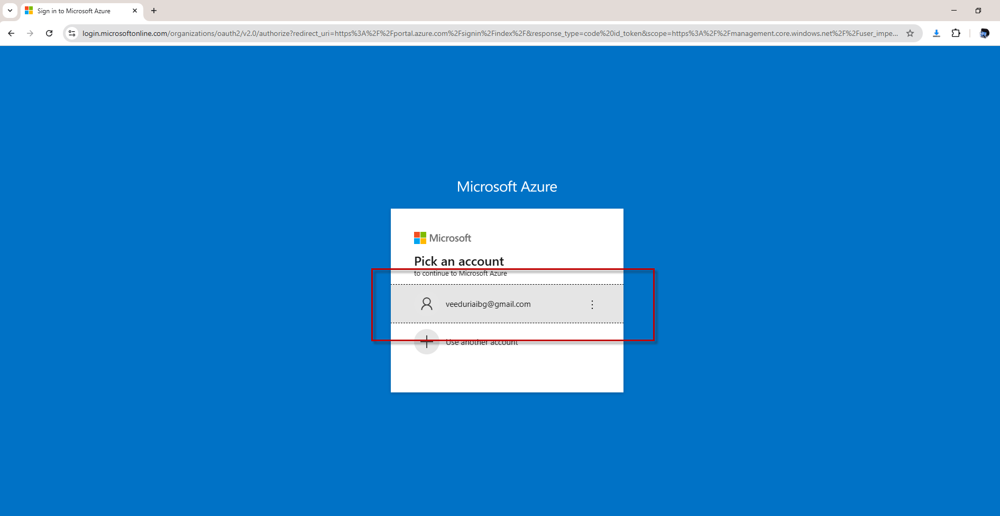
Step 1 — Pick the Microsoft account to continue to the Azure portal.
Because you are signing in with a personal Microsoft account (such as one registered with a Gmail address), Microsoft asks you to prove your identity with a one-time verification code instead of a classic password prompt.
- After selecting your account, the “Get a code to sign in” screen appears, confirming the email the code will be sent to — in this example, veeduriabg@gmail.com.
- Click the Send code button (highlighted in red below).
- Microsoft emails a short one-time code to that address.
- On the next screen, open your email inbox, copy the code, paste/enter it into the verification field, and continue.
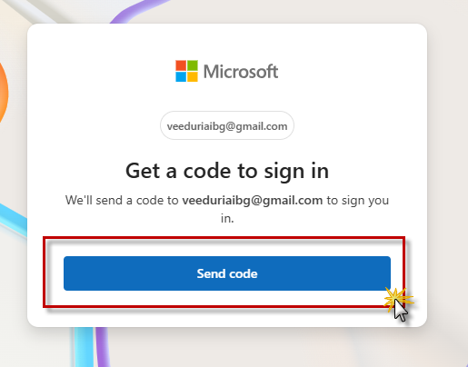
Step 2 — Click "Send code" to receive a one-time sign-in code by email.
Microsoft has emailed the verification code. Now switch to your email provider — in this example, Gmail — to fetch it. Since the sign-in used a Gmail address, the code arrives in the Gmail inbox.
- Open a new browser tab and go to https://mail.google.com, signed in with the same account you used for Azure (veeduriabg@gmail.com).
- In the inbox, locate the email from “Microsoft account team” with the subject “Your single-use code” (highlighted in red below) — it usually appears within seconds.
- Open it and copy the code shown in the body — in this example, 514944.
- Return to the Azure sign-in tab, enter the code in the verification field, and continue.
- If the email has not arrived after a minute or two, go back to the Azure tab, click resend and try again.
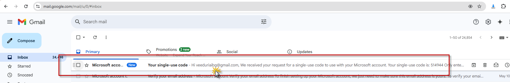
Step 3 — In Gmail, open the "Your single-use code" email from the Microsoft account team.
The email from the Microsoft account team (account-security-noreply@accountprotection.microsoft.com) contains the one-time code you need to finish signing in.
- Open the “Your single-use code” email.
- Find the line “Your single-use code is:” — in this example the code is 514944 (highlighted in red below).
- Copy the code and switch back to the Azure sign-in tab.
- Paste or type the code into the verification field and continue.
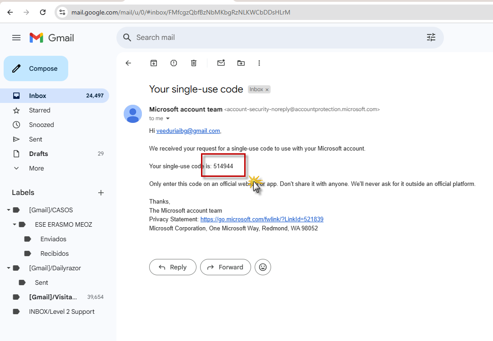
Step 4 — The email body shows the single-use code to enter on the Azure sign-in screen.
After the code is accepted, Microsoft asks whether to keep the session open on this device so you won't have to repeat the whole sign-in (and email verification) every time you visit the portal.
- On the “Stay signed in?” screen, click Yes (highlighted in red below) — recommended for your own development machine.
- Choose No instead if you are on a shared or public computer.
- You are then redirected to the Azure portal home dashboard.
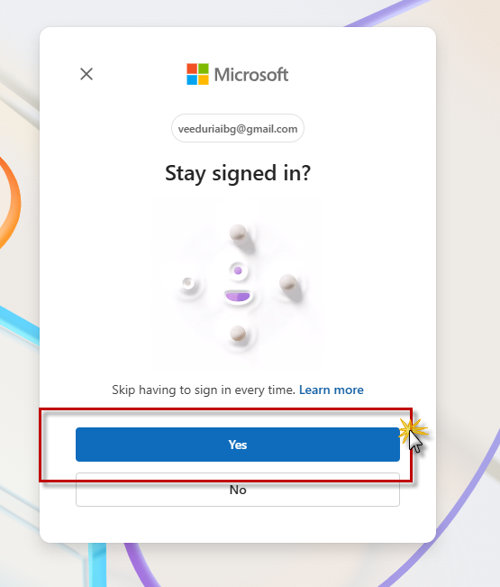
Step 5 — Click "Yes" to skip repeated sign-ins on this device.
The first time you reach the portal, Azure offers a guided tour of the interface. You don't need it for this guide, so you can skip it and go straight to the dashboard.
- When the “Welcome to Microsoft Azure” dialog appears (“Let's show you around before you get started”), click Maybe later (highlighted in red below).
- Optionally click Start tour instead if you'd like Azure to walk you through the portal basics now — you can always reopen the tour later from the help menu.
- The dialog closes and the Azure portal home dashboard is fully visible.
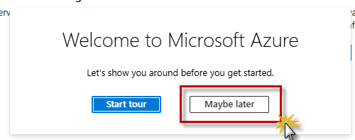
Step 6 — Click "Maybe later" to skip the guided tour and reach the dashboard.
You are now on the Azure portal home (portal.azure.com/#home). Besides configuring Azure DevOps, this guide creates an Azure Function as the cloud resource that the DevOps pipeline will build and deploy to. Everything starts from the Create a resource shortcut, which opens the Azure Marketplace.
- If you don't have a subscription yet, the home screen offers options such as “Start with an Azure free trial” ($200 credit for 30 days plus 12 months of popular free services) or “Azure for Students”.
- Under Azure services, click Create a resource — the first tile with the + icon (highlighted in red below).
- The Create a resource page (Marketplace) opens; in the next steps you will search for Function App and configure it.
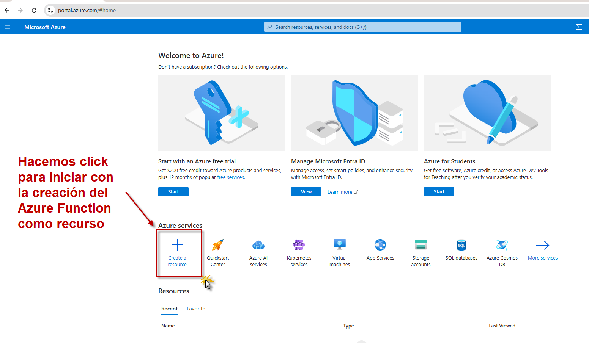
Step 7 — On the portal home, click "Create a resource" to begin creating the Azure Function.
The Create a resource page is Azure's Marketplace, with categories on the left (Compute, Databases, DevOps, Web, …) and popular services and products in the center. The service we need — a Function App — is among the most popular, so it appears right at the top.
- On the Create a resource page, locate Function App in the Popular Azure services list (highlighted in red below) — or type “Function App” into the Search services and marketplace box.
- Click Create on the Function App tile (or the tile itself).
- The Create Function App wizard opens, starting with the Basics tab that you will fill in next.
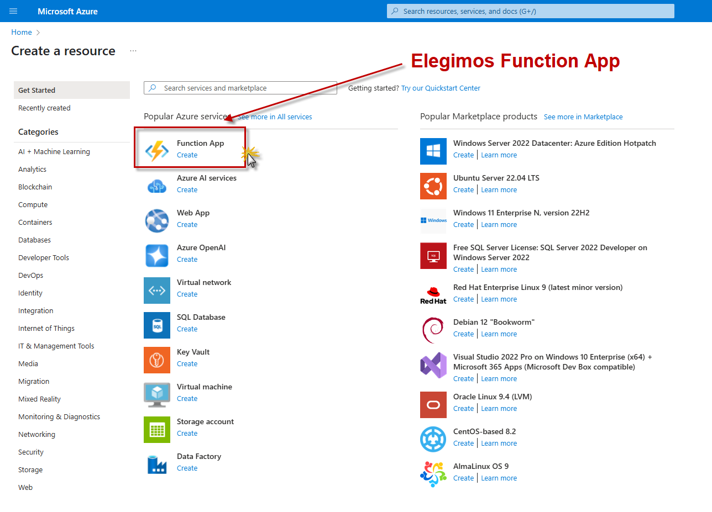
Step 8 — Pick "Function App" (the lightning-bolt icon) from the Marketplace.
Every resource in Azure — including a Function App — must live inside a subscription. If your account doesn't have one yet, Azure intercepts the Create a resource flow and shows the “Welcome to Azure! Don't have a subscription?” page with sign-up options.
- On the “Welcome to Azure!” page, choose “Start with an Azure free trial” (highlighted in red below) and click Start. It includes $200 of free credit for 30 days plus 12 months of popular free services.
- Complete the free-trial sign-up form Azure presents: confirm your profile, verify your identity by phone, and add a credit card (used to validate your identity — you won't be charged unless you explicitly upgrade).
- Alternative: if you are a student, pick “Azure for Students” instead — it grants free credit without requiring a credit card.
- Once the trial is active, return to Create a resource and continue with the Function App selection from the previous step.
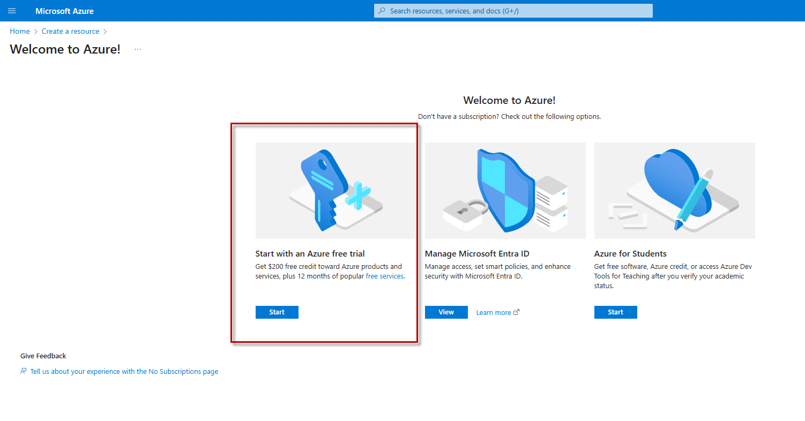
Step 9 — No subscription yet? Start the Azure free trial to unlock resource creation.
Collaborators and the guest directory
Steps 10–20 · inviting an external user, accepting the invitation from the guest side, and confirming the guest in the directory.
From the primary Azure account (the one that owns the subscription), the other members of the team will be invited to participate as contributors. The Users shortcut on the portal home takes you straight to user management in Microsoft Entra ID.
- On the Azure portal home, under Azure services, click the Users tile (highlighted in red below).
- The Users | All users page opens, listing every identity in your directory.
- From here you will invite the remaining team members (next step): add each user and then grant them the Contributor role so they can work on the subscription's resources — for example the Function App and its resource group.
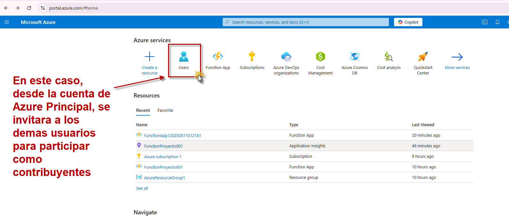
Step 10 — Click "Users" to manage directory users and start inviting contributors.
The Users | All users page (default directory) lists every identity in your tenant. Here you add the teammates who will collaborate on the project. The list shows both Member accounts and Guest accounts added by invitation — in the example below, a guest user added via invitation and the member Manuela Cortés Granados.
- On Users | All users, click + New user (highlighted in red below).
- Pick how to add the person:
- Create new user — generates a corporate identity in your directory (id @<domain>.onmicrosoft.com with an auto-issued password).
- Invite external user — sends an email invitation; ideal for personal accounts such as Gmail-registered Microsoft accounts. The person must redeem the invitation to gain access, and appears with User type: Guest.
- Fill in the identity basics (display name and email / user principal name) and click Review + create (or Invite for guests).
- Once the user exists in the directory, grant them the Contributor role (covered in the next step).
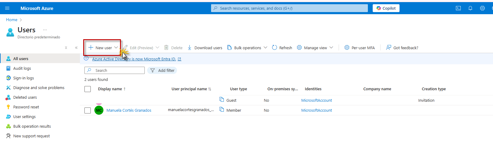
Step 11 — Click "+ New user" to add the next collaborator to the directory.
The + New user button is actually a split button: clicking its arrow reveals the two ways of adding someone. Since the collaborators join with their own personal Microsoft accounts (Gmail-registered), the invitation route is the one to use.
- Open the + New user dropdown (highlighted in red below).
- Select “Invite external user” — “Invite an external user to collaborate with your organization” — rather than “Create new user”, which would mint an internal account (@<domain>.onmicrosoft.com) instead.
- The Invite external user form opens: enter the person's email address, a display name, and an optional welcome message.
- Review the assignment options shown on the form (you can add group memberships here), then click Review + invite to send the invitation.
- The guest receives an acceptance email; once they accept, they appear in the users list with User type: Guest.
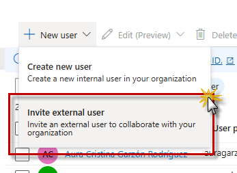
Step 12 — Select "Invite external user" so collaborators can join with their own accounts.
The Invite external user wizard has four tabs — Basics, Properties, Assignments, and Review + invite. Only the Basics tab is required to get the guest into the directory.
- On the Basics tab, under Identity, enter the collaborator's email in Email — here veeduriabg@gmail.com. The Display name auto-fills from the address; adjust it to the person's real name if you prefer (both fields are highlighted in red below).
- Optionally type a short Message so the invitation doesn't feel like spam, and add a Cc recipient if someone else should get a copy. Leave Send invite message checked.
- Leave the Invite redirect URL at its default (myapplications.microsoft.com) — it's where the guest lands after accepting.
- Click Review + invite (highlighted at the bottom) to send the invitation right away. Alternatively, use Next: Properties to add job details first, or the Assignments tab to add the guest to groups or roles during the invite.
- The guest receives an email titled with your organization's invitation — they must accept it (redeem it) to become active.
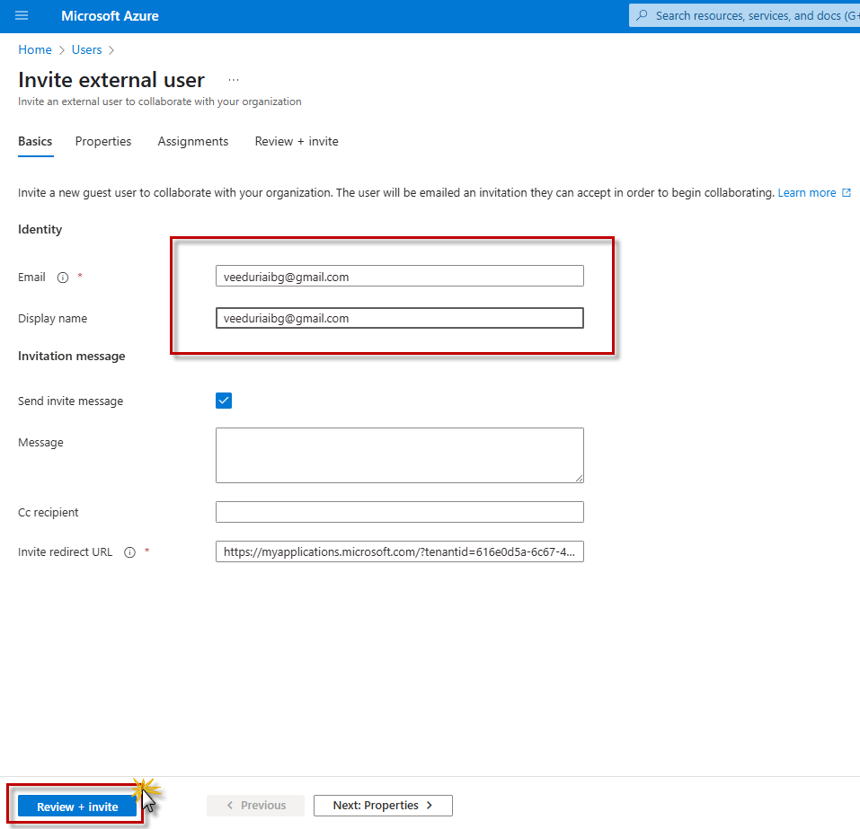
Step 13 — Enter the guest's email, keep the defaults, and click "Review + invite".
The Review + invite tab condenses everything the guest will receive into one summary. Take a few seconds to verify it — once sent, the invitation email is on its way.
- Open the Review + invite tab (highlighted at the top).
- Check the summary: Email and Display name — veeduriabg@gmail.com in this example; Send invite message: Yes; the redirect URL; and under Properties, User type: Guest. The Assignments section (Groups, Roles) is empty because none were selected.
- Click Invite (highlighted at the bottom-left).
- A confirmation notification appears and the invitation email is sent. The guest must open it and accept — from that moment they show up in Users | All users as a Guest.
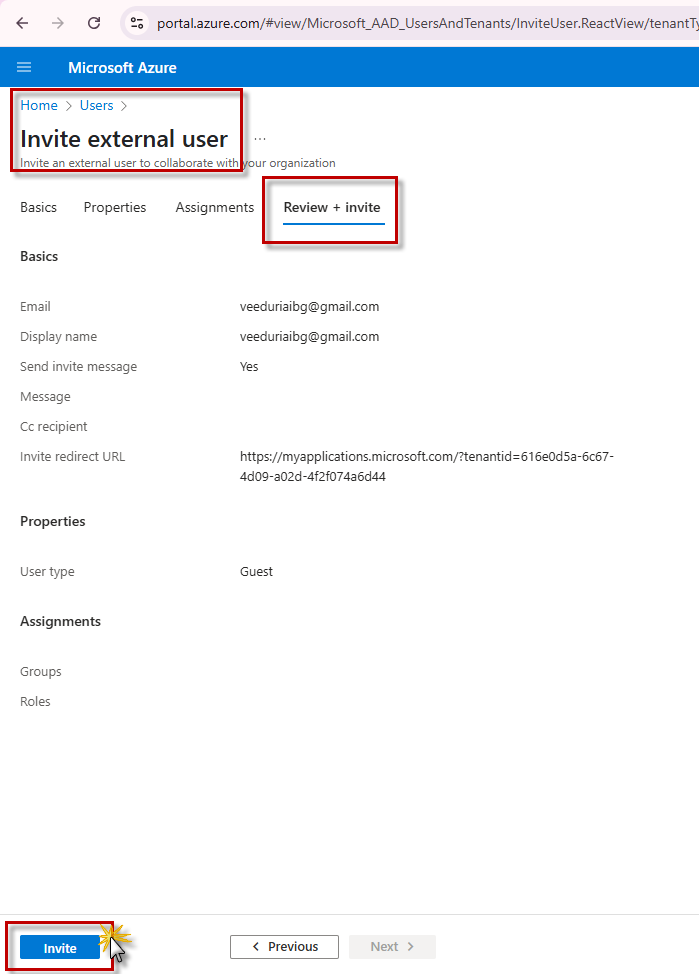
Step 14 — Verify the guest summary and click "Invite" to send the email invitation.
As soon as you click Invite, the portal reports the result in the notification panel at the top-right of the toolbar.
- Look at the top-right corner of the portal — the notification (highlighted in red below) reads “User invitation in progress for user veeduriabg@gmail.com”.
- Within a few seconds it updates to “Successfully invited user” — the invitation email has been sent and the guest account now exists in the directory.
- The collaborator can now accept the invitation from their inbox; once accepted, they appear as an active guest in Users | All users.
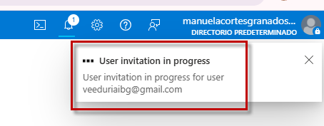
Step 15 — The portal confirms the invitation is being processed for the guest user.
Now switching seats: everything so far was done by the subscription owner. From here, the steps are performed by the invited collaborator, starting in their own inbox.
- Sign in to Gmail with the invited account and look in the inbox for a message from “Microsoft Invitations” (highlighted in red below).
- The subject reads “Directorio predeterminado invited you to access applications within their organization” — the directory name your teammate entered on the invite.
- Note the security line in the preview: “Please only act on this email if you trust the organization represented below”. Verify you recognize the sender organization before doing anything else.
- Open the email and click Accept invitation — the redemption flow is covered in the next step.
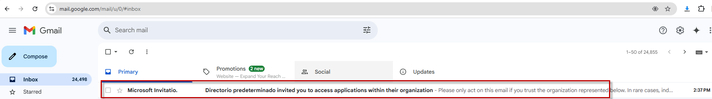
Step 16 — In the guest's Gmail, open the Microsoft Invitations email.
The invitation email contains everything needed to verify who is inviting you and where you will land after accepting — worth a quick check before clicking anything.
- Open the invitation email. Verify the sender: “Microsoft Invitations on behalf of Directorio predeterminado” (invites@microsoft.com) and the red warning banner about acting only on invitations you trust.
- Confirm the details in the body: Organization: Directorio predeterminado and Domain: manuelacortesgranadosgmail.onmicrosoft.com — your teammate's Azure directory.
- Click Accept invitation (highlighted in red below).
- The browser opens the redemption page at myapplications.microsoft.com, where you sign in with the invited Microsoft account and confirm access — covered next.
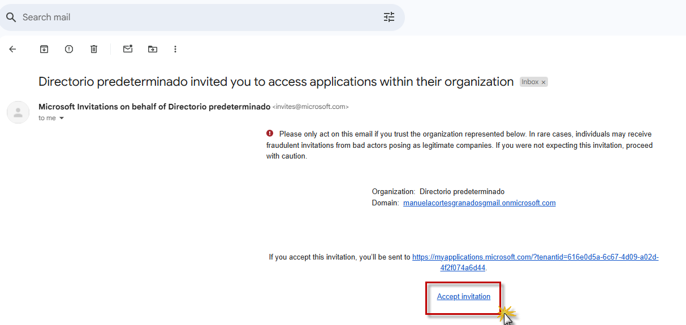
Step 17 — Verify organization and domain, then click "Accept invitation".
After clicking Accept invitation and signing in with the invited Microsoft account, Microsoft shows the consent screen that formalizes the relationship between the guest and the organization's directory.
- Review the “Permissions requested by” screen: the organization is Directorio predeterminado (manuelacortesgranadosgmail.onmicrosoft.com).
- By accepting, you allow the organization to:
- Receive your profile data.
- Collect and log your activity.
- Use your profile data and activity data.
- Click Accept (highlighted in red below) to grant the permissions and complete the redemption. Cancel aborts the process and the guest account stays inactive.
- You are redirected to myapplications.microsoft.com (My Apps), now appearing as a guest of the organization. From the owner's side, the user now shows as an active Guest in Users | All users.
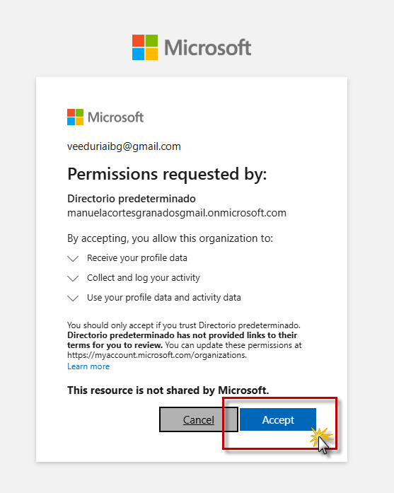
Step 18 — Review the permissions and click "Accept" to finish redeeming the invitation.
This is the redirect destination promised by the invitation email — the guest's proof that the redemption worked. The My Apps portal is the personal launchpad a user gets for every organization they belong to.
- After clicking Accept on the permissions screen, the browser lands on myapplications.microsoft.com — the Apps dashboard.
- “There are no apps to show” is the expected result: the guest hasn't been assigned any enterprise applications yet, and none are needed for this project.
- The important part is invisible: the invited Microsoft account is now linked to the Directorio predeterminado directory as a Guest.
- The guest can simply close this tab. The rest of the work — granting the Contributor role — happens on the owner's account, as shown from step 24 on.
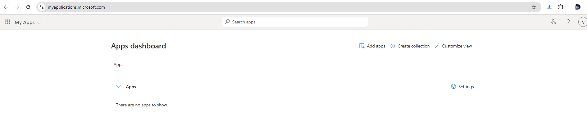
Step 19 — The empty My Apps dashboard confirms the guest redemption completed.
Back on the owner's account (check the top-right corner: the session is signed in as manuelacortesgranados… in Directorio predeterminado), refresh the directory to confirm the invitation landed.
- Reopen Users | All users (breadcrumb highlighted at the top-left).
- The list now reports 3 users found: the member Manuela Cortés Granados, the earlier guest Aura Cristina Garzón Rodriguez, and — highlighted in red — the newly invited veeduriabg@gmail.com with User type: Guest and Creation type: Invitation.
- Seeing the guest listed means the invitation was redeemed successfully — no pending acceptance remains.
- Optionally click the user's name to open their profile (status, contact info, resend/reset actions live there).
- The directory is ready; next comes granting the Contributor role on the subscription.
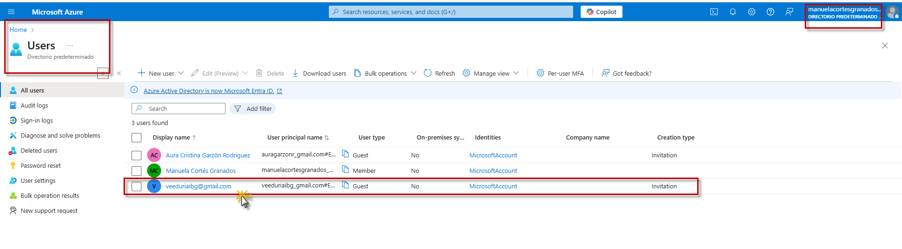
Step 20 — The invited guest now appears in Users | All users as "Guest / Invitation".
Subscription access and creating the app
Steps 21–32 · subscriptions, IAM role assignments, switching accounts, and creating the Function App as a Contributor.
The Contributor role will be granted at the subscription level, so the first move is to reach your subscription. The portal home offers a direct shortcut to it.
- On the Azure portal home, under Azure services, click the Subscriptions tile — the yellow key icon (highlighted in red below).
- You can also reach it from the Resources list below, where Azure subscription 1 appears under Recent.
- The Subscriptions page opens, listing your subscription — click Azure subscription 1 to open it; the Access control (IAM) step follows.
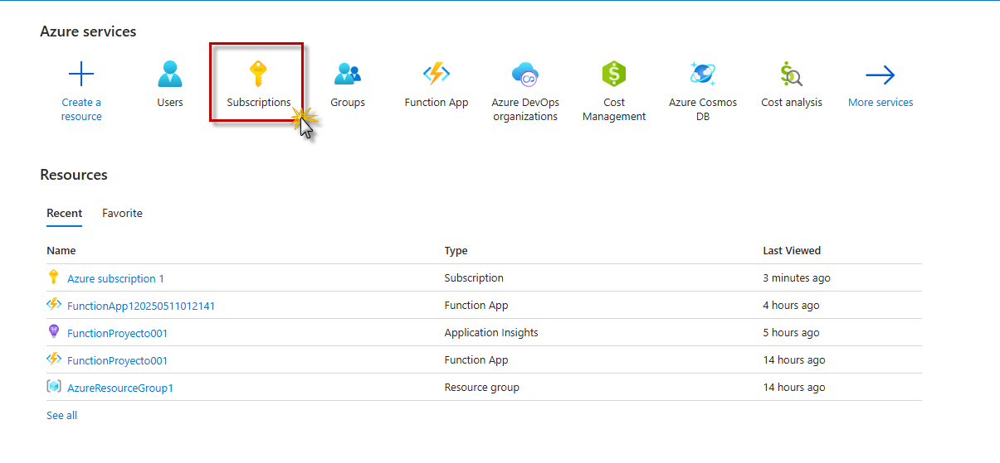
Step 21 — Click the "Subscriptions" tile to reach Azure subscription 1.
The Subscriptions page lists every subscription you can manage, with its health at a glance — role, cost, and status. One click takes you inside.
- On the Subscriptions page, locate Azure subscription 1 (highlighted in red below) — the only subscription in this directory.
- Check the row's details before opening it: Status: Active, My role: Owner, Current cost: $0.00, and the subscription ID 0e9f2fce-a0ea-4f4d-9efa-f7113d99c023.
- Click the subscription name to open its Overview blade.
- The next step works from this blade's Access control (IAM) menu, where the Contributor role will be granted to the invited guest.
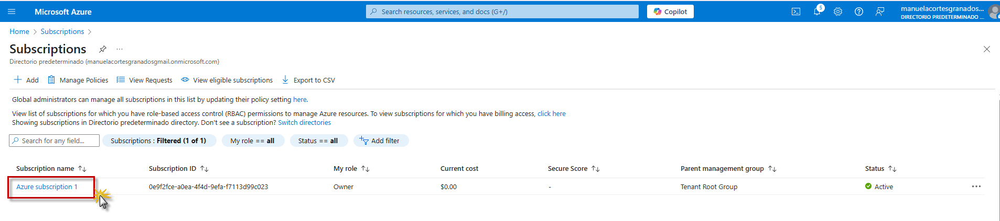
Step 22 — Open "Azure subscription 1" (Active, you are Owner) to manage its access.
Inside Azure subscription 1, the Overview blade shows the essentials (ID, directory, status, your role, plan) plus cost and usage charts. The menu on the left is where access management lives.
- On the subscription's Overview blade, look at the left navigation menu.
- Click Access control (IAM) — highlighted in red with the arrow annotation below, right under Activity log.
- The IAM blade opens, defaulted to the Check access view. The Role assignments tab — covered in the next step — is where you'll see and add role assignments.
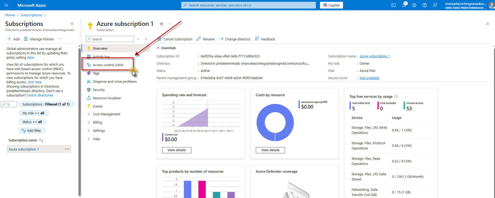
Step 23 — Click "Access control (IAM)" in the subscription's left menu.
With the guest active in the directory, it's time to grant them permissions over the subscription's resources. Back on the owner's account, Azure RBAC (role-based access control) is managed from the subscription's Access control (IAM) blade.
- From the portal, go to Subscriptions and open Azure subscription 1.
- In the left menu, click Access control (IAM) (highlighted in red below).
- Select the Role assignments tab (highlighted, with the arrow annotation) — this lists everyone who currently has a role on the subscription.
- To grant the Contributor role, click Add role assignment in the “Grant access to this resource” card — or the + Add button at the top of the blade. The assignment wizard is covered in the next steps.
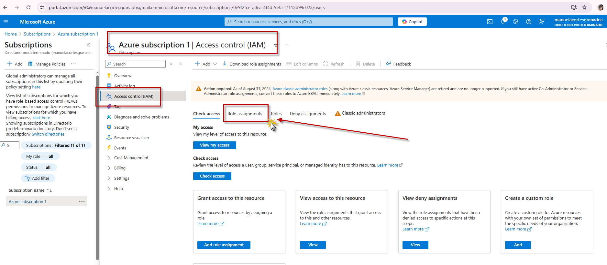
Step 24 — On the subscription, open Access control (IAM) and go to the Role assignments tab.
On the Role assignments tab you can review who already has access — the list below shows Owner (2) and Contributor (2) entries at the This resource scope, with 5 of the 4,000 allowed assignments in use. To add a new one, the + Add button in the toolbar opens the correct entry point.
- On the Role assignments tab, open the + Add dropdown in the toolbar (highlighted in red below).
- Choose Add role assignment — the RBAC route.
- Avoid the other two options: Add co-administrator belongs to the retired classic administrator model, and Add custom role is for defining brand-new role definitions, not assigning existing ones.
- The Add role assignment wizard opens with its four tabs — Role, Members, Conditions, and Review + assign — configured in the following steps.
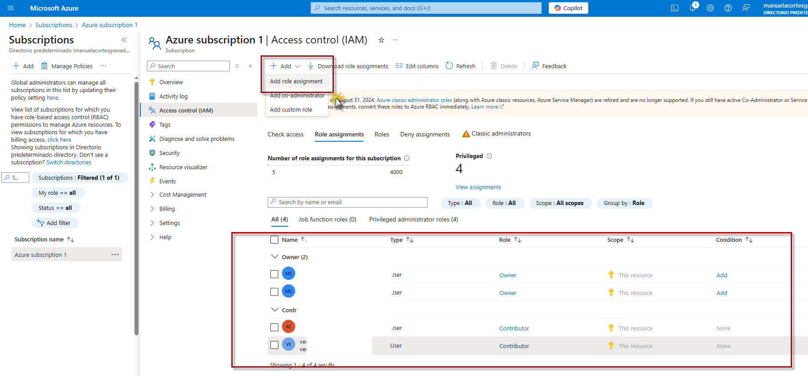
Step 25 — Toolbar "+ Add" → "Add role assignment" starts the wizard.
This guide switches between two identities — the guest (veeduriabg@gmail.com) and the subscription owner (Manuela Cortés Granados). The account menu in the portal's top-right corner is how you move between them. Here, the signed-in guest signs out so the owner can continue the Add role assignment flow.
- Click your avatar / account name in the portal's top-right corner. The menu shows the current identity — veeduriabg@gmail.com under Directorio predeterminado — with View account and Switch organization links.
- Click Sign out (highlighted in red below) to end the session completely.
- To change identity without a full sign-out, use “Sign in with a different account” at the bottom of the same menu — handy when both accounts are yours.
- Sign back in as the subscription owner (Manuela Cortés Granados) and return to Access control (IAM) to continue the role assignment wizard.
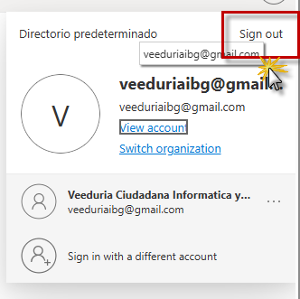
Step 26 — The account menu: "Sign out" ends the session; "Sign in with a different account" switches identity.
Now the collaborator's turn. With the Contributor role granted, the guest (veeduriabg@gmail.com — check the top-right corner) can create and manage resources on their own. The Marketplace flow is the same one from steps 8 and 9, but this time it succeeds under the guest's own credentials.
- Signed in as veeduriabg@gmail.com, open Create a resource from the portal home.
- In Popular Azure services, click the Function App tile (highlighted in red below) — or search for it — and then Create.
- Thanks to the Contributor assignment, the wizard will let you pick the subscription (Azure subscription 1) and complete creation — without it, the Review + create validation would fail with a “does not have permission” error.
- Fill in the wizard's tabs as before: Basics (resource group, name, runtime stack, region, plan), then Hosting, Networking, Monitoring, and finally Review + create.
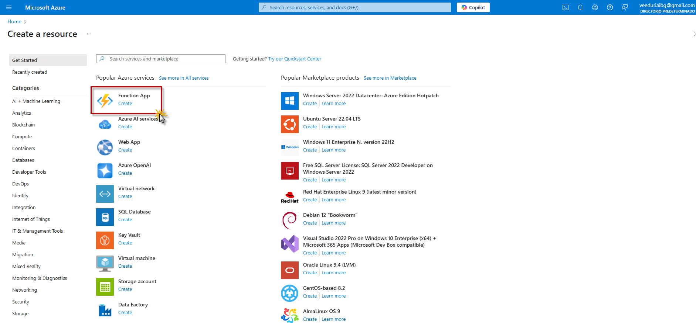
Step 27 — The collaborator (Contributor) selects Function App to create it themselves.
The Create Function App wizard starts by asking how the app will be hosted — this choice determines how it scales, what resources each instance gets, and how it is billed. The page lays the five options side by side in a comparison table.
- Review the comparison table: Scale to zero, Scale behavior, Virtual networking, Dedicated compute / cold start, and Max scale out (instances).
- Select Flex Consumption (highlighted in red below) — high scalability with compute choices, virtual networking support, pay-as-you-go billing, scale to zero, fast event-driven scaling, and up to 1,000 instances.
- The alternatives, for reference: Consumption (the classic pay-per-execution plan, up to 200 instances), Functions Premium (pre-warmed instances, no cold start), App Service (runs web and function apps on a dedicated plan), and Container Apps environment (containerized microservices with KEDA).
- Click Select (highlighted at the bottom-left) to confirm and move on to the Basics tab.
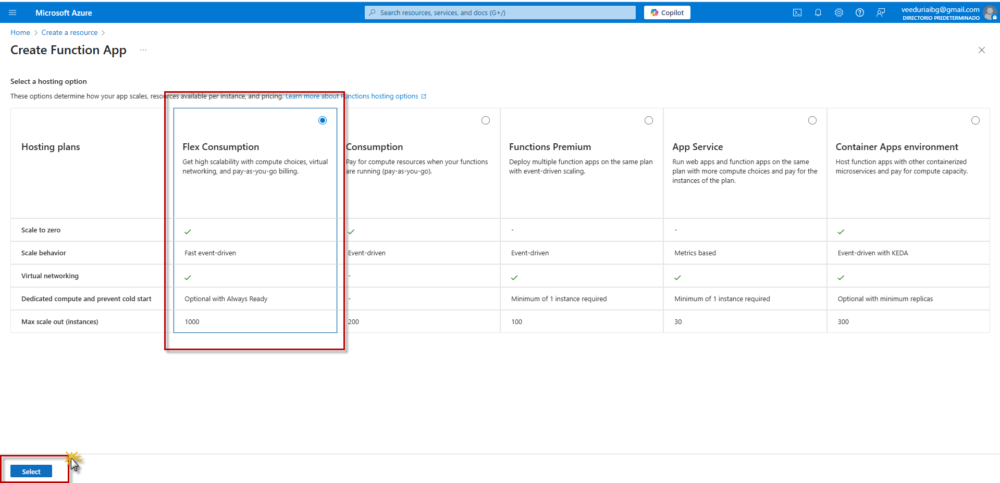
Step 28 — Pick "Flex Consumption" and click Select to continue.
The Basics tab gathers the identity of the app: where it lives (subscription and resource group), what it is called, where it runs, and on what technology. The fields highlighted in red below are the ones touched in this example.
- Project Details: confirm Subscription: Azure subscription 1 and set Resource Group: AzureResourceGroup1 (or click Create new for a fresh group).
- Instance Details: set the Function App name — here FunctionAppGrupoLoyal. It must be globally unique: it becomes functionappgrupoloyal.azurewebsites.net. The green check means the name is available.
- Choose the Region: Canada Central — normally the region closest to your users.
- Pick the technology: Runtime stack: .NET with Version: 8 (LTS), isolated worker model, and Instance size: 2048 MB.
- Click Review + create (highlighted at the bottom-left) to jump straight to validation — or walk the remaining tabs (Storage, Networking, Monitoring, Deployment, Authentication, Tags) with Next if you need non-default settings.
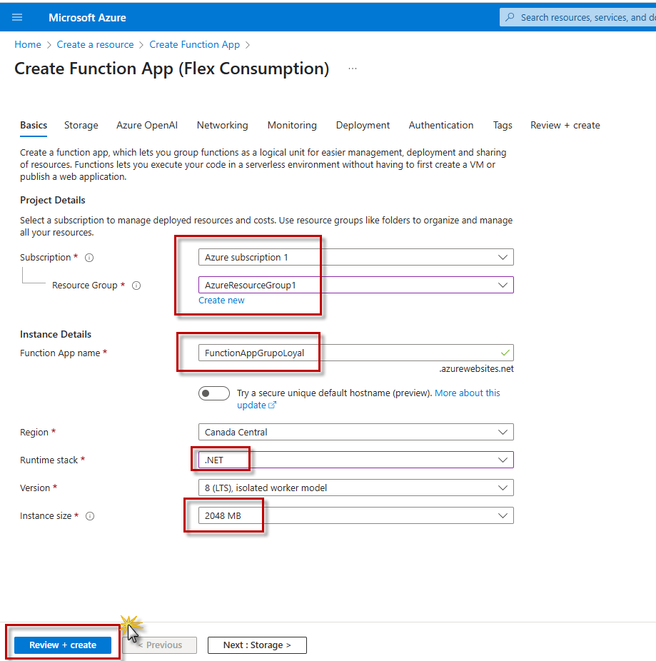
Step 29 — Basics: subscription, resource group, unique name, region, .NET 8 runtime, instance size.
The Review + create tab runs a final validation and condenses the whole configuration into one summary — the last chance to catch a typo before resources are actually provisioned (and before anything can bill).
- Open the Review + create tab (highlighted at the top). The blue banner about basic authentication being disabled is informational — modern deployments use Microsoft Entra credentials instead.
- Check the Details block: subscription 0e9f2fce-…, resource group AzureResourceGroup1, name FunctionAppGrupoLoyal, runtime .NET 8 (LTS), isolated worker model, instance size 2048 MB.
- Check the Hosting block — Azure will create these automatically: storage account azureresourcegroup1a3fd (required by Functions) and the Flex Consumption plan ASP-AzureResourceGroup1-9c29 (Linux, Canada Central), plus Monitoring (New) — the Application Insights resource.
- Optionally click Download a template for automation to export the equivalent ARM/Bicep template — handy for Infrastructure as Code later.
- Click Create (highlighted at the bottom-left). This fires the template deployment confirmed by the notification in the next step.
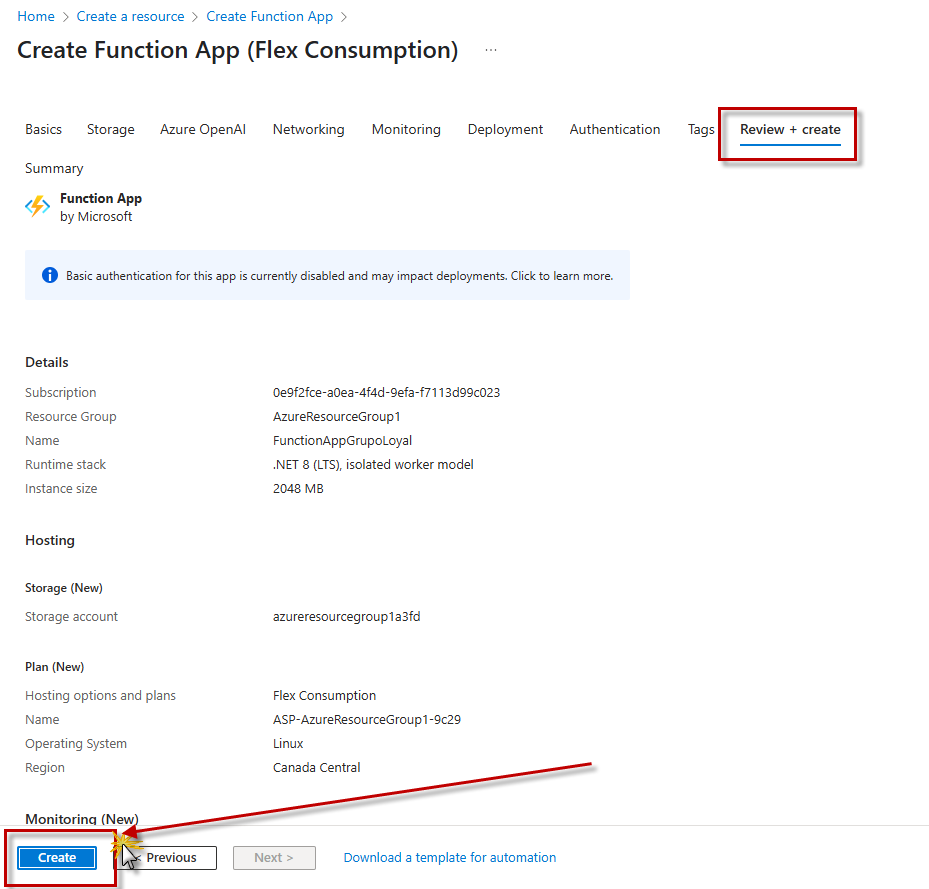
Step 30 — Validate the summary and click "Create" to provision everything.
After the Function App wizard's final Review + create validation passes and Create is clicked, Azure submits an ARM template deployment behind the scenes — the portal reports it immediately in the notification panel.
- Look at the top-right notification (highlighted in red below): “Initializing deployment…” — Initializing template deployment to resource group ‘AzureResourceGroup1’.
- This means the Function App and its dependencies (storage account, Application Insights, hosting plan) are being rolled out as a single template deployment into AzureResourceGroup1.
- After a minute or two the notification changes to “Deployment is in progress” and finally “Your deployment is complete”, with a Go to resource shortcut.
- To follow the rollout in detail, open the resource group (AzureResourceGroup1) and check Deployments — or click the notification itself, which links to the deployment's progress page.
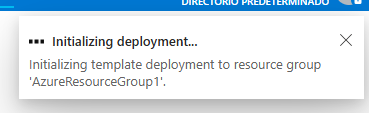
Step 31 — The template deployment to AzureResourceGroup1 has started.
A couple of minutes after Create, the deployment's own Overview page confirms the result with a green check: “Your deployment is complete”. This page is reachable by clicking the completion notification, or under the resource group's Deployments blade.
- Read the deployment header: name Microsoft.Web-FunctionApp-Portal-d7487089-9723, subscription Azure subscription 1, resource group AzureResourceGroup1, plus the start time and the Correlation ID (useful when opening a support ticket).
- Expand Deployment details to see every resource the template provisioned — the Function App, its hosting plan, the storage account, and Application Insights.
- Click Go to resource (highlighted in red below) under Next steps — it opens the new Function App's overview page.
- The left menu here (Inputs, Outputs, Template) stays available: the Template view shows the exact ARM JSON that was deployed, ideal for reusing as Infrastructure as Code.
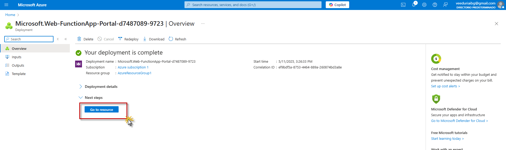
Step 32 — "Your deployment is complete" — click "Go to resource" to open the Function App.
Organization, project and repository
Steps 33–42 · the DevOps organization, the first project, the empty repository and its clone URL.
With the Azure side ready, it's time for the star of this guide: Azure DevOps. Browse to https://dev.azure.com and sign in with your Microsoft account — the very first time, DevOps asks for a few profile details before creating your organization.
- In a browser, open https://dev.azure.com and sign in with the Microsoft account (here, veeduriabg@gmail.com — note the account name in the top-right bar).
- On the “We need a few more details” screen, confirm your name — Veeduria Ciudadana Informatica y Buen Gobierno — and the contact email, both pre-filled from your Microsoft account.
- Select your country/region in the From dropdown (required).
- Optionally untick the box about receiving information, tips, and resources about Microsoft developer tools if you don't want marketing email.
- Click Continue (highlighted in red below). By continuing you accept the Terms of Service, Privacy Statement, and Code of Conduct.
- The next screen lets you create (or join) an Azure DevOps organization — covered in the following steps.
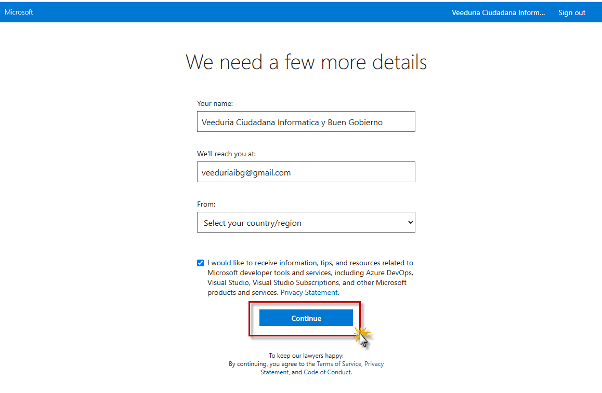
Step 33 — Fill in the DevOps profile details and click Continue.
With the profile completed, the Get started with Azure DevOps landing page appears. An organization is the top-level container in Azure DevOps: it groups your projects, repos, pipelines, and boards, and is billed (or made free) as a unit.
- Review the profile panel on the left — Veeduria Ciudadana Informatica y Buen Gobierno, veeduriabg@gmail.com, account type Microsoft account, country Colombia — and use Edit profile if anything needs correcting.
- Click Create new organization (highlighted in red below) on the right side.
- The creation form opens, asking for an organization name and hosting region — configured in the next step.
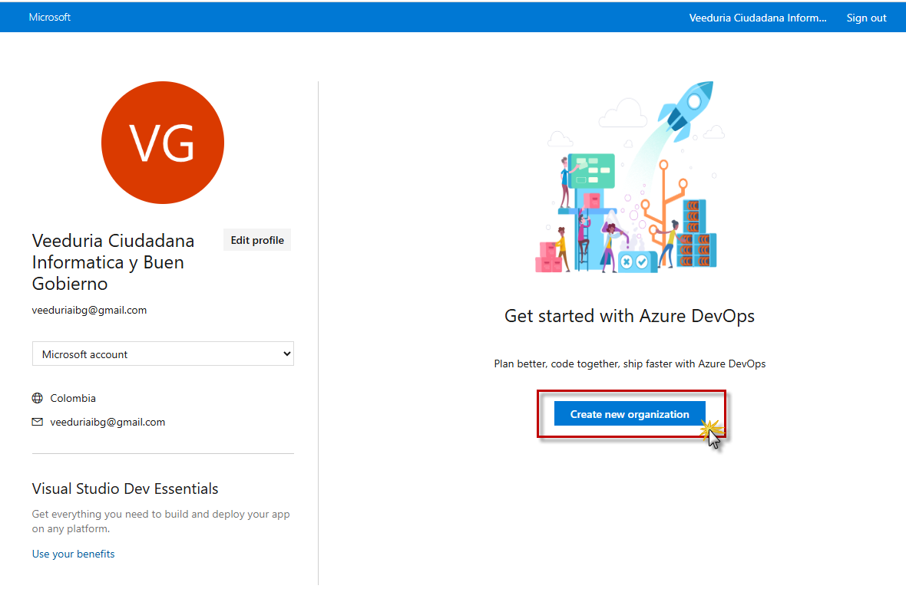
Step 34 — Click "Create new organization" to set up your DevOps organization.
A compact confirmation dialog appears before the organization is actually provisioned — it binds the new organization to a specific Microsoft account and directory.
- Verify the identity shown at the top: veeduriabg@gmail.com. The new organization will be created under this account.
- Optionally click Switch directory to host the organization in a different Microsoft Entra tenant (for example, the work directory instead of the personal one) — for this guide, the default directory is fine.
- Untick the information/offers checkbox if you prefer no marketing email.
- Click Continue (highlighted in red below). This accepts the Terms of Service, Privacy Statement, and Code of Conduct, and provisions the organization with a default name — you can rename it right after.
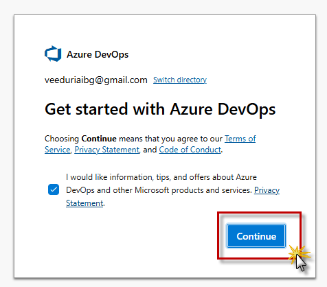
Step 35 — Confirm the identity and click Continue to provision the organization.
The “Almost done…” screen collects the three final inputs for the organization: its name, its hosting region, and a human-verification code.
- Set Name your Azure DevOps organization — here veeduriaibg, which becomes the permanent URL dev.azure.com/veeduriaibg. Use letters, digits, and hyphens only.
- Choose where projects will be hosted in the We'll host your projects in dropdown — this example selects Europe. (Pick the region closest to your team; for Colombia, a US region is usually lower-latency.)
- Type the characters you see in the CAPTCHA image — in the example, the code 6SLRSJ has been entered.
- Click Continue (highlighted in red below). The organization is provisioned and you land in it, ready to create the first project.
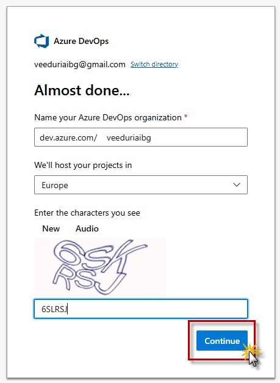
Step 36 — Organization name, hosting region, CAPTCHA… then Continue.
After Continue, Azure DevOps provisions the organization behind the scenes. This loading screen is the only thing between you and your brand-new DevOps home.
- Wait a few seconds — no action is required while the spinner runs and the message “Taking you to your Azure DevOps organization…” is displayed.
- The redirect ends inside your organization, at dev.azure.com/veeduriaibg, showing the “Create a project to get started” page.
- If the screen hangs for more than a minute, refresh the page — the organization is usually already created and the session simply needs to resume.
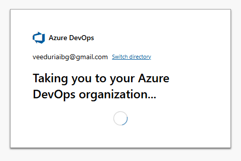
Step 37 — Brief provisioning spinner on the way into the new organization.
Inside the new organization, the first thing Azure DevOps asks for is a project — the container for your boards, repositories, pipelines, and test plans. This minimal form only needs a name and a visibility choice.
- Type the Project name — in this example ProyectoVeeduriaBG001 (highlighted in red below).
- Choose the Visibility: Private is selected here, so only the people you grant access to can view the project. Public is disabled for this organization — it can be turned on later via organization policies, with the caveat that some features (like TFVC) are not supported for public projects.
- The streamlined form applies DevOps defaults for everything else — Git version control and the Agile work item process — both changeable later in project settings.
- Click + Create project (highlighted in red, arrow annotation). After a few seconds the project's Summary page opens, with Boards, Repos, Pipelines, and Test Plans ready in the left menu.
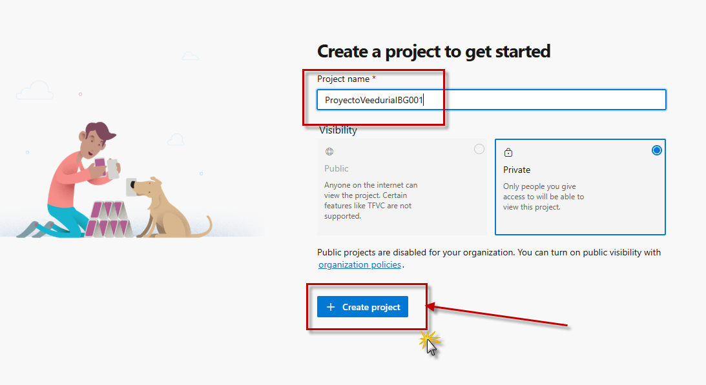
Step 38 — Name the project, keep it Private, and click "+ Create project".
Right after clicking + Create project, the form grays out and a spinner appears. Behind the scenes, DevOps is scaffolding the project's default team, board, Git repository, and service connections.
- Wait a few seconds while the highlighted banner shows “New project is being created…” — the name field and visibility choice stay locked during this step.
- When provisioning finishes, the banner is replaced by the project's Summary page — the project home with its Wiki and dashboard shortcuts.
- If creation seems stuck, a page refresh usually resolves it; the project either exists or the form returns with an error explaining what to fix (most commonly, a duplicate project name).
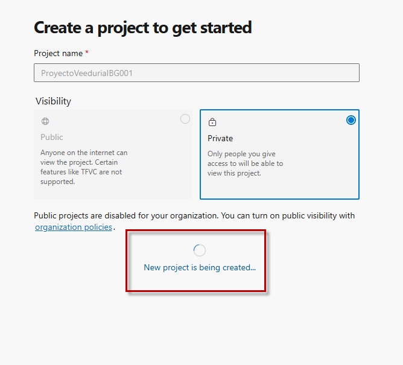
Step 39 — The brief provisioning spinner right after "+ Create project".
Provisioning finished — the Summary page greets you with “Welcome to the project!” and shortcut buttons for every service. The breadcrumb confirms the full hierarchy: veeduriaibg / ProyectoVeeduriaBG001 / Summary.
- Take note of the left navigation — this is the hub you'll live in: Boards (work items, sprints), Repos (source control), Pipelines (CI/CD), Test Plans, and Artifacts (package feeds), plus Overview/Dashboards/Wiki above them.
- Click Repos in the left menu (highlighted in red with the arrow annotation below) — or the Repos shortcut button in the welcome panel.
- Repos opens the project's empty Git repository, offering to clone it, import existing code, or initialize it with a README — the next step of the guide.
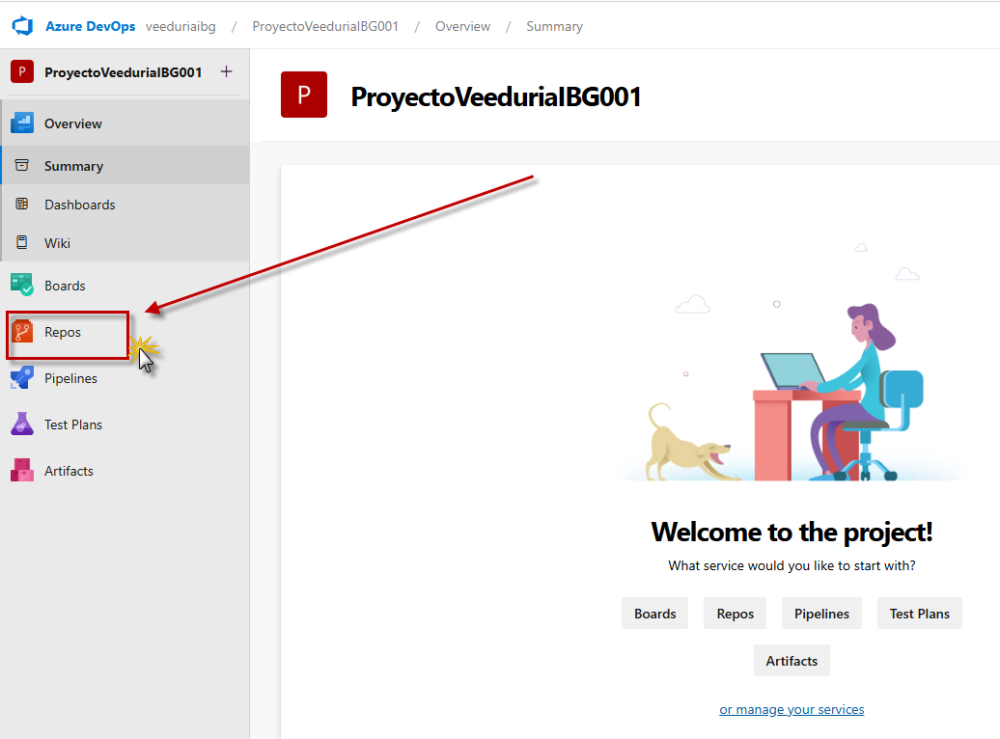
Step 40 — The project is live; open Repos to start with source control.
Repos → Files opens on the project's default Git repository, but nothing has been committed yet, so DevOps greets you with “ProyectoVeeduriaBG001 is empty. Add some code!”. The page is a menu of ways to put code in: clone it, push an existing local repo, import one, or initialize it with a first file.
- Check where you are: the breadcrumb reads veeduriaibg / ProyectoVeeduriaBG001 / Repos / Files, and the repo picker (with the red repo icon) points at ProyectoVeeduriaBG001 — the only repository in the project for now. The + next to the project name creates additional repos later.
- Under Clone to your computer, pick HTTPS (selected) or SSH and copy the URL: https://veeduriaibg@dev.azure.com/veeduriaibg/ProyectoVeeduriaBG001/_git/ProyectoVeeduriaBG001 — it is the address you paste into git clone, Visual Studio, VS Code, or any other Git client.
- Click Generate Git Credentials (highlighted in red with the arrow annotation below) when you need an explicit username/password pair for HTTPS instead of relying on the credential manager. DevOps shows the generated credentials once — copy them immediately.
- The dropdown beside Clone in VS Code offers the same one-click clone for other editors and IDEs, and the “Having problems authenticating?” link underneath points to the Git for Windows and IDE plugin downloads.
- If the code already exists on your machine, use the Push an existing repository from command line block: it hands you the finished git remote add origin command with this repository's URL already filled in.
- Import a repository migrates an existing repo from another host (GitHub, Bitbucket, another DevOps organization) without touching your local clone.
- The last panel, Initialize main branch with a README or gitignore, is the fastest way to get a non-empty repo: Add a README is already ticked, .gitignore is set to None, and clicking Initialize commits that first file and creates the main branch.
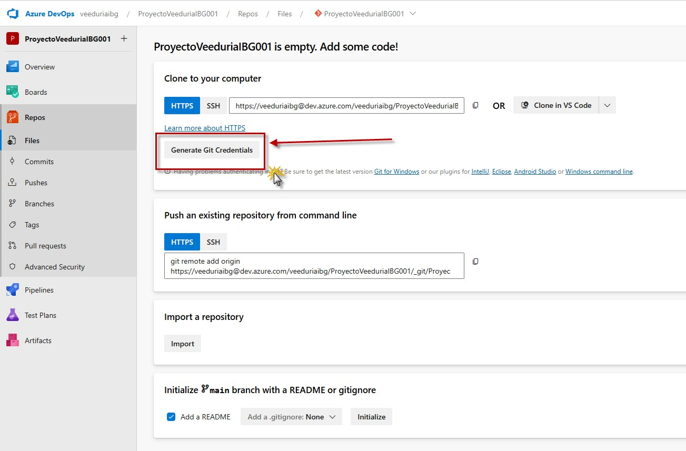
Step 41 — The empty repo page: clone URL, Generate Git Credentials (highlighted), push, import, and initialize options.
This step is the practical half of the clone block: taking the URL out of the page and getting a working password for it. After Generate Git Credentials is clicked, an inline Username / Password panel unfolds right below the clone URL — and it is the only time those values are ever displayed.
- The first red box is the whole Clone to your computer area: HTTPS is the selected tab (SSH sits beside it), and the field next to it holds the full clone URL ending in /_git/ProyectoVeeduriaBG001.
- Click the copy icon at the right edge of the URL field (second red box) to put the whole URL on the clipboard — typing it by hand is how mismatched characters sneak into remote configurations.
- Click Generate Git Credentials. The third red box appears: Username already filled with veeduriaibg — the same identity embedded before the @ in the clone URL.
- The Password field holds a long randomly generated secret (it starts Atg3n… in this example). It is the password Git must be given when it prompts for HTTPS authentication — not your Microsoft account password.
- Copy the password immediately using its own copy icon, before touching anything else. Read the warning banner first: “Copy the password now. We don't store it and you won't be able to see it again.” Once the panel closes or the page reloads, the value is gone for good — the only recovery is generating a new one.
- Use the pair on the first git clone, git push, or git pull: paste the username, then the password at the prompt. On Windows, Git Credential Manager stores it after that first successful authentication, so you stop being asked.
- If the password is lost, leaked, or rejected later, come back to this same button and generate a fresh pair — nothing else in the repository changes.
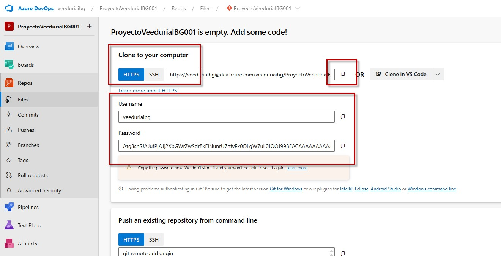
Step 42 — Copy the URL, generate the credentials, and save the password before the panel closes.
SourceTree: install and first clone
Steps 43–60 · installing SourceTree, setting the commit author, and cloning with generated Git credentials.
The repository exists and the credentials are in hand, but there is still no Git client on the machine. This guide does the rest of the work with SourceTree, a free Git GUI for Windows and Mac, instead of typing every command by hand. Step one is getting to the official site without landing on a mirror or an ad.
- In Google, search for sourcetree download and press Enter. The query is reflected in the address bar (google.com/search?q=sourcetree+download&…) — the long rlz/gs_lcrp parameters after it are ordinary tracking noise and can be ignored.
- Look at the first organic result. Above the title, Google shows the site name SourceTree with the globe icon and the domain https://www.sourcetreeapp.com. That domain check is the whole point of this step: sourcetreeapp.com is Atlassian's official site.
- Click the blue title “Sourcetree | Free Git GUI for Mac and Windows” (outlined in red with the arrow annotation) to open the site.
- The snippet underneath confirms what the tool is: “A Git GUI that offers a visual representation of your repositories. Sourcetree is a free Git client for Windows and Mac.” — so the same download covers both platforms used later in this guide.
- The two sitelinks below, Learn more and Download SourceTree, lead into the same site; clicking the main title and then using the download button on the page is the most predictable route.
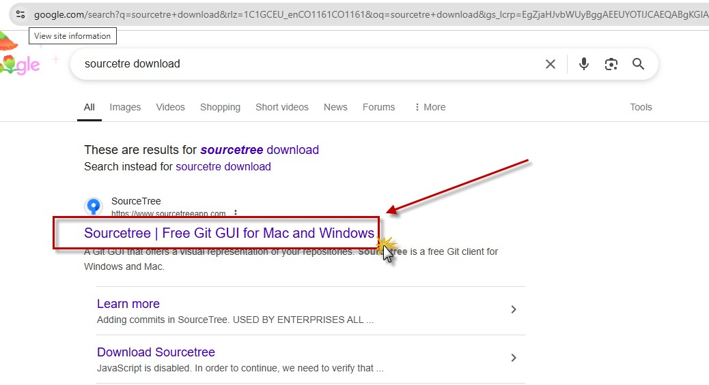
Step 43 — The official SourceTree result; confirm the domain before clicking through.
The official landing page loads in one screen — no account needed to download. Everything relevant is in the top band: a Download free button in the header, and the hero section with the platform-specific button this step clicks.
- Confirm the address bar shows sourcetreeapp.com over HTTPS — the same domain verified in the previous step.
- The dark blue Download free button at the top right of the header is the global shortcut; it leads to the same installer as the hero button below.
- Read the headline — “Simplicity and power in a beautiful Git GUI” — then click the big blue Download for Windows button (outlined in red with the arrow annotation). This downloads the Windows installer; nothing is installed yet.
- On a Mac the same page detects the platform and offers the macOS build instead; the Also available for Mac OS X link underneath the button is the manual way to reach it.
- Latest release notes: Mac OS X & Windows opens the changelog for both platforms — useful to check which version the installer will be before running it.
- The screenshot on the right is a preview of the window you will work in shortly: the toolbar (Commit, Pull, Push, Branch, Merge, Stash, Terminal, Settings), the sidebar (Workspace, Branches, Bookmarks, Tags, Remotes, Shelved, Subrepositories), and the log columns Graph, Commit, Author, Description, Date.
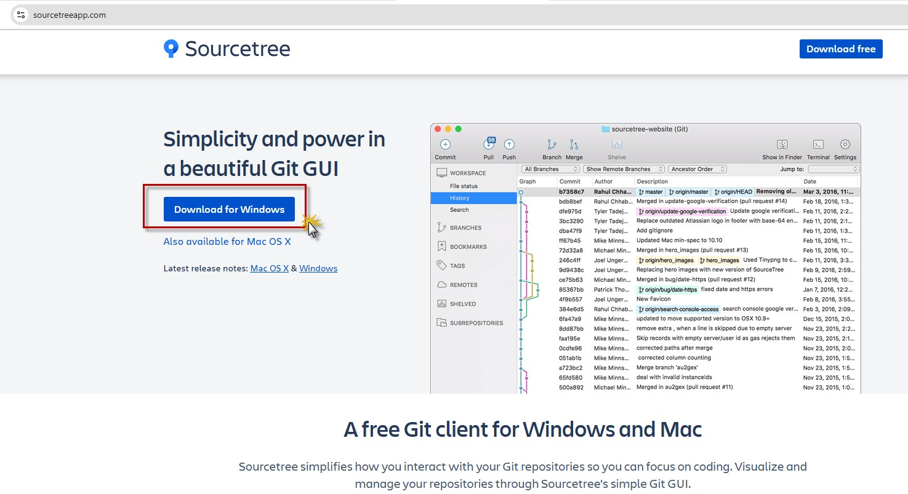
Step 44 — Download the Windows installer from the official SourceTree page.
SourceTree's download button does not start a transfer directly — it opens a short legal gate first. An Important information dialog appears over the dimmed page, and the installer is only released once the agreement is ticked.
- Read the body of the dialog: “To continue downloading this product you must read and agree to the Atlassian Software License Agreement and Privacy Policy.” Both names are links to the full documents.
- Tick the checkbox “I agree to the Atlassian Software License Agreement and Privacy Policy.” — it is the only checkbox in the dialog, and the download does not proceed while it stays unticked.
- Click Download (outlined in red with the arrow annotation) to release the installer. The file then downloads through the browser like any other.
- To back out, use Cancel next to it or the × in the top right corner — both close the dialog without downloading anything, and the page underneath is unchanged.
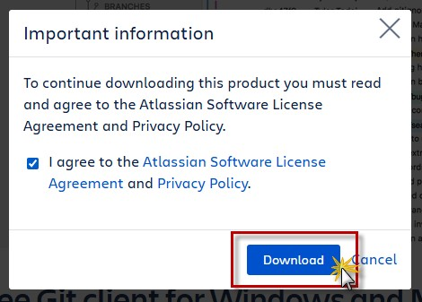
Step 45 — Agree to the Atlassian terms, then click Download.
Once the license gate is accepted, the browser drops the installer into the default Downloads folder. Before running anything, it is worth confirming the file is complete — a truncated download is the usual reason an installer refuses to start.
- Open File Explorer (or press Win + E) and go to Downloads in the left pane. The address bar confirms the location: This PC › Local Disk (C:) › Users › ACGR_GIT › Downloads.
- Find the freshly downloaded file: SourceTreeSetup-3.4.23.exe (outlined in red with the arrow annotation), sorted into the Today (1) group so it sits at the top.
- Sanity-check the columns before double-clicking — Type reads Application, Size is 25,054 KB (roughly 24.5 MB), and Date modified matches the moment of the download.
- The name also tells you the version being installed: 3.4.23. Worth noting, in case a later step or a support thread refers to a specific build.
- With the file selected, double-click it (or press Enter) to launch the installer — that is the next step.
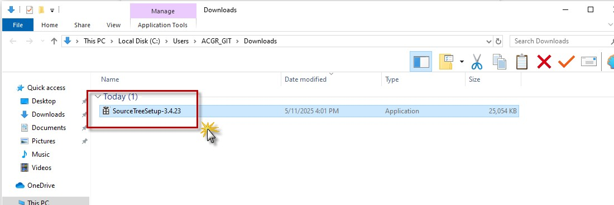
Step 46 — The downloaded installer, verified by type, size and date.
The installer launches into a four-stage wizard, and the second stage asks for an Atlassian account. That requirement is about Bitbucket, not about Git — so against an Azure DevOps repository it can be skipped without losing any functionality used in this guide.
- Follow the progress rail on the left: Install is already ticked, Registration is the current stage, and Install tools and Preferences come after it.
- Read what the panel actually asks: “Sourcetree is a free product that requires a one-time registration using your Atlassian Bitbucket account. You can connect additional accounts such as Github, Gitlab, Visual Studio Team Services, etc. once logged in.”
- Note the two provider buttons — Bitbucket Server (self-hosted) and Bitbucket (Cloud). Neither matches this project, whose remote lives in Azure DevOps.
- Click Skip (outlined in red with the arrow annotation). SourceTree is a Git client for any remote; the Atlassian login only unlocks the Bitbucket integrations, and the Azure DevOps remote will be authenticated with the credentials generated in step 42.
- Optional: “Don't have a Bitbucket Cloud account? Create one for free” opens the sign-up page in the browser — not needed here, and it can be done later from Tools → Options → Authentication if Bitbucket ever enters the picture.
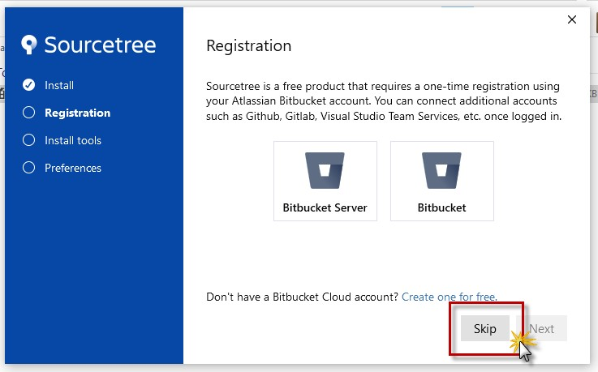
Step 47 — Skip the Bitbucket registration; the Azure DevOps remote does not need it.
Third wizard stage. SourceTree is only a GUI shell — it needs an actual Git engine underneath, and Pick tools to download and install is where that engine is chosen.
- The rail now shows Install and Registration ticked, with Install tools active and only Preferences left after it.
- Git is already checked and reports 56.19 MB (outlined in red with the arrow annotation). Leave it checked: this is the Git for Windows download that the client will drive for every clone, commit, and push.
- Mercurial is unchecked at 7.42 MB. It is a different version-control system — the Azure DevOps project created in step 38 is Git, so there is nothing to check here.
- Advanced Options (the collapsed chevron) expands extra settings for the tools being installed — worth opening only if this machine must reuse an already-installed Git rather than the bundled one.
- Click Next in the bottom right corner to start the download and installation of the selected tools.
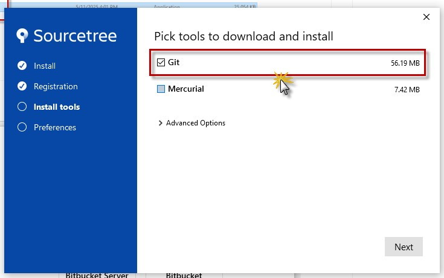
Step 48 — Ship the bundled Git with SourceTree; Mercurial stays unchecked.
As soon as Next is clicked, the tool selection is replaced by a single progress panel. This is the ~56 MB Git bundle being fetched and unpacked, and there is nothing to choose on this screen.
- The heading switches to “Downloading version control systems…” and a blue progress bar fills from the left (outlined in red).
- Read the status line under the bar: it currently says “Extracting 'Git'” — so the transfer for Git has finished and the installer is unpacking it. Expect a download phase, then an extraction phase, then the actual installation.
- Next stays grayed out for the whole duration — the wizard is locked until the extraction completes, so there is no way to skip ahead.
- Wait. On a normal connection this takes a couple of minutes; the rail still shows Install tools as the active stage until it finishes.
- When the bar completes, the panel moves on to the Preferences stage automatically — no extra click is required here.
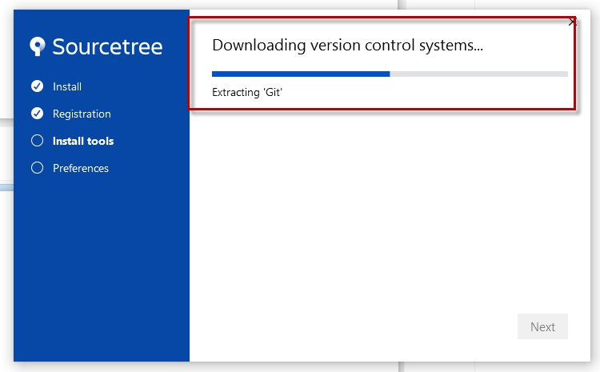
Step 49 — Git is downloaded and extracted; Next stays disabled until it ends.
The download and extraction finished cleanly. This screen is pure confirmation — a green check and a single line of text — so there is nothing to configure before moving on.
- The heading reads “Tool installation completed.” above a large green circle with a white checkmark: the Git bundle is now on disk.
- The rail confirms the same story — Install and Registration ticked, Install tools on its way out, and Preferences as the last remaining stage.
- Click Next (outlined in red with the arrow annotation) to move to the Preferences stage, where the wizard asks how SourceTree should present itself.
- Nothing is validated or entered here, so if the wizard was closed by accident at this point, simply launching SourceTree again is equivalent to having pressed Next.
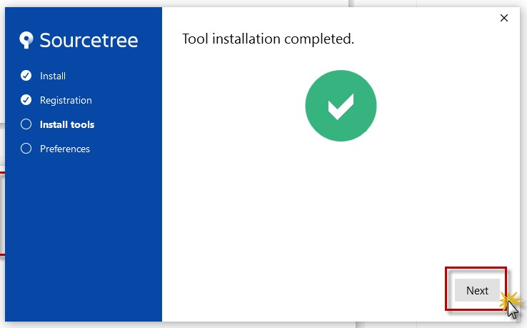
Step 50 — Tools installed; click Next to reach the Preferences stage.
The last wizard stage, Preferences, asks for the two values Git stamps onto every commit. They are not cosmetic: they are the identity Azure DevOps reads when it attributes a push to a user.
- The rail is now fully ticked — Install, Registration, Install tools — with Preferences as the active stage.
- Fill the first field with the full name to appear as commit author. In this example: Veeduria Ciudadana IBG.
- Fill the second field with the email address — here veeduriaibg@gmail.com, the address highlighted with the blue focus outline because it is the field being edited.
- Make the email match the account you use in Azure DevOps. That is what lets the Pushes and Commits views show your name instead of an unlinked email address.
- Click Next (outlined in red with the arrow annotation) to close the wizard and start SourceTree for the first time.
Step 51 — Name and email become the author of every commit you make.
The wizard's counterpart on the first real launch of SourceTree. It offers to wire up an SSH key pair immediately — relevant only if the repositories will be reached over SSH instead of HTTPS.
- The dialog Load SSH Key? opens with a key icon in the title bar and an information glyph next to the text.
- Read the offer: “Do you have an SSH key that you'd like to load now? If not you can click 'No' and create one later if you like.”
- Click No (outlined in red with the arrow annotation). The clone URL taken in step 41 is the HTTPS form, and its authentication comes from the generated username and password of step 42 — no key pair is involved.
- Yes is the default button and only makes sense if a private key already exists on the machine; it prompts for the key file so SourceTree can use it for ssh.dev.azure.com-style remotes.
- Declining is not final — keys and the SSH client can be attached later from Tools → Options → General, so nothing has to be decided now.
Step 52 — No SSH key needed: this repository authenticates over HTTPS.
Installation is done and the client opens on an empty Local repositories tab. The toolbar at the top is the whole starting point of the workflow: it holds the three ways to bring a repository in.
- A tab named New tab is open, with a dropdown and a + beside it for additional tabs — one tab per repository is the usual arrangement later on.
- The Local view is selected (Remote sits next to it). The list is empty and the hint reads “Add a new bookmark or drag & drop repository folders into this area to begin”, with a Search box for when it is not.
- Distinguish the three toolbar actions before clicking: Clone downloads a remote repository into a new local folder, Add bookmarks a folder that is already a working copy on disk, and Create initializes a brand-new local repository.
- Click Clone (outlined in red with the arrow annotation) — the Azure DevOps repository created in step 38 has to come down to this machine, so Clone is the right entry point.
- The same command lives in the menu bar under File, in case the toolbar is hidden or the window is too narrow to show it.
Step 53 — Empty Local view; use Clone to pull the Azure DevOps repo down.
The Clone dialog in SourceTree will ask for a source path, so the browser tab with the Azure DevOps repository comes back into play. This step is just retrieving the value that goes into that field.
- Switch to the browser tab holding the repository. The address bar shows the repo-scoped URL — dev.azure.com/veeduriaibg/_git/ProyectoVeeduriaBG001 — a shortcut to the same Repos → Files page used earlier.
- In the Clone to your computer panel, the HTTPS URL field is boxed in red and the arrow carries the annotation “Copiar este valor” — copy this value. It is the address SourceTree needs.
- Click the copy icon at the right edge of the field (second red box). Note that the field itself shows the URL cut off at the right — the copy button takes the complete string, so never retype what is visible on screen.
- Look at the credential pane underneath: Username veeduriaibg and a Password are still on display. If this is a fresh generation, copy the password now as well — the clone will prompt for both.
- The project name in the page heading appears selected (blue highlight) simply because it was clicked; it is not the value to copy — the URL is.
Step 54 — Copy the HTTPS clone URL for the SourceTree Clone dialog.
The moment the clone reaches for authentication, a small CredentialHelperSelector window appears — this dialog belongs to the Git for Windows that SourceTree installed, not to SourceTree itself. It decides whether the password gets cached on disk or asked for every time.
- Under Select a credential helper, four radio options are offered: <no helper>, wincred (listed twice) and manager.
- <no helper> is already selected (outlined in red). It means Git stores nothing and prompts for the username and password on each remote operation — the generated credentials from step 42 get re-entered when needed.
- The other choices persist credentials: wincred puts them in the Windows Credential Manager, and manager hands them to Git Credential Manager, which also handles multi-factor flows and token refresh.
- Leave the Always use checkbox ticked — the field beside it shows where the decision is written, a Git config file under C:\Users\ACGR_GIT\AppData\Local\Atlassian\SourceTree\…, so it applies to SourceTree's bundled Git rather than to a system-wide install.
- Click Select (outlined in red with the arrow annotation) to confirm. The clone then completes and the repository appears in the Local tab.
Step 55 — No helper: nothing is cached, the generated password is asked for on demand.
With <no helper> chosen in the previous step, the clone stops and asks for credentials. Both values come from this panel, and each has its own copy button — using them is what keeps the long password intact.
- Bring the browser forward: the Clone to your computer panel still shows Username veeduriaibg and the generated Password, both boxed together in the larger red outline.
- Click the copy icon beside Username (first small red box) and paste it into the Username field of the Git prompt.
- Click the copy icon beside Password (second small red box) and paste it into the Password field. The string is longer than the visible width of the box — copy it, do not type it, and do not trust what the field appears to show.
- Confirm the prompt. The clone then starts transferring; an empty repository finishes almost instantly and the local copy appears in SourceTree.
- Remember the warning strip under the fields: “Copy the password now. We don't store it and you won't be able to see it again.” If the panel has already been dismissed, regenerate the pair with Generate Git Credentials before trying again.
Step 56 — Copy both values with their own buttons; the password cannot be recovered.
This is where the two copied values land. The dialog identifies the host it is challenging, which is a quick way to confirm the remote URL was pasted correctly before credentials are even sent.
- The title is Authenticate, and the line underneath reads “Login required for: dev.azure.com” — the correct host for this repository. Any other host here means the clone URL is wrong; cancel and fix it instead of typing credentials into the wrong prompt.
- Username is filled with veeduriaibg, the value copied from the DevOps panel in the previous step.
- Password shows a row of dots matching the pasted generated password, with the field focused (blue outline) — the point at which any missing character would already be baked in.
- Remember password is ticked, so the client keeps this pair and stops asking on every pull or push. Unticking it restores the prompt each time, which is the behaviour <no helper> alone would give.
- Click Login (outlined in red with the arrow annotation). On success the clone completes; if the dialog simply comes back, the credentials were rejected — regenerate them rather than retyping the same string.
Step 57 — Confirm the host, paste username and password, tick Remember password, click Login.
The credential helper selector comes back once the login is attempted, and this time the whole window is visible — including the option that turns a one-off answer into a permanent setting. That checkbox is the actual subject of this step.
- The dialog is the same CredentialHelperSelector, opened over the SourceTree toolbar — the Clone, Add and Create buttons are still visible behind it, so the app is waiting on this answer.
- Confirm the radio list has not changed: <no helper> selected, then wincred twice, then manager.
- Read the checkbox label now that it is not cut off: “Always use this from now on”, ticked. Ticked, the choice is written to the Git config and this dialog never appears again for this installation.
- Unticked, the helper applies to the current operation only — acceptable when you want to test manager before committing to it, but it means the dialog returns at the next authentication.
- Click Select (outlined in red with the arrow annotation) to accept <no helper> permanently and return to the clone.
Step 58 — Ticking the checkbox makes the helper choice stick for every repo.
The Clone form takes over the tab — the toolbar entry stays underlined while it is open. Five fields decide what gets copied and where it lands; only two of them normally need any attention.
- Source Path receives the URL copied in step 54 — the field shows it truncated on the left, ending in …/veeduriaibg/ProyectoVeeduriaBG001/_git/ProyectoVeeduriaBG001. Browse next to it is for a local or network path, not for this case.
- Ignore the hint “Cloning is even easier if you set up a remote account”: it points at Bitbucket/GitHub account integration, and this remote authenticates with the DevOps credentials instead.
- Repository Type reads “This is a Git repository” with the red diamond icon. That line is a live validation — if the URL were malformed or pointed at a non-Git endpoint, it would say so instead.
- Destination Path holds K:\ProyectoVeeduriaBG001, the local folder the working copy is written to. This is the one field worth checking before continuing; Browse changes it.
- Name is filled automatically as ProyectoVeeduriaBG001 — that is the bookmark label listed in the Local tab afterwards.
- Local Folder stays on [Root], the top level of the sidebar tree. Advanced Options holds the rarely used settings (shallow or sparse checkouts) and can stay collapsed.
- Click Clone (outlined in red, annotated “Hacer click aqui para clonar el repositorio GIT”) to start the transfer.
Step 59 — URL, destination and name confirmed; click Clone.
No dialog this time: the clone runs in a thin strip docked at the top of the main window, over the Clone form left open underneath. It is the only feedback SourceTree gives while the transfer happens.
- The line on the left spells out the whole operation: “Cloning from https://veeduriaibg@dev.azure.com/veeduriaibg/ProyectoVeeduriaBG001/_git/ProyectoVeeduriaBG001 to K:\ProyectoVeeduriaBG001”. Reading it is the fastest way to catch a wrong URL or destination without waiting for the job to finish.
- The horizontal bar tracks progress left to right — the grey span is what remains, the blue span is what has been transferred (here it is already in its final third).
- The small spinner at the right end of the bar indicates the process is alive; it disappears when the clone ends.
- Show Full Output, unticked, expands a console pane with the raw Git output — tick it if the bar stalls, since the real error message appears there rather than in the strip.
- Cancel aborts the transfer. Once it completes, the strip disappears and SourceTree opens the cloned repository.
Step 60 — The clone in progress: source, destination and transfer bar.
Service connection from DevOps to Azure
Steps 61–74 · the Azure Resource Manager connection, the App Registration error, and the Entra role that resolves it.
The browser comes back into play: with the repository cloned locally, the remaining configuration lives on the project's administration pages. This step lands on the project home and walks to the gear that opens them.
- The address bar shows the project root — dev.azure.com/veeduriaibg/ProyectoVeeduriaBG001 — and the breadcrumb confirms veeduriaibg / ProyectoVeeduriaBG001 / Overview / Summary: the same Summary page seen at the end of provisioning in step 40.
- Do not be misled by the welcome panel — “Welcome to the project! What service would you like to start with?” — and its service buttons (Boards, Repos, Pipelines, Test Plans, Artifacts). None of them is needed yet.
- Check the left navigation is fully expanded: Overview (Summary, Dashboards, Wiki), Boards, Repos, Pipelines, Test Plans, Artifacts.
- At the very bottom left sits Project settings with a gear icon (outlined in red with the arrow annotation), next to the double-chevron that collapses the navigation.
- Click Project settings to open the project's own administration area — the place for repositories, policies, teams, and pipeline defaults.
Step 61 — Project Overview; Project settings sits at the bottom of the left rail.
Project settings opens as a two-pane hub: a flat tree of every administrative page on the left, the selected page on the right. The breadcrumb changes to Settings, and the URL gains the /_settings/adminservices segment.
- Learn the tree structure first — settings are grouped, not listed flat: General (Overview, Teams, Permissions, Notifications, Service hooks, Dashboards), Boards (Project configuration, Team configuration, GitHub connections), Pipelines (Agent pools, Parallel jobs, Settings), Test management, Repos (Repositories), Artifacts (Storage).
- The Pipelines group is outlined in red to place the target inside it: Service connections sits at the end of that group, after Agent pools, Parallel jobs and Settings, just above XAML build services.
- Click Service connections (second red outline, arrow pointing to it).
- The right pane is the empty state: “Create your first service connection”, with the explanation “Service connections help you manage, protect, and reuse authentications to external services.”
- Bookmark the blue Create service connection button — it is the entry point for the next step.
Step 62 — Service connections under Pipelines in Project Settings, currently empty.
Create service connection opens a type picker rather than a form. The choice made here decides which fields appear next, so it is worth understanding what each family of entries is for before clicking through.
- The dialog New service connection opens with the instruction “Choose a service or connection type” and a Search connection types box directly under it.
- The list is long and scrolls — Azure Repos/Team Foundation Server, Azure Service Bus, Bitbucket Cloud, Cargo, Chef, Docker Host, Docker Registry, Generic, GitHub, GitHub Enterprise Server, Incoming WebHook, Jenkins, Jira, Kubernetes and more below the fold. Typing in the search box beats scrolling.
- Select Azure Resource Manager (radio filled, outlined in red with the arrow annotation). This is the connection type that lets pipelines act on an Azure subscription — the one holding the Function App built earlier in this guide.
- Note the neighbouring options for contrast: Azure Repos/Team Foundation Server links another DevOps server to this organization, while Generic covers any endpoint that is not on the list (URL plus token).
- Click Next at the bottom right to move to the authentication form for the selected type. Learn more on the left opens the documentation for service connections.
Step 63 — Azure Resource Manager is the type used to deploy into the Azure subscription.
Next in the Azure Resource Manager flow hands authentication to Microsoft Entra ID: a separate browser window opens on login.microsoftonline.com with an OAuth authorization request. This is the account the connection will act as.
- Recognise the window — the title bar reads “Sign in to your account — Google Chrome”, so it is a popup, not a tab in the DevOps window. It must stay open until the flow ends.
- Read the address while it lasts: login.microsoftonline.com/…/oauth2/authorize?client_id=499b84ac-… — an OAuth authorization request where the client_id is the application asking for access, i.e. Azure DevOps.
- Type the account that owns the subscription into the field — here veeduriaibg@gmail.com (outlined in red), the same identity used from step 1 onward. The autocomplete list behind it is just saved-account suggestions.
- Click Next (second red outline) to move to the password and verification pages.
- Alternative routes are listed underneath and are not needed here: Sign in with GitHub, Sign-in options (passkey, security key, other methods), and Can’t access your account? for recovery.
Step 64 — The Microsoft Entra sign-in that grants the service connection its identity.
Entering the account is not enough for this flow. Because the request grants access to Azure resources, Microsoft inserts an identity check before the consent screen — a one-time code delivered by email.
- The popup switches to “Get a code to sign in”, with the Microsoft logo above and the account being verified in the small chip: veeduriaibg@gmail.com.
- Confirm the chip shows the right mailbox. The explanation below it reads “Because you're accessing sensitive info, we'll send a code to veeduriaibg@gmail.com to verify your identity.”
- Click Send code (outlined in red with the arrow annotation). That triggers an email carrying a single-use code.
- Switch to the inbox in another tab — this is the same pattern already used in steps 2–4 for the original Azure sign-in: the code arrives by mail, is copied, and is pasted back into this window.
- Return to the popup and paste the code to continue to the permission consent screen for the service connection.
Step 65 — Request the one-time code; it arrives by email.
The message lands in Gmail within seconds, and it is deliberately short — a greeting, one sentence of context, and the code. Nothing to click, nowhere to navigate.
- Check the sender before reading anything else: Microsoft account team <account-security-noreply@accountprotection.microsoft.com>. The accountprotection.microsoft.com domain is the legitimate sender for these codes.
- The greeting names the account that requested it — “Hi veeduriaibg@gmail.com” — followed by “We received your request for a single-use code to use with your Microsoft account.”
- The code sits on its own line: “Your single-use code is:” followed by six digits (highlighted with the red outline). Select exactly those characters.
- Return to the sign-in popup and paste it into the code field. This mirrors the retrieval flow from steps 3–4 at the very beginning of the guide.
- Leave the email open until the sign-in completes — if the flow times out, a new code is needed and the old one becomes invalid.
Step 66 — The six-digit code, sent from accountprotection.microsoft.com.
Once the Microsoft sign-in returns, the popup becomes a form titled New Azure service connection with Azure Resource Manager as its subtitle. Every field decides how much of the subscription the pipeline will be allowed to touch, so the order — identity, then scope, then target, then name — matters.
- Identity type: App registration (automatic), marked Recommended. DevOps creates the Entra ID app registration behind the scenes instead of asking for one you would have to prepare in the Azure portal. Need help choosing a connection type? opens the comparison doc.
- Credential: Workload identity federation, also Recommended. It uses federated trust instead of a secret, so there is no client secret to store, rotate, or leak.
- Scope level: Subscription is selected, which is the usual choice; Management Group widens the reach to everything under a management group, and Machine Learning Workspace is a narrow special case.
- Subscription: pick Azure subscription 1 — the ID beginning 0e9f2fce-… shown after the name. This is the subscription that holds the Function App. If it is missing from the list, the note below the field points at the manual fallback.
- Resource group: AzureResourceGroup1. Choosing a group here scopes the connection down to that group only — deployments to any other group will be rejected even though the subscription matches.
- Service Connection Name: ServiceConnectionName1. This is the identifier pipelines reference, so keep it short and rename-proof.
- Service Management Reference and Description are optional; the first only matters when the organization requires a reference on Entra app registrations.
- Security: Grant access permission to all pipelines is ticked. Leave it that way unless you intend to authorize each pipeline by hand.
- Click Save (outlined in red with the arrow annotation) — Back returns to the type picker, and Learn more opens the docs.
Step 67 — Identity, scope, subscription, resource group, name, then Save.
Saving does not always succeed. With the automatic identity type, DevOps has to create an application registration in Microsoft Entra ID on your behalf — and that is a directory permission, unrelated to anything granted on the Azure subscription.
- After Save, a warning banner with a triangle icon replaces nothing on the form but blocks the creation. It closes with the × on its right.
- Read the full text: “App Registration failed: Failed to create an app in Microsoft Entra. Error: Insufficient privileges to complete the operation in Microsoft Graph. Ensure that the user has permissions to create a Microsoft Entra Application.”
- Diagnose the cause: creating an app registration requires a directory role in Entra ID (typically Application Administrator, Cloud Application Administrator or Application Developer) or the tenant setting that lets users register applications. An account that only holds Contributor on the subscription — as added in step 25 — has none of that.
- The banner suggests its own workaround: “Please create a service connection using managed identity for federation” — relevant when the pipeline runs on a self-hosted agent that can carry a managed identity.
- The practical alternatives are to have a tenant administrator create the app registration for you and then switch Identity type to the manual option, or to have your account granted the directory rights and retry the same form.
Step 68 — The automatic app registration is refused: a directory-level permission is missing.
The fix for the previous step lives in a different portal. entra.microsoft.com is where directory roles and app registrations are managed — not the Azure portal and not Azure DevOps. Before changing anything, verify which directory and which administrator you are working as.
- Open entra.microsoft.com/#home (outlined in red top-left) — the Microsoft Entra admin center. The left rail confirms the product: Home, What's new, Diagnose & solve problems, Identity, Protection, Identity Governance, Learn & support.
- Look at the account chip in the top right (second red outline). It shows manuelacortesgranados… and DIRECTORIO PREDETERMINADO — a different identity from the one that hit the error, deliberately: this is the tenant administrator.
- Cross-check the Directorio predeterminado card in the centre: Tenant ID beginning 616e0d5a-…, the primary domain, and the object counts (3 users, 1 group, 0 devices, 3 apps).
- The same card lists the signed-in administrator — Manuela Cortés Granados with a Global Administrator badge — and My role assignments counting 1 high-privileged role. That badge is exactly the directory authority the DevOps user lacked.
- Then open Identity → Users → All users in the left navigation (third red outline) — the entry point for granting the missing permission to the DevOps account.
Step 69 — Right directory, right administrator; now go to Identity → Users → All users.
The user list is the directory's roster, and its columns answer the question from the error screen: what kind of account is being denied the right to create an app registration.
- Users opens on All users with the subtitle Directorio predeterminado. The banner underneath notes the rename: “Azure Active Directory is now Microsoft Entra ID” — same service, new name.
- Read the toolbar before touching a row: New user, Edit (Preview), Delete, Download users, Bulk operations, Refresh, Manage view, Per-user MFA, Got feedback?
- A search box and Add filter sit above the list; 3 users found confirms the directory is small enough to read in one glance.
- Compare the three rows in the User type column: Ana Cristina Garzón Rodríguez and veeduriaibg@gmail.com are Guest; Manuela Cortés Granados is Member. Creation type shows Invitation for the two guests — they arrived through the invite flow used earlier in this guide.
- Click the row veeduriaibg@gmail.com (outlined in red) to open that account's profile — the place where the missing directory role gets assigned.
Step 70 — The DevOps account is a Guest created by invitation; open it to assign a role.
The user profile is a small application of its own, with a blade per concern. The one that matters is Assigned roles: the directory roles granted to this specific account, as opposed to the Azure RBAC roles granted on a subscription.
- The breadcrumb shows Home > Users > veeduriaibg@gmail.com, and the header reads “veeduriaibg@gmail.com | Assigned roles” with the subtitle User (outlined in red at the top).
- Before adding anything, note the two sibling blades in the left navigation: Assigned roles (what is being edited here — Entra directory roles) and Azure role assignments further down (subscription-level RBAC, the kind granted in step 25). They are different systems and are not interchangeable.
- Assigned roles is already selected (second red outline). The table below starts empty, which is why the app registration failed: no directory role, no directory write access.
- Click Add assignments in the toolbar (third red outline, with the long arrow) to open the role picker.
- Under Administrative roles — described as “Administrative roles can be used to grant access to Microsoft Entra ID and other Microsoft services” — select Application Administrator (fourth red outline). Its description is the requirement from step 68 verbatim: “Can create and manage all aspects of app registrations and enterprise apps.” Resource type is Organization, Assignment path Direct, Type Built-in.
- Confirm the assignment in the flyout's footer (the next step) — after which Azure DevOps can create the app registration on the guest's behalf.
Step 71 — Application Administrator is the least-privileged role that unblocks app registrations.
Add assignments opens a full-height flyout listing every built-in directory role with its description. It is long and alphabetical, which is why the search box at the top is the practical way to use it.
- The flyout is titled Directory roles and carries a licensing note worth reading: “To assign custom roles to a user, your organization needs Microsoft Entra ID Premium P1 or P2.” Built-in roles such as the one needed here do not require that.
- The instruction line confirms the intent: “Choose admin roles that you want to assign to this user. Learn more”.
- Use Search by name or description rather than scrolling. Typing application narrows the list to the handful of relevant entries.
- Watch for near-misses in the visible rows: Application Developer — “Can create application registrations independent of the 'Users can register applications' setting” — also touches app registrations, and Azure DevOps Administrator manages DevOps organization policy. Neither is the role chosen in the previous step.
- Tick Application Administrator — the entry whose description reads “Can create and manage all aspects of app registrations and enterprise apps” — then confirm the selection in the flyout's footer.
- Some rows carry a small tag marker (for instance the Attribute … roles). Those belong to custom security attributes and depend on the licensing mentioned in the banner — ignore them for this task.
Step 72 — Search the role by name; the checkbox is what assigns it.
Back in Azure DevOps after granting the directory role. The page that was empty in step 62 now holds one row — the concrete proof that the app registration was created and the connection exists.
- The breadcrumb still reads veeduriaibg / ProyectoVeeduriaBG001 / Settings / Service connections, and the heading is Service connections.
- The list contains a single entry, ServiceConnectionName1 (outlined in red), with the Azure cloud icon marking it as an Azure Resource Manager connection. The “Create your first service connection” empty state is gone.
- Read the toolbar before clicking the row: Security sets who may view, use or administer service connections across the project, the filter icon toggles column filters, and New service connection starts another one.
- The secondary row offers Filter by keywords and a Created by selector — useful once a project accumulates several connections and you need only the ones you own.
- Click ServiceConnectionName1 to open its details: subscription, resource group, scope, and the pipelines authorized to use it.
Step 73 — The connection exists; open it to review scope and pipeline authorization.
Opening the row gives the connection's own page. It is small, but every line on it answers a question that comes up later — how it authenticates, where it lives, and who owns it.
- The header repeats the name, ServiceConnectionName1, with a back arrow to the list and its identifier underneath: ID: e17168ff-cd76-4a56-9c97-5e18088c8e61. That GUID is what API calls and support threads refer to.
- Three tabs split the page: Overview (selected), Usage history — which pipelines used the connection and when — and Approvals and checks, where deployments can be gated behind an approval or a branch check.
- In Details, the type is Azure Resource Manager with the subtitle “using workload identity federation with openid connect”. No client secret is stored on either side; the pipeline exchanges a signed token for an Azure token at run time.
- Two operational links sit under the type: Manage service connection roles controls who may use or administer the connection, and Manage App registration jumps straight to the Entra application that was created automatically in step 67.
- On the right, Creator shows Veeduria Ciudadana Informatica y Buen Gobierno / veeduriaibg@gmail.com — the account that just received Application Administrator, which is why the creation succeeded this time.
- Edit reopens the form for name and description; the identity and scope choices are not re-designable after creation.
Step 74 — The connection authenticates via OIDC federation, created by the DevOps guest account.
Self-hosted agent: pool, token, registration
Steps 75–92 · the agent pool, the personal access token, config.cmd, run.cmd and the Online status in the pool.
The service connection answers where deployments go; agent pools answer where the jobs run. Both live under Project Settings, one group apart.
- In the left tree, Pipelines (outlined in red) holds the compute-side settings. Open Agent pools directly beneath it (second red outline).
- The URL keeps the older naming — /_settings/agentqueues — even though the page is titled Agent pools; the two terms survive side by side in Azure DevOps.
- Two pools are already available to the project: Azure Pipelines (cloud icon) — Microsoft's hosted agents, the ones you get for free with an organization — and Default, the pool where self-hosted agents register when installed on your own machines.
- The table reports Queued jobs and Running jobs per pool, which is the quickest way to see whether a build is waiting or executing.
- The toolbar offers a filter icon, Security (who may administer pools in this project) and Add pool (outlined in red) — at project scope this exposes an existing organization-level pool to this project rather than creating new hardware.
Step 75 — Azure Pipelines (hosted) and Default (self-hosted) are the two pools available.
Add pool opens a side panel that starts with a choice of pool type, because the three options differ radically in who owns the machine and who pays for it.
- The panel is titled Add agent pool and its subtitle sets the scope: “Agent pools are shared across an organization.” — a pool created here is visible beyond this project.
- Pool to link: New is selected, meaning a pool is being created rather than attached. Existing would link a pool that already exists in the organization.
- Pool type offers three paths: Managed DevOps Pool (Microsoft maintains the agents), Self-hosted (custom agents on infrastructure you control) and Azure virtual machine scale set (agents on a VMSS in your own subscription, with a separate configuration guide).
- Keep Self-hosted selected (outlined in red) — its description reads “Create a pool of custom agents hosted on your own infrastructure for maximum control and flexibility.”
- Name: VeeduriaAgentPool1 (second red outline). The name is what the pipeline references as pool: name, so treat it as an identifier, not a label.
- Description is optional and accepts Markdown — useful for noting which machine or team the pool belongs to.
- Pipeline permissions: leave Grant access permission to all pipelines ticked (third red outline) so pipelines can target the pool without a per-pipeline authorization round.
- Click Create (bottom right, fourth red outline).
Step 76 — A self-hosted pool named VeeduriaAgentPool1, open to all pipelines.
Create returns to the same Agent pools page, now with three rows instead of two. The new entry is easy to tell apart from the built-in ones at a glance.
- Azure Pipelines and Default keep their subtitle Azure Pipelines — that is the Microsoft-hosted origin.
- VeeduriaAgentPool1 (outlined in red) carries the organization's name underneath, Veeduria Ciudadana Informatica y Buen Gobierno. That subtitle is the signal that the pool belongs to your organization rather than to Microsoft's hosted fleet.
- Both Queued jobs and Running jobs are empty for the new pool. Expected at this point: nothing has been registered to run on it yet.
- Because pools are organization-wide, this one is available to every project in veeduriaibg that grants access to it — not only to ProyectoVeeduriaBG001.
- Click VeeduriaAgentPool1 to open the pool's own page, where the Agents tab lists registered machines and offers the agent download and registration instructions.
Step 77 — The pool exists and is empty; open it to register an agent.
The pool has its own workspace now. Six tabs cover it, but only one of them answers the question of this section: how does a machine start running jobs for this pool?
- The breadcrumb ends in Settings › Agent pools › VeeduriaAgentPool1, and the URL carries ?queueId=10 — the pool's numeric id inside this organization, the same value REST calls and some YAML references use.
- The header card (first red outline) holds the name and the tabs: Jobs (selected) — runs that targeted this pool; Agents — the registered machines and their online state; Details — whether the pool is organization- or project-scoped; Security — who may use or administer it; Approvals and checks — gates before a job starts; Analytics — pipeline trends over time.
- The body shows the empty state “No jobs have run on this agent pool” with the hint “Run a pipeline on this agent pool to see more details.” Nothing is wrong — no pipeline has targeted it yet.
- Update all agents pushes the newest agent software to every machine registered in the pool; it only becomes useful once agents exist.
- Click New agent (second red outline) to open the download-and-configure instructions — the agent package for your platform plus the config command that registers it against this pool.
Step 78 — Pool workspace: Jobs is empty, and New agent starts the registration flow.
New agent opens the registration instructions, and they are written for copy-paste rather than for reading. Four blocks: download, unpack, configure, run.
- Pick the platform across the top — Windows is selected (outlined in red), macOS and Linux beside it — then the architecture on the left: x64 is active, x86 below it for 32-bit installs.
- Configure your account links to the prerequisites: the machine needs the agent prerequisites, and registration itself will ask for a Personal Access Token, so have one ready before running the configure command.
- Download the agent: click Download (second red outline) or use the copy icon to grab the URL. The file it delivers is vsts-agent-win-x64-4.255.0.zip — that version number matters in the next block.
- Create the agent — the first code block makes the folder and unpacks the archive there: mkdir agent ; cd agent followed by [System.IO.Compression.ZipFile]::ExtractToDirectory("$HOME\Downloads\vsts-agent-win-x64-4.255.0.zip", "$PWD"). Run it in PowerShell, not in Command Prompt.
- Configure the agent — .\config.cmd inside C:\agent runs the interactive setup: server URL, authentication token, pool name, agent name. This is where the pool created in step 76 gets targeted. Detailed instructions documents every prompt.
- Optionally run the agent interactively — .\run.cmd for a foreground session. If the agent was registered as a Windows service instead, skip this block; the service starts it automatically.
- The final “That’s it!” line closes the instructions; the panel can be dismissed once the commands are copied.
Step 79 — Windows x64 agent: download, extract to C:\agent, configure, run.
Unlike the installer earlier, this file is big. The browser reports it in its downloads flyout, and the only action required here is patience — the next command assumes a complete archive in the Downloads folder.
- Clicking Download opens the browser's Recent download history panel with one entry.
- The row names the archive, vsts-agent-win-x64-4.255.0.zip (with the zip icon), and reports live progress: 36.4 / 219 MB with an estimate such as 52 seconds left.
- The thin bar underneath is the transfer itself — it fills left to right as the file arrives.
- The × at the top right dismisses the panel only; the download keeps running and stays reachable from the browser's download icon.
- Wait for it to finish before running the extraction command from step 79: the archive has to be complete, and it lands by default in $HOME\Downloads — exactly the path that command expects.
Step 80 — A 219 MB download; let it complete before extracting.
The same flyout a minute later. The transfer is over, and one small button takes you to the file with its real location in view — which is what the extraction command depends on.
- The status line under the filename has changed from a live counter to “219 MB • Done”, the full size matching the estimate from the previous step.
- Hover the folder icon next to the entry (outlined in red) — the tooltip reads Show in folder.
- Click it to open File Explorer with that zip already selected, confirming both the file and its directory.
- The neighbouring ↗ icon opens the file itself rather than its location; useful only if you want to inspect the archive contents.
- The entry below, SourceTreeSetup-3.4.23.exe, is the earlier download still sitting in the same history — a reminder that both files land in the same folder by default.
Step 81 — Complete at 219 MB; Show in folder opens the file's directory.
The zip can be unpacked with the PowerShell line from step 79 or from Explorer's context menu — the second route is what this screenshot takes, since WinRAR is installed and owns the .zip association on this machine.
- Explorer is at This PC › Local Disk (C:) › Users › ACGR_GIT › Downloads, and the Today (2) group holds both downloads: the agent zip and the SourceTree installer.
- The zip vsts-agent-win-x64-4.255.0 is selected; the status bar confirms 1 item selected at 218 MB, and the tooltip spells out the details — Type: WinRAR ZIP archive. Consistent with the 219 MB reported by the browser (the two count in different units).
- Right-click the archive. Because WinRAR is registered, the top of the menu is WinRAR's own: Open, the editor shortcuts, Open with WinRAR, Extract files….
- Two extraction entries are outlined in red: Extract Here unpacks into the current folder, and Extract to “vsts-agent-win-x64-4.255.0\” creates a subfolder of that name and unpacks inside it — the tidier option of the two.
- This guide needs the files in C:\agent (the path used by the .\config.cmd command). Either extract into the subfolder here and move it to C:\agent, or use Extract files… and type C:\agent as the destination directly.
Step 82 — Extract to a named subfolder rather than into Downloads itself.
WinRAR reports the unpacking in a small dialog that shows two different progress numbers at once, which is the only confusing part of this step. Everything else is waiting.
- The title bar reads Extracting from vsts-ag… — truncated, but it is the agent archive being unpacked.
- The first block names the archive and the file currently being written: vsts-agent-win-x64-4.255.0.zip, extracting, node.exe, with a small percentage (6% here) and its own green bar.
- That first percentage is per file. node.exe is the agent's Node.js runtime — by far the largest item in the bundle, so this block sits on it for most of the run.
- The third block, Processed 66%, is the archive-wide figure. This is the one to follow: the extraction is really 66% done even though the current file reads 6%.
- Elapsed time and Time left tick along in the middle block — seconds, not minutes, for a 219 MB archive on local disk.
- The buttons need no input: Background hides the dialog and keeps extracting, Pause suspends it, Cancel aborts, Mode… changes the dialog's verbosity, Help opens WinRAR's documentation. Letting the dialog close by itself is the expected path.
Step 83 — Per-file 6%, archive-wide 66%: watch the Processed line.
The agent is configured by a script, and that script needs to write into C:\agent and, typically, install a Windows service. Start elevated once and the rest of the flow stays smooth.
- Open Start and type powershell. Under Programs (9) the entry powershell appears (outlined in red at the bottom left), alongside look-alikes: Developer PowerShell for VS, powershell_ise and Windows PowerShell.
- Right-click the plain powershell result to get the context menu shown here — Open, Run as administrator, editor shortcuts, archive entries, and the usual file operations.
- Choose Run as administrator (outlined in red with the arrow). Accept the UAC prompt if it appears; the window title afterwards starts with Administrator:.
- The annotation spells out why: “Ejecutar powershell para posteriormente ejecutar config.cmd” — run PowerShell now, so that config.cmd can be run from it next.
- Before running anything, move to the folder that holds the extracted agent and confirm with dir that config.cmd is present. Depending on the route taken in step 82 that is either cd C:\agent (the path the step 79 script writes to) or the named subfolder inside Downloads — cd "$env:USERPROFILE\Downloads\vsts-agent-win-x64-4.255.0". The next step runs the script from whichever directory actually contains it.
Step 84 — Right-click the powershell result and pick Run as administrator.
The configuration script is interactive, one question at a time. The banner tells you which agent build is being registered, and the first three answers establish where it connects and who it authenticates as.
- The window title confirms elevation — Administrator: Windows PowerShell — and the prompt shows the working directory the script runs from: C:\Users\ACGR_GIT\Downloads\vsts-agent-win-x64-4.255.0. Any folder that contains the agent files works; only the presence of config.cmd matters.
- The command is ./config.cmd. It prints the Azure Pipelines banner with its build: agent v4.255.0, (commit 470b366) — the same version as the zip.
- Enter server URL > https://dev.azure.com/veeduriaibg/ — the organization root, ending in a slash. Pasting a repository URL here is the classic mistake; the agent needs the organization.
- Enter authentication type (press enter for PAT) > PAT. Pressing Enter accepts the default, which is also PAT.
- Enter personal access token > — paste the token and press Enter. The token must carry the Agent Pools (Read & manage) scope, otherwise registration is refused a few prompts later.
Step 85 — Organization URL, PAT as the auth type, then the token itself.
Step 85 already asked for a token, so this is the detour that produces it. It does not start from the agent pool: the pool page is a dead end for credentials, and the token lives behind the account menu in the top-right corner.
- The starting point is Project Settings › Agent pools › VeeduriaAgentPool1, on the Jobs tab. The tab strip reads Jobs · Agents · Details · Security · Approvals and checks · Analytics (outlined in red at the top), and it is all pool administration — no token anywhere in it.
- The empty state explains itself: “No jobs have run on this agent pool”, Run a pipeline on this agent pool to see more details. Nothing can run until an agent is registered, and registering that agent is what the next steps are for.
- Your account is the VG avatar at the far right of the top bar — the second red box in the screenshot. Click it.
- The dropdown that opens is the user menu: Preview features, Profile, Time and Locale, Permissions, Notifications, Theme, Usage, then Personal access tokens, then SSH public keys.
- Choose Personal access tokens (outlined in red, with the pointer on it).
- This entry is account-wide, not project-scoped: the same menu item opens the same list no matter which project or page you are on, so the pool you were looking at a moment ago is irrelevant to where the token comes from.
Step 86 — Agent pool page, then avatar → Personal access tokens.
One click later you are in User settings, and the first thing the page does is show you tokens you must not touch. Both red annotations here are about that distinction: one says create, the other says leave alone.
- The URL confirms the scope switch: dev.azure.com/veeduriaibg/_usersSettings/tokens, under User settings › Veeduria Ciudadana Informatica y… in the left rail.
- The left rail groups the settings: Account (Profile, Time and Locale, Permissions), Preferences (Notifications, Theme, Usage) and Security — where Personal access tokens is highlighted, followed by SSH public keys and Authorizations.
- The heading is Personal Access Tokens, with the subtitle These can be used instead of a password for applications like Git or can be passed in the authorization header to access REST APIs — which is precisely how config.cmd will use it.
- Two filters sit above the table: Access scope: veeduriaibg and Status: Active. Leave both as they are; they simply restrict the grid to live tokens of this organization.
- The toolbar next to Manage tokens holds Revoke, Regenerate and Edit, all three greyed out. They act on a selected row, and nothing is ticked yet — they stay disabled until you check a box, which is also why the checkboxes in the two rows are empty here.
- The grid is sorted by Expires on descending (the arrow beside the column header), and its four columns are Token name, Organization, Status and Expires on.
- Under Manage tokens the grid already holds two rows, both named Git: https://dev.azure.com/veeduriaibg on the website., scope Code (Read & write), organization veeduriaibg, status Active, expiring 6/10/2025. Those were created for you by the Git credential prompt during the SourceTree clone in steps 55–58.
- The red arrow at the top right points at + New Token, annotated “Hacer click en este boton para agregar nuevo Token” — click this button to add a new token. That is the whole action required on this screen.
- The rows are boxed, with an arrow and the note “No borrar, sino tocaria reconfigurar GIT desde cero a nivel local” — do not delete these, or Git would have to be reconfigured from scratch locally. They are what keeps the existing clone and pushes working.
Step 87 — Create a new token; leave the two existing Git tokens alone.
+ New Token opens a single dialog with four inputs and a pair of radio buttons. Every value on it matters later, because a token that is scoped or timed wrongly fails at registration with a bare 401/403 rather than a helpful message.
- The dialog is titled Create a new personal access token, with an × at the top right that does exactly what Cancel does — closes it and creates nothing.
- Name — VeeduriaToken1 here (outlined in red). Any label works; a name that says what it is for, such as the agent pool it will register, saves guesswork in a few months when the list has grown.
- Organization — veeduriaibg, preselected. The token is bound to this organization only, which is why the same value had to go into the server URL prompt in step 85.
- Expiration (UTC) — the preset dropdown reads 30 days, and the read-only date field beside it (the one with the calendar icon) resolves that to 10/06/2025, one month out. The dropdown also offers 90 days and custom dates, and every value there is UTC, not local time.
- Scopes — the section is introduced by Authorize the scope of access associated with this token, then two radios. Full access is selected here (outlined in red); Custom defined is the alternative. Full access covers every scope, including the Agent Pools (Read & manage) permission that agent registration needs — which is why it works out of the box.
- If your organization forbids Full access, switch to Custom defined, open Show all scopes and tick Agent Pools → Read & manage only. Same result for config.cmd, far smaller blast radius.
- Click Create (bottom left, outlined in red) — it is live here precisely because the Name box is filled. The greyed Cancel beside it, and the × at the top right, both discard the dialog without creating anything.
Step 88 — Name it, keep the organization, 30 days, Full access (or Agent Pools only).
The token exists now, and this dialog is the only place it will ever be displayed. What you do in the next ten seconds decides whether step 85 can be completed or has to be redone from this screen.
- The dialog title is Success! with the line You have successfully added a new personal access token. Copy the token now!, followed by VeeduriaToken1 token — the name typed in step 88, so you can tell which one just came back.
- Below it sits the token itself in a read-only box — a long mixed-case string that the box width truncates. Beside the field is a copy icon (outlined in red, pointer on it).
- Click that icon. The value goes to the clipboard, and that is what gets pasted at the Enter personal access token > prompt from step 85.
- Read the warning panel below the field — pale amber, with a triangular ⚠ on the left: “Warning - Make sure you copy the above token now. We don't store it and you will not be able to see it again.” Azure DevOps keeps only a hash of the token — there is no screen, anywhere, that will show this value a second time.
- Paste it somewhere you control before clicking anything else: straight into the waiting config.cmd prompt, or a password manager. Not into a chat window, a ticket, or the repository.
- Close (bottom right, outlined in red) dismisses the dialog — and so does the × at the top right, which is easy to hit by reflex while the token is still uncopied. Closing is not what invalidates the token — losing the value is. The token stays active and usable regardless.
- If you did close it without copying, do not try to recover it: Regenerate on the list from step 87 issues a new value (and kills the old one), which is the same amount of work as creating a token again.
Step 89 — Copy the token now; the warning is literal, it is shown once.
The second half of config.cmd, immediately after the token. Six prompts, all of which can be answered with Enter on this run, and one line in the middle — Successfully added the agent — that is the only proof the registration actually worked.
- Reconfirm the context: an Administrator: Windows PowerShell window, the command ./config.cmd run from C:\Users\ACGR_GIT\Downloads\vsts-agent-win-x64-4.255.0, and the Azure Pipelines banner already printed (agent v4.255.0, commit 470b366).
- Under >> Connect: the three answers from step 85 are visible above this run's new prompts — the organization URL https://dev.azure.com/veeduriaibg/, the auth type PAT, and the token rendered as a long run of * characters. That masking is the paste landing correctly.
- Connecting to server ... follows. This is the point where a wrong token, a wrong organization or an expired PAT stops the script — the next banner never arrives.
- >> Register Agent: — Enter agent pool (press enter for default) > was answered with a bare Enter, which accepts the prompt's suggestion of the organization's default pool. The pool name typed here is the only thing that decides which pool the agent appears in — nothing about the URL or the project influences it — so a dedicated pool such as VeeduriaAgentPool1 has to be typed explicitly.
- Enter agent name (press enter for DESKTOP-MDE2U74) > — Enter again accepts the machine name as the agent name. Any name is legal; the machine name is what shows up in the pool's Agents tab.
- Scanning for tool capabilities. — the agent inspects the machine (Node, .NET, Git and similar) and reports what it finds to the server, so pipelines can be routed to agents that have the tools they need. A short pause here is normal.
- Connecting to the server. then Successfully added the agent — the registration is done at this line. Testing agent connection. follows immediately, and if the network path works you get no error and simply the next question.
- Enter work folder (press enter for _work) > — Enter accepts _work, a relative folder created inside the agent directory. That is where every pipeline checks out sources and writes build output, so it grows to several GB over time.
- 2025-05-12 04:17:10Z: Settings Saved. — config.cmd has written its configuration into the agent folder (the Z means UTC, and the timestamp is when this machine was configured).
- Enter run agent as service? (Y/N) (press enter for N) > — Enter accepts N, so no Windows service is installed. The agent will only be alive while run.cmd is left open in a console, and stops when the window closes or the machine reboots.
- Enter configure autologon and run agent on startup? (Y/N) (press enter for N) > — Enter again accepts N: no stored Windows logon and no startup entry. Choosing Y on either prompt is what makes an agent survive a reboot without anyone logging in, and it is worth revisiting once the manual run has been verified.
- Control returns to the prompt, PS C:\Users\ACGR_GIT\Downloads\vsts-agent-win-x64-4.255.0>. The agent is registered but not running: nothing is listening yet, so a pipeline queued now would wait indefinitely.
Step 90 — Pool, name, work folder, then N to both service prompts.
Configuration ends and execution begins: the last two prompts of config.cmd, then one command that keeps the window busy forever. Three areas are outlined in red — the two service prompts, the command itself, and the single line that proves the agent is live.
- The window repeats the whole sequence — banner, >> Connect:, >> Register Agent: — because config.cmd was run again on the same machine. The two timestamps say so on their own: Settings Saved at 04:17:10Z in step 90 and 04:17:58Z here, 48 seconds apart.
- The first red box covers the tail of the two persistence prompts — Enter run agent as service? (Y/N) (press enter for N) > and Enter configure autologon and run agent on startup? (Y/N) (press enter for N) >. No Y appears after either prompt, so both were accepted with Enter: this agent is still console-bound, with no service and no startup entry.
- Those two prompts are the ones to answer deliberately if you want the agent on after a reboot — Y to run agent as service installs it as a Windows service (this elevated window was opened in step 84 exactly so that it can), and Y to autologon stores the credentials needed to start it at boot.
- Control returns to the prompt, and the command typed there is ./run.cmd — the second red box. The ./ prefix is not decoration: PowerShell does not execute a program from the current directory unless it is named that way (or .\run.cmd), so a bare run.cmd can fail with a command-not-found error even though the file is right there.
- The agent starts and re-announces itself: Scanning for tool capabilities., then Connecting to the server. — the same two lines as during registration, this time establishing a live session instead of saving configuration.
- The third red box is the line that matters: 2025-05-12 04:17:58Z: Listening for Jobs. The agent is online and polling the queue; it will pick up the next pipeline job this pool is offered.
- No prompt comes back. The console is now occupied by the agent, and the only way to keep it there is to leave the window alone: closing it — or logging off, since no service was installed — takes the agent offline and leaves pipelines queued in Waiting for an agent.
- To stop it on purpose later, press Ctrl+C in this window rather than closing it. The agent then deregisters from the live session cleanly instead of timing out on the server side.
- Leave this window visible and check the browser: the pool's Agents tab should now list DESKTOP-MDE2U74 — the default name accepted in step 90 — as Online / Idle (step 92). If the pool you are looking at is still empty, the agent was registered into the default pool instead, which is what the pool prompt falls back to.
Step 91 — config.cmd ends on N/N, then ./run.cmd holds the window with Listening for Jobs.
The other half of the round trip: the console said Listening for Jobs, and the server now says the same thing from its side. This is the screen that confirms registration worked — a single row, and one word to look for.
- The breadcrumb path is the one from step 86, but on a different tab: Project Settings › Agent pools › VeeduriaAgentPool1, with Agents underlined and active — the second of the six tabs (Jobs · Agents · Details · Security · Approvals and checks · Analytics).
- Top right, two buttons: Update all agents and New agent (blue). The second one reopens the Get the agent panel from step 79 — the place to go when a second machine has to join the same pool.
- The grid has one row per registered agent, with five columns: Name, Last run, Current status, Agent version, Enabled.
- Name — DESKTOP-M…, clipped by the column width: this is DESKTOP-MDE2U74, the machine name that was accepted as the default agent name in step 90. Underneath it sits a green dot and the word Online, which is the only bit the red annotation cares about — “Al final debe mostrarse Online”, in the end it must show Online.
- Last run — empty. No pipeline has ever been dispatched to this agent, which is consistent with the empty Jobs tab in step 86; the field fills in after the first job, with a colour that reflects the result.
- Current status — Idle. Read it together with Online rather than instead of it: Online means the agent is connected and reachable, Idle means it is connected but holds no job right now. The pair Online + Idle is exactly the healthy state of a freshly configured agent.
- Agent version — 4.255.0, matching the zip downloaded in step 80 and the banner config.cmd printed. A version that drifts behind the server's is what Update all agents is for.
- Enabled — the toggle is On (blue). Switch it off and the agent stays registered and connected but is not offered work; that is the clean way to take one machine out of rotation for maintenance without deleting it.
- Clicking the agent's name opens its detail view — capabilities, the history of finished jobs and the diagnostics download — which is where to look if the status here ever reads Offline and the console window is still open.
Step 92 — Registered and connected: Online, Idle, version 4.255.0, Enabled.
Visual Studio and the Functions project
Steps 93–100 · the IDE, the Functions template, the project settings, and the local test in a browser.
A change of tool: the agent half of the setup is finished, and the work now moves into the IDE. This frame is only the first second of that — but it accidentally documents something worth noticing about the console behind it.
- What fills the screen is the Microsoft Visual Studio splash: a violet geometric backdrop, the four-square Microsoft logo, the product name, and 2022 in the bottom right corner.
- It is a splash, not a dialog — there is nothing to click, no Cancel, no progress figure. The IDE shows it while it loads its settings and extensions, then replaces it with the Start Window.
- 2022 is the product year, and nothing more: the splash carries no edition and no build number. Community, Professional and Enterprise all look identical here — the edition only shows up later, under Help › About Microsoft Visual Studio.
- Around the edges the previous window is still visible: a sliver of the PowerShell console along the top (the tail of the ASCII Pipelines banner) and a narrow strip down the left margin with the >> Register… lines from step 90. The agent console was never closed — it is simply behind the IDE now, still listening.
- The small red marks on that left margin are leftovers too: the rectangles drawn over the previous screenshot were made with an on-screen annotation tool, so they stayed on the desktop and float above whatever window comes next. They are not part of Visual Studio.
- Expect a first-run prompt before the IDE is usable — sign-in with the Microsoft account from step 1, a colour theme, and a development-settings preset. Answering them once is enough; they do not come back.
- The agent does not care about any of this. Opening the IDE does not stop it, and closing the IDE will not stop it either — only the run.cmd window does, which is why it is worth leaving that window unminimised where you can see it.
Step 93 — Visual Studio 2022 starting up, with the agent console still live behind it.
The splash gives way to the Start Window: a two-column page with nothing loaded yet. The left column is history, the right column is intent — and the red box picks out one tile plus a small link underneath it.
- The title bar still reads Visual Studio 2022 with only the minimise, maximise and close controls — no menu bar, no document tabs. That is the signature of the Start Window: the IDE shell is running, but no solution has been opened in it.
- Open recent on the left is empty, which is the expected state on a first launch. The two lines underneath explain what will eventually live there: As you use Visual Studio, any projects, folders, or files that you open will show up here for quick access and You can pin anything that you open frequently so that it's always at the top of the list.
- On a machine that is already in use this list is the fastest way back into a solution; here there is nothing to click. Its emptiness is also a useful check that the IDE really is starting clean, rather than having silently reopened something old.
- Get started on the right offers four tiles, each with an icon, a title and one line of explanation: Clone a repository — Get code from an online repository like GitHub or Azure DevOps; Open a project or solution — Open a local Visual Studio project or .sln file; Open a local folder — Navigate and edit code within any folder; and Create a new project — Choose a project template with code scaffolding to get started.
- Clone a repository is the one that speaks to this guide's organization: it asks for a URL, and the clone URL copied back in step 42 or 54 works there, with the token from step 89 standing in for a password.
- Open a project or solution is the shorter route once the code is already on disk — the SourceTree clone from step 60, for instance, where you point the dialog at the .sln file.
- The third tile, Open a local folder, is shaded lighter than the others because the pointer is resting on it. It skips projects entirely: the folder is treated as loose code, with no build system attached.
- The red box encloses two separate things. The tile itself, Create a new project, leads to the template picker — scaffolding a console app, a class library, an Azure Functions project, and so on. The link beneath it, Continue without code →, does the opposite: it opens the IDE with no solution at all, just the shell, ready for a file to be added by hand.
- Both entries leave this page in a state the rest of the guide can build on, which is why they are grouped: create when the code does not exist yet, continue without code when it will be brought in by other means and does not need a solution wrapper.
- Along the bottom edge a promotion strip is cut off by the window's height, and a scrollbar sits on the right. Neither needs attention — the four tiles above are the whole page.
Step 94 — Empty Open recent, four Get started tiles, and the red-boxed entry pair.
The template picker opens on the Installed set, which is long and alphabetical — far too long to scroll. The search box does the work instead, and the first row it returns is the one this walkthrough wants.
- The window is titled Create a new project, and the left column repeats the pattern from the Start Window: Recent project templates, empty, with A list of your recently accessed templates will be displayed here. On this machine no template has been used yet, so the list has nothing to remember.
- Top right is the search box, with Azure Functions typed into it. The × inside the box clears the text, and Clear all above the filters resets the search and every dropdown at once — the way back to the full list.
- The three dropdowns under it stay on their defaults — All languages, All platforms, All project types. Typing in the search box alone is enough to narrow the list to five rows; the filters are what you would use to cut it further, for example to C# only.
- The results update as you type, and the top row is already selected — that grey highlight is a selection, not a hover. The red box marks it: Azure Functions, described as A template to create an Azure Function project., tagged C#, Azure and Cloud.
- The amber word Azure inside the description is not a link: it is the search term being highlighted wherever it matches. Read the descriptions, not the highlights, when the list is long.
- The four rows below are the near misses, and they show why the search alone is not enough: Azure Resource Group (extended support) twice (an ARM/Bicep deployment project, whose own description recommends Bicep), and Azure WebJob (.NET Framework) twice — once for C#, once for Visual Basic. Same Azure tag, none of them a function app.
- If the selection is ever lost, click the row once to restore it — Next stays inactive until a template is chosen. Here it is enabled, and it is the third element outlined in red.
- Click Next to continue to the configuration page, where the project gets its name, location and solution.
Step 95 — Search “Azure Functions”, keep the first row, then Next.
Four inputs, a checkbox and a preview line. The preview is the part that matters: it is the only place Visual Studio tells you exactly which folder the code will end up in, and it looks wrong until you read why.
- The page is titled Configure your new project, and the strip under it repeats the choice from step 95 — Azure Functions with its C#, Azure and Cloud tags — so a wrong template is still catchable here rather than twenty minutes later.
- The first red box encloses the three fields that decide where the code lives: Project name, Location and Solution name.
- Project name — FunctionApp1ProyectoVeeduriaBG001, with the caret at the end of the text. This string becomes more than a label: it is the assembly name, the root namespace, the folder name and the default name of the function app in Azure.
- Location — K:\ProyectoVeeduriaBG001\. Note the drive letter: the project is deliberately not on C:, which already carries the OS, the IDE and the 219 MB agent from step 80. The … button browses for another folder, and the caret at the right of the field opens the list of recently used locations.
- Solution name — the same string, mirrored automatically from the project name as it is typed. It stops mirroring the moment you edit the field by hand. The ⓘ beside the label explains the distinction: a solution is a container that can hold several projects, so on a one-project solution the two names are normally identical.
- Place solution and project in the same directory is unticked. That single checkbox decides whether you get two nested folders or one.
- The grey preview line spells out the result: Project will be created in "K:\ProyectoVeeduriaBG001\FunctionApp1ProyectoVeeduriaBG001\FunctionApp1ProyectoVeeduriaBG001\" (the text wraps at the window edge, but it is one path).
- That doubled segment is not a rendering bug. With the checkbox clear, the structure is Location \ solution folder \ project folder, and because both names are identical the same string appears twice. Tick the checkbox and the project is written directly into the solution folder, collapsing the path to a single level.
- Read the preview before going on — it is the exact directory to open in SourceTree later, and the one to keep out of the repository if build output ever lands there.
- Next — third element outlined in red — continues to the final page, where the Functions runtime details are chosen. Back returns to the template list from step 95 without losing these values.
Step 96 — Name, location and solution name, then read the preview path.
The third and last page of the wizard, and the one that decides how the function actually runs. Five settings, all of them pre-set to reasonable defaults, two of which are worth understanding before Create is pressed.
- The page is titled Additional information, and the red box encloses every control on it — the template strip at the top still reads Azure Functions with C#, Azure and Cloud, exactly as chosen in steps 95 and 96.
- Functions worker — .NET 8.0 Isolated (Long Term Support). Two things in that string: the runtime (.NET 8, an LTS release, so supported for years rather than months) and the hosting model (Isolated, the worker running in its own process instead of inside the Functions host — the model Microsoft now recommends for new projects).
- Function — Http trigger. This is the starter function written into the new project: an endpoint reachable over HTTP, which is also the easiest way to prove the deployment works — open it in a browser and you either get a response or you do not. The dropdown also offers the other trigger types, and a project with no function at all.
- Use Azurite for runtime storage account (AzureWebJobsStorage) — ticked. The Functions runtime insists on a storage account even when your code never touches one, for its own bookkeeping. Azurite is the local emulator that stands in for it, so development needs no Azure Storage resource and no connection string. Unticking it would point AzureWebJobsStorage at real storage instead.
- Enable container support — clear. It adds Docker/container publishing assets to the project; irrelevant for a project heading for an Azure Functions app deployed from a pipeline.
- Authorization level — Function: the HTTP endpoint requires a function-specific key in the query string or header. The alternatives are Anonymous (open to anyone who knows the URL) and Admin (the master key). Function is the practical middle: callable from the pipeline's smoke test with a key, not callable by accident.
- Enlist in .NET Aspire orchestration — clear. Ticking it wires the project into an Aspire app host for local orchestration; a single function app does not need it.
- Every label carries an ⓘ — hover any of them for the same explanation in one sentence, which is faster than searching the docs for a setting you are about to change once.
- Create — the second red box, around Back and Create — is the end of the wizard. It writes the project, restores its NuGet packages and opens the solution in the IDE. Back returns to the path page from step 96 with these values preserved.
Step 97 — .NET 8 Isolated, Http trigger, Azurite on, auth level Function, then Create.
Create did its work: the IDE is up with a solution, a namespace, one file of generated code and a green button that can start the whole thing. Everything on this screen came out of the wizard, which makes it a good moment to check the wizard's choices actually landed.
- The menu bar is the full IDE one — File · Edit · View · Git · Project · Build · Debug · Test · Analyze · Tools · Extensions · Window · Help — and the solution name FunctionApp1ProyectoVeeduriaBG001 sits in the title area beside the search box, so this window is bound to that solution rather than being an empty shell.
- The open document is Function1.cs, highlighted on its tab, with the project tab beside it. Under the tabs the breadcrumb reads project › FunctionApp1ProyectoVeeduriaBG001.Function1 › logger, tracking the caret down to the member it currently sits in.
- The four using directives describe the hosting model chosen in step 97: Microsoft.AspNetCore.Http, Microsoft.AspNetCore.Mvc, Microsoft.Azure.Functions.Worker and Microsoft.Extensions.Logging. The Functions.Worker namespace — not WebJobs — is the isolated model's signature.
- The class is Function1, in namespace FunctionApp1ProyectoVeeduriaBG001 — the project name from step 96 reused as the root namespace, exactly as warned there.
- The constructor takes an ILogger<Function1> and stores it in _logger. That is dependency injection, available because the isolated worker runs its own host (started from Program.cs) instead of being instantiated by the legacy Functions runtime.
- The method carries two attributes: [Function("Function1")], which is the name the runtime registers, and [HttpTrigger(AuthorizationLevel.Function, "get", "post")], which is where the Function authorization level and the GET/POST verbs chosen in step 97 appear in code.
- The body is the template's two lines: it logs “C# HTTP trigger function processed a request.” and returns new OkObjectResult("Welcome to Azure Functions!") — a 200 with that string. A dull response, and precisely what makes it useful as a smoke test.
- The faint grey hints above the usings, the constructor and the method — 4 references, 0 references, 1 reference — are CodeLens. They are links, not comments: clicking one opens Find All References for that symbol.
- Solution Explorer on the right lists what the template produced: Connected Services, Dependencies, Properties, .gitignore, Function1.cs, host.json, local.settings.json and Program.cs. Program.cs is the worker's entry point, host.json holds host-level configuration, and local.settings.json is where the Azurite connection string from step 97 lives — it is also the file that must never be committed, which is what the generated .gitignore is for.
- In the toolbar, the debug target reads Debug, the platform Any CPU, and the green start button is labelled with the project name — the third area outlined in red. That button (or F5) starts the Functions host locally; the first run is what needs Azurite alive.
- Diagnostic Tools is docked at the far right and GitHub Copilot appears in the top-right corner. Neither is required for the next steps.
Step 98 — Generated project: Function1.cs, the isolated-worker usings, and the run button.
Pressing F5 starts the Functions host and opens this window, which is where the whole lifecycle of a local run is printed. It reads top to bottom like a timeline: tool versions, project found, worker started, endpoint published, one request served, session stopped.
- The window is the Microsoft Visual Studio Debug Console — Visual Studio's own console for the debuggee, not the Windows PowerShell window from steps 90–91 and not a browser tab.
- The banner names the two components doing the work: Core Tools Version: 4.0.5530 … (64-bit) and Function Runtime Version: 4.28.5.21962. These are the local Azure Functions Core Tools — the same host that runs in Azure, running here — installed with the Azure development workload.
- Found K:\ProyectoVeeduriaBG001\FunctionApp1ProyectoVeeduriaBG001\FunctionApp1ProyectoVeeduriaBG001\FunctionApp1ProyectoVeeduriaBG001.csproj. The doubled folder from step 96, plus the project file name repeating it a third time — the preview line in that step was telling the truth. Using for user secrets file configuration means local settings are read from the user-secrets store when present.
- Azure Functions .NET Worker (PID: 23480) initialized in debug mode. Waiting for debugger to attach… then Worker process started and initialized. — the isolated model in action: a separate .NET process is started, and the debugger binds to it rather than to the legacy in-process runtime.
- The Functions: table lists what the host published, one line per function. The red box marks the only line that matters here: Function1: [GET,POST] http://localhost:7018/api/Function1 — the verb pair from the HttpTrigger attribute and the address to call. Port 7018 is the project's local HTTP port, not a fixed number.
- For detailed output, run func with --verbose flag. is advice for the command-line workflow; inside Visual Studio the verbosity is controlled by the debug settings instead.
- Host lock lease acquired by instance ID '0000…0CF8AE546'. — proof the storage dependency from step 97 resolved. The host takes a lock in the storage account, and with Azurite ticked that account is the local emulator.
- At 04:36:09 the request arrives: Executing 'Functions.Function1' with the reason “This function was programmatically called via the host APIs” and a GUID as the invocation id.
- Three lines later the run is accounted for: C# HTTP trigger function processed a request. — the template's own LogInformation call, so the code executed — then Executing OkObjectResult, writing value of type 'System.String', and finally Executed 'Functions.Function1' (Succeeded, … Duration=332ms). A 200 with the welcome string, in a third of a second.
- From 04:36:22 the session ends: Language Worker Process exited. Pid=23480., dotnet.exe exited with code -1 (0xFFFFFFFF), a fresh worker initialising, and finally dotnet.exe (process 16312) exited with code -1 with Press any key to close this window. Stopping the debugger kills the worker, and that is what code -1 means here — not an exception in the function.
- The practical takeaway sits in the red box: while the session runs, that URL answers on this machine, which is the fastest way to prove the project is sound before any pipeline or Azure resource is involved.
Step 99 — Core Tools starts, publishes the URL, serves one request in 332 ms, then stops.
The last loop closes: a browser asks the local host for the route printed in step 99, and the string written in Function1.cs comes back as the entire page. Nothing else is on screen because nothing else was returned.
- Open a normal browser tab — the same Edge session used throughout the guide — and paste the address from the Debug Console, not a remembered one: localhost:7018/api/Function1. No scheme is shown, so the browser is defaulting to http://, which is what the local host serves.
- Where the padlock would normally be, this address shows a circled ⓘ — the browser's way of saying there is nothing to certify about a plain-HTTP address on the local machine. Expected here, and not a failure.
- The response is one line in a monospaced font: Welcome to Azure Functions! The monospace is the browser rendering a text/plain body — the function returned a bare string, so there is no HTML, no styling and no page to speak of.
- That string is the literal argument from step 98's code: return new OkObjectResult("Welcome to Azure Functions!");. Matching text means the whole chain ran — compiled assembly, isolated worker, host routing, trigger binding, your method, and back out as HTTP.
- The status code is not displayed, which is normal for a plain-text body. If it matters, the Debug Console already said it: Executed 'Functions.Function1' (Succeeded …) in step 99, and a non-200 would have shown as a failure there instead.
- The URL carries no ?code= parameter, yet it answered. Worth remembering when this route is called on Azure rather than on this machine: step 97 chose AuthorizationLevel.Function, so the deployed endpoint expects a function key that this local call did not need to supply.
- Now the more useful test: change nothing in the address and reload once more while the debug session is still running. A second identical answer, with a second Executing … Executed pair in the console, confirms it is a live host and not a cached response.
Step 100 — The local endpoint returns the string from Function1.cs.
Commit, push and the pipeline wizard
Steps 101–112 · the first commit, the push, and the wizard from Connect through to Review.
The new project is now code, and code has to be committed before a pipeline can ever see it. SourceTree reports 18 files ready to go — which is correct for a brand-new solution, except that a good half of them should never have been picked up in the first place.
- The window is SourceTree on the repository cloned back in step 60: ProyectoVeeduriaBG001 in the title bar and its tab. The toolbar offers Commit · Pull · Push · Fetch · Branch · Merge · Stash · Discard · Tag, and the workspace sidebar on the left lists File Status (active), History, Search, BRANCHES, TAGS, REMOTES and STASHES.
- The red box encloses the staging area. It is titled Pending files, sorted by file status, and it reports Staged files (18 files) above and Unstaged files (0 files) below — every change belongs to this first commit, and nothing is hanging outside it.
- Sixteen of the eighteen rows are visible with two more below the fold, all carrying the green + that means added (a new file, not a modification). The pane on the right reads Select a file to view the diff because no row has been clicked yet.
- The paths start with FunctionApp1ProyectoVeeduriaBG001/ twice before the file name — repository root › solution folder › project folder, exactly the nesting the preview line described in step 96.
- The files that matter are easy to pick out of the list: FunctionApp1ProyectoVeeduriaBG001.sln, .gitignore, Function1.cs, FunctionApp1ProyectoVeeduriaBG001.csproj, host.json and Program.cs. That is the whole project as generated in steps 95–97: solution, project file, one function class, host configuration and the worker entry point.
- The rest of the list is .vs/: DesignTimeBuild/.dtbcache.v2, FileContentIndex/*.vsidx, v17/.futdcache.v2, v17/.suo, v17/DocumentLayout.json and the three ProjectEvaluation/*.bin files. These are Visual Studio's local caches and per-user state — they are rewritten every time the IDE opens, they differ per machine, and they have no business in a shared repository.
- They are staged here for one mundane reason: the files existed before the .gitignore could apply, and that .gitignore is itself part of this same first commit. Ignore rules only govern untracked files, so anything already staged stays staged.
- The fix is on this screen, before committing: click a .vs row, then Unstage Selected (top right of the box), or Unstage All and re-add only the six real files. The count in Unstaged files will grow as the cache entries drop out of the commit.
- One absence is worth noticing: local.settings.json is not in the eighteen. The template's .gitignore excluded it, which is the behaviour step 98 warned about — connection strings stay on the machine.
- At the bottom, the commit panel is already filled in: the author Veeduria Ciudadana IBG <veeduriaibg@gmail.com> from the SourceTree preferences set in step 51, and the message First C# Rest Project is created for demo purposes. The checkboxes Push changes immediately to and Amend latest commit are both clear, so this commit will be local only.
- Commit — the last element outlined in red, bottom right — records the snapshot in the local repository. Nothing reaches Azure DevOps until a push, so the commit is still reversible at this point.
Step 101 — Eighteen staged files: six source files and a pile of .vs caches.
After the commit, File Status empties and History fills: one row, one node in the graph. The interesting part is not the row but the two small labels sitting on it, and what their presence — or absence — means.
- The sidebar now has History selected instead of File Status, and under BRANCHES the single entry master is in bold, meaning it is the branch currently checked out.
- Above the graph, three controls set the view: All Branches, Show Remote Branches (ticked, which is why a remote label can appear at all), and Date Order for sorting. The Jump to box on the right searches the log.
- The graph holds exactly one commit: a single node on a single line, still labelled First C# Rest Project is created for demo purposes. — the message typed in step 101.
- Two chips ride on that node. master (with a monitor icon) is the local branch. The second chip, origin/master, is the remote-tracking branch — a local bookmark of where Azure DevOps last left the branch.
- Because this is the repository's very first commit, origin/master can only sit on it after a push. Seeing it means the commit has already been published; seeing only master would mean it is still local, which is what the unticked Push changes immediately box in step 101 would normally leave behind.
- The row also carries the date 11 May 2025 23:43, the author Veeduria Ciudadada… and the abbreviated hash 9c26037. Nine-forty-three in the evening local time is 04:43 UTC the next day, which places it a few minutes after the test request logged at 04:36:09Z in step 99 — the commit followed the successful run, as it should.
- The lower-left pane is the commit itself: Commit: 9c26037991ae1a41776afc57f65390f5c69f [9c26037], Author: Veeduria Ciudadana IBG <veeduriaibg@gmail.com>, Date: Sunday, May 11, 2025 11:43:09 PM, Committer: Veeduria Ciudadana IBG, then the message. The full hash is what a pipeline log or a git revert will ask for; the short one is what the graph shows.
- Below it, the file list of the commit reports (18 files) — the same eighteen from step 101, .vs/ caches included. That means the commit went in as it stood, without unstaging the caches first.
- With …/DesignTimeBuild/.dtbcache.v2 selected, the right-hand pane says No changes in this file have been detected, or it is a binary file or it is configured to be ignored by the File patterns, and both Open Before and Open After are greyed out. There is no diff to show because there is no text to compare — the file is a binary cache.
- That pane is the practical argument against committing .vs/: eighteen files per commit where six carry meaning, a history that cannot be reviewed, and a repository that grows for reasons unrelated to the code.
Step 102 — One commit, two branch labels, eighteen files and a binary diff.
SourceTree showed the commit locally; this is the same commit seen from the other end. The round trip is closed when the hash matches on both sides, and that is the only thing this screen needs to prove.
- The breadcrumb in the top bar reads veeduriaibg / ProyectoVeeduriaBG001 / Repos / Files / ProyectoVeeduriaBG001 — organization, project, and the repository whose name repeats the project's, because it was created with it in step 38.
- In the left rail, Repos is the active section (first red box) and inside it Files is selected (second red box, with the pointer on it). The sub-items under it — Commits, Pushes, Branches, Tags, Pull requests, Advanced Security — are the same repository viewed as history, events, refs and reviews.
- The middle panel is the repository selector, showing the git icon and the repository name, with the folder that was pushed already listed beneath it.
- Above the file table: the branch selector on master, a path breadcrumb sitting at / (the root), the Type to find a file or folder… box, the Files heading and two buttons — Set up build (blue) and Clone.
- The Contents and History tabs sit under the heading. Contents is active, which is why the table lists a folder rather than commits; History is the tab that lists the commit log.
- The table has three columns — Name (sortable), Last change, Commits — and one row, outlined in red: the folder FunctionApp1ProyectoVeeduriaBG001, last changed 3m ago, last touched by commit 9c26037 with the message First C# Rest Project is created for demo purposes. and the author Veeduria Ciudadana IBG.
- That hash is the one from SourceTree in step 102, and it is the whole check: the push worked, and the origin/master label seen there was not stale.
- The row is a folder, not a file, because the working copy root sits one level above the solution — the same nesting as step 96. Opening it reveals the .sln, the second FunctionApp1ProyectoVeeduriaBG001 folder and, inside it, the .vs/ caches that went in with the commit.
- Set up build is the shortest route from code to pipeline: it points the Azure Pipelines wizard at this repository directly, instead of starting from the Pipelines section and choosing a source. Clone repeats the URL copy from step 41 — worth noting as the third place it can be retrieved, alongside the empty-repo page and SourceTree's remotes.
- The expand icon at the right edge of the table opens the view full width. Handy on the following screens, where the wizard runs.
Step 103 — Same commit, other side: 9c26037, three minutes old.
The code is in the repository, so the pipeline can be pointed at it. Like the agent pool back in step 86, this section starts on an empty state — the difference is that this one has exactly one call to action.
- The URL is dev.azure.com/veeduriaibg/ProyectoVeeduriaBG001/_build and the breadcrumb reads Azure DevOps › veeduriaibg › ProyectoVeeduriaBG001 › Pipelines — the project's own Pipelines section, not the organization-wide one.
- In the left rail, Pipelines is the active section (first red box) and inside it the Pipelines page (second red box) is selected. Its two siblings, Environments and Library, sit right below: the first holds deployment targets, the second holds shared variable groups and secure files for later use. Neither is needed to create a build.
- The page body is an empty state, not an error: an illustration of a build in progress and the heading Create your first Pipeline with the line Automate your build and release processes using our wizard, and go from code to cloud-hosted within minutes. Nothing has ever been built in this project, so there is no list to show.
- The single button underneath is Create Pipeline (outlined in red with the pointer on it), and it is the only thing on the page that does anything. On the next screen the wizard asks where the code lives — Azure Repos Git, GitHub, Bitbucket or another Git host; since the repository created in step 38 is in this same organization, the first option is the right one.
- From there the wizard lists the repositories of the chosen source, asks for the repository (ProyectoVeeduriaBG001), and offers a starter template or an existing YAML file — the branch selector defaults to the default branch, which is the master that carries commit 9c26037 from step 103.
- Once a pipeline has run, this same page stops being an empty state and becomes the list of pipelines with their recent runs, results and durations. The illustration disappears for good.
- Test Plans and Artifacts further down the rail are separate services and play no part in this walkthrough; leaving them alone costs nothing.
Step 104 — No pipelines yet: one button, one decision.
The wizard opens on its first step, and it opens with a question rather than a form: the source of the code decides everything after it — which repositories get listed, how authentication works and what the generated YAML looks like.
- The URL is the pipeline designer's own address — …/ProyectoVeeduriaBG001/_apps/hub/ms.vss-build-web.ci-designer-hub — and the breadcrumb still reads Pipelines, so this is a page inside the project rather than a separate site.
- Along the top, the wizard's four steps: Connect (active, underlined) → Select → Configure → Review. The remaining three are greyed because each depends on the answer given here.
- Under the New pipeline label, the heading asks the question: Where is your code?
- Four sources are offered, each with a grey YAML chip beside its name — meaning every one of these paths produces a pipeline definition committed to the repository, not a designer-built definition.
- Azure Repos Git (first red box, pointer on it) — Free private Git repositories, pull requests, and code search. This is the correct choice for this walkthrough: the repository created in step 38 and pushed to in step 102 lives in this same organization, and ProyectoVeeduriaBG001 is it.
- Bitbucket Cloud — Hosted by Atlassian. For code on Bitbucket, and it asks for an Atlassian authorization before any repository can be listed.
- GitHub — Home to the world's largest community of developers — and GitHub Enterprise Server — The self-hosted version of GitHub Enterprise. Both go through a GitHub OAuth handshake, and the enterprise variant additionally needs a server URL.
- Choosing Azure Repos Git avoids all of that: the browser is already authenticated against this organization as the account from step 1, so the next step can list repositories immediately instead of redirecting through a third-party consent screen.
- Clicking the card moves the wizard to Select, where the repository (ProyectoVeeduriaBG001) and the branch carrying commit 9c26037 are chosen.
Step 105 — Connect: pick Azure Repos Git, the organization you are already signed in to.
The second step is deliberately dull: pick which repository the pipeline watches. There is exactly one candidate, so the only real decision was already made on the previous page.
- The wizard rail has advanced: Connect now shows a ✓ and is no longer underlined, while Select is active — the second of four, outlined in red at the top.
- The URL carries the previous answer along: …ci-designer-hub?sourceProvider=tfsgit&telemetrySe…. The sourceProvider parameter is how the wizard remembers Azure Repos Git from step 105 — get the query string wrong, for instance by reloading an older address, and the wizard starts again at Connect.
- Under New pipeline the heading is Select a repository, and the list below it is already filtered to this project.
- The filter bar has two halves: Filter by keywords on the left, for narrowing a long list by name, and the project dropdown ProyectoVeeduriaBG001 on the right, with an × beside it that clears the project scope and lists repositories from the whole organization.
- The one row is ProyectoVeeduriaBG001, with the red diamond that marks an Azure Repos Git repository — second red box, pointer on it. It is the repository cloned in step 60 and pushed to in step 102, the only one in this project, and the only one this pipeline needs.
- Click the row and the wizard moves to Configure, reads the repository and offers ways to define the pipeline: a starter template, or an existing YAML file if one is already in the branch.
- Nothing here writes anything yet. The first write comes two steps later, when Review saves the generated YAML as a new file in the repository.
Step 106 — Select: the project's only repository, ready to be clicked.
Third step, and the wizard has already read the repository: the template at the top of the list is the one that matches the project created in step 97. The choice here decides what the YAML will contain, so it is worth reading the list rather than clicking the first row out of habit.
- The rail shows Connect and Select both ticked, with Configure active and Review still greyed — two decisions down, one to go.
- The heading is Configure your pipeline, and the list below it is the template catalogue for this repository, ordered by relevance rather than alphabetically.
- The first entry, outlined in red with the pointer on it, is .NET Core Function App to Windows on Azure — Build a .NET Core function app and deploy it to Azure as a Windows function App. It sits at the top because the repository contains a Functions project (the .csproj from step 98), and the wizard matches templates to what it finds.
- That title carries three facts worth noticing: it builds with the .NET tooling (.NET Core), it targets a Windows agent (Windows), and it includes a deploy step rather than build-and-test only (to … on Azure).
- The templates under it cover other project types and are not applicable here: ASP.NET, ASP.NET Core (.NET Framework), .NET Desktop, Universal Windows Platform, Xamarin.Android and Xamarin.iOS, each described in one line.
- Starter pipeline — Start with a minimal pipeline that you can customize to build and deploy your code — is the blank page: a two-line YAML with a single script step and no knowledge of the project. Everything after that would be written by hand.
- Existing Azure Pipelines YAML file — Select an Azure Pipelines YAML file in any branch of the repository — is for the opposite case, a repository that already carries its definition. This one does not yet; the file is created at the next step.
- Show more at the bottom expands the rest of the catalogue, for anything the wizard did not rank.
- Choosing the Functions template leads to Review: a complete azure-pipelines.yml with the build, publish and deploy steps already wired for a Windows agent, plus the Azure subscription selector that the service connection from steps 63–73 fills in.
Step 107 — Configure: the Functions template is first because the repo is a Functions project.
Clicking the template opens a small dialog before anything is generated, and it asks exactly one question: which subscription the function app should be deployed into. A deploy step cannot be written without a target.
- The dialog title is the template name again — .NET Core Function App to Windows on Azure — with the same one-line description underneath: Build a .NET Core function app and deploy it to Azure as a Windows function App. Title and description repeating the list entry confirms the right template was clicked, which matters when several of them start with .NET.
- An × at the top right closes the dialog without generating anything; the wizard returns to the template list from step 107.
- Below the description sits the only field: Select an Azure subscription, then a single radio option (outlined in red, pointer on it).
- The option reads Azure subscription 1, and under it the identifier 0e9f2fce-a0ea-4f4d-9efa-f7113d99c02… — the subscription's GUID, clipped by the dialog's width.
- That GUID is the one to verify, not the display name. Azure subscription 1 is the default label Azure gives a subscription, so a second subscription in the same tenant could carry the identical name; the GUID is what disambiguates it, and it is what the portal shows in Subscriptions for the subscription opened back in step 22.
- The list is short because the wizard only offers subscriptions the current identity can deploy into, through the Azure Resource Manager service connection created in steps 63–73. One entry here means one connection covers one subscription.
- Selecting the radio is what lets the generated YAML name a subscription and a service connection in its deploy task. The dialog then continues to the deployment target itself — the function app the release should land in — before handing over to Review.
Step 108 — One subscription offered, identified by GUID rather than by name.
The same dialog one click later. Two things changed: the radio is filled, and the button that commits the choice has appeared at the bottom right. Then the wizard has everything it needs to write a deploy step.
- Title, description and Select an Azure subscription are unchanged from step 108 — only the content inside the field is different, which is how you can tell nothing else was edited by accident.
- The radio beside Azure subscription 1 is now a filled blue dot instead of an empty circle, and the row is still outlined in red with the pointer at its right edge: this is the selected state.
- With the row selected the identifier reads in full — 0e9f2fce-a0ea-4f4d-9efa-f7113d99c023, where the previous step showed it clipped after …c02. Same GUID, finally visible end to end.
- Continue — the blue button at the bottom right, outlined in red — is the dialog's single action. Before a subscription is chosen there is nothing to continue to; after it, the wizard can resolve a deployment target in that subscription.
- The selection is exclusive: radios, not checkboxes. One pipeline deploys to one subscription, and that subscription ends up written into the generated YAML as the service connection the deploy task uses.
- Nothing has been created or deployed at this point. The dialog records a decision; the first real artifact is still the YAML reviewed in the last step of the wizard.
- Clicking Continue closes the dialog and returns to the wizard, which moves on to Review with the subscription and the template's build-and-deploy steps already filled in.
Step 109 — Selected: radio filled, GUID in full, Continue enabled.
Continue hands off to Microsoft's own sign-in page. It looks like a step backwards, since the browser has been signed in since step 1, but the wizard is asking for something Azure DevOps cannot vouch for: permission to look inside an Azure subscription.
- The page is Microsoft's — the four-square logo and the word Microsoft at the top left, a white card on grey. That branding matters: any sign-in screen asking for this password inside Azure DevOps that does not look like this is not Microsoft.
- The heading is Sign in, with the account field already filled and outlined in red: veeduriaibg@gmail.com, caret at the end of the address.
- It is the same identity used from step 1 onwards, and the same mailbox shown as the commit author in steps 102 and 103 (Veeduria Ciudadana IBG <veeduriaibg@gmail.com>). Consistency here is what keeps the subscription visible: a different account would sign in successfully and then find nothing it is allowed to deploy.
- Can't access your account? underneath is Microsoft's recovery link — irrelevant for this walkthrough, and not a way to switch accounts.
- Next (blue, outlined in red, pointer on it) submits the address and moves to the password prompt; with MFA or a passwordless setup it becomes the send a code flow of steps 2–4 instead.
- Note what this is not: it is not the personal access token from step 89. The PAT authenticates a machine — the agent — against the organization. This sign-in authenticates a person against Azure Resource Manager, so the wizard can list subscriptions and, later, the function app to deploy into.
- Once the sign-in completes, the window closes by itself and the wizard resumes where it left off: the subscription is confirmed and the pipeline definition is generated.
Step 110 — Re-authenticating to Azure with the account from step 1.
With the subscription settled, the same dialog asks the two remaining questions: which function app to deploy into, and which folder on the build agent holds the project. Both answers are copied into the generated YAML.
- Title and description are unchanged — .NET Core Function App to Windows on Azure, Build a .NET Core function app and deploy it to Azure as a Windows function App. The dialog has scrolled to its second section rather than opened a new one.
- The first red box encloses Function App name and, immediately below, the Working Directory label — the two fields that decide where the deploy goes and what gets deployed.
- Function App name — a dropdown, currently on FunctionApp120250511012141. It lists the function apps the wizard found in the selected subscription, and this name is the tell-tale auto-generated one: FunctionApp1 plus 2025 05 11 01 21 41, the timestamp of when that app was created in Azure. It is the existing app, not a new one.
- That name matters beyond this dialog: it becomes the app name the deploy task targets, so a mismatch is how a correct build ends up deploying to the wrong app — or to nothing.
- The second dropdown is Working Directory, reading $(System.DefaultWorkingDirectory)/FunctionApp1ProyectoVe…, clipped by the field width. The left half is a pipeline variable: System.DefaultWorkingDirectory is the folder where the agent checked out the repository.
- The rest of the path repeats the nest from step 96 — solution folder, then project folder — so the full value resolves to the directory that actually contains FunctionApp1ProyectoVeeduriaBG001.csproj. That is what dotnet publish needs; a directory one level too high would find the .sln and produce nothing deployable.
- Back (grey) returns to the subscription section without losing either value. Validate and configure — blue, outlined in red with the pointer on it — is the commit point of the whole wizard: it checks the chosen app and connection, generates the YAML and moves to Review.
- A validation failure here is almost always one of two things: the app name does not exist in that subscription any more, or the service connection is not authorized for it. The message will name the subscription, not the app.
Step 111 — Target app and working directory, then Validate and configure.
A waiting state, and the only one in the wizard with nothing to click. It is worth one screenshot because it is where the wizard stops asking questions and starts writing the file.
- The page context is unchanged — breadcrumb Azure DevOps › veeduriaibg › ProyectoVeeduriaBG001 › Pipelines, same left rail, same New pipeline eyebrow above the heading Configure your pipeline.
- In the rail, Connect and Select keep their ticks, and Configure is still the active step — Review cannot become active until there is something to review.
- A single status line sits under the heading, inside the red box: Configuring resources and generating YAML, with a blue progress track underneath it.
- That track is an activity indicator, not a measurement — it does not tell you a percentage or how long is left. Under it, a second, fainter track is the layout's placeholder for the content that will replace this block.
- What is actually happening during these seconds: the wizard resolves the service connection from steps 63–73 against the subscription chosen in step 109, confirms the function app named in step 111, and composes the pipeline definition — trigger, Windows agent, .NET build, publish of the artifact and the deploy task that consumes it.
- No input is expected. There is no cancel button in this state; navigating away simply discards the wizard, and the next visit starts again at Connect.
- When the generation finishes the page replaces itself with the final step: the azure-pipelines.yml text and the Save and run button.
Step 112 — Generating: the wizard has stopped asking and started writing.
The YAML definition and the first run
Steps 113–120 · the generated YAML, the deploy task, and the first run from Queued to green.
The last step of the wizard is the most consequential: the file it shows is the pipeline, and nothing has been saved yet. Two lines on this screen need reading before Save and run, and one of them is wrong as generated.
- The rail is complete — Connect, Select and Configure all ticked, with Review active and underlined (first red box). Under the New pipeline eyebrow the heading reads Review your pipeline YAML.
- Top right, the second red box holds two controls: Variables, which manages pipeline variables separately from the file, and Save and run, a split button whose dropdown offers saving without queueing a run.
- The file chip names the target: ProyectoVeeduriaBG001 / azure-pipelines.yml, with a * marking it as unsaved and a copy icon beside it. It will be created at the repository root, not inside the nested project folder. Show assistant on the right is the built-in generator — unnecessary here, since the file already exists on screen.
- Lines 1–4 are the trigger: trigger: branches: include: followed by - main and the comment # or your branch name. Read that comment literally: this repository's branch is master, as steps 102 and 103 showed, so as generated the pipeline would only ever run when started by hand.
- Change that one word to - master before saving, or list both branches. That single edit is the difference between a pipeline that reacts to pushes and one that waits to be triggered.
- Lines 6–9 decide where the job runs, and they come in two versions. Lines 6–7 are commented out — #pool: and # vmImage: 'windows-latest' — and lines 8–9 are live: pool: then name: 'VeeduriaAgentPool1' (second red box, on the value).
- That pool is the one created in step 76, which means the build will be picked up by DESKTOP-MDE2U74 — the agent configured in steps 84–92. It also means the agent has to be Online for the job to start; with the run.cmd window closed, the run simply sits queued.
- Swapping the comment — comment out the pool name and uncomment vmImage: 'windows-latest' — moves the job to a Microsoft-hosted Windows agent instead, with no self-hosted machine involved.
- Lines 11–12 declare one variable, buildConfiguration: 'Release', referenced later as $(buildConfiguration). It is the single knob for build configuration, and the reason the argument on line 29 is not hard-coded.
- Lines 15–18 install the SDK: UseDotNet@2 with packageType: 'sdk' and version: '8.0.303', commented # Or your actual .NET version. This is what makes the build reproducible — the SDK is fetched into the agent's tool cache, so the machine does not need .NET 8 preinstalled.
- Lines 20–29 are the build itself: DotNetCoreCLI@2 for command: 'restore', then the same task again for command: 'build', both pointing at **/*.csproj. That glob is why the doubled folder from step 96 does not matter — the project file is found wherever it sits.
- The editor continues past line 32 with the publish step and the Azure Functions deploy task, which reference the app name from step 111 and the service connection from steps 63–73. Scrolling down is worth it once: that tail is what actually pushes code to Azure.
- The editor is editable. Nothing is committed until Save and run, which writes azure-pipelines.yml to the branch and queues the first run.
Step 113 — Two lines to check: the branch on line 4 and the pool on line 9.
A zoom on lines 37–45 of the same file: the part the build steps exist to feed. This is where the pipeline stops compiling and starts publishing, and it holds the two strings that decide whether it can.
- Line 37 — zipAfterPublish: true. The setting belongs to the publish task above it: instead of leaving a folder of DLLs, it zips the output into a single artifact package. Every deploy task downstream consumes a zip, so this is what makes line 44 possible.
- Line 38 is blank and Settings above line 39 is the editor's inline hint block, not part of the YAML — the same grey Settings label that appears above every task in step 113.
- Line 39 — - task: AzureFunctionApp@2. The deployment task for Azure Functions, version 2. Everything after it is inputs to that one task.
- Line 41 — azureSubscription: 'ServiceConnectionName1', outlined in red. This must be the name of an Azure Resource Manager service connection in this project, spelled exactly as it appears under Project Settings › Service connections — the connection created in steps 63–73.
- The value here is the name the wizard falls back to when it could not bind a specific connection, so it is the line most likely to break the first run. If the real connection carries any other name, the deploy step fails while build and publish stay green — a green pipeline with a red deploy is almost always this line.
- Line 42 — appType: 'functionApp'. The Windows flavour; a Linux plan would read functionAppLinux. It matches the template name from step 107 and the hosted image that template assumed.
- Line 43 — appName: 'FunctionApp120250511012141', outlined in red, and it is exactly the app selected in step 111, timestamp and all. That consistency is what to preserve if either field is edited: the name must exist inside the subscription named on line 41.
- Line 44 — package: '$(build.ArtifactStagingDirectory)/**/*.zip'. The variable points at the folder where the agent stages artifacts; the glob picks whatever zip the publish step produced. It needs no editing, and it is why zipAfterPublish matters.
- Lines below 44 continue the same input block — the deployment method among them. They are worth a glance once, but the two boxed values are the ones that must be true for the task to reach Azure at all.
Step 114 — The deploy task: connection name and app name, both boxed.
The same page scrolled to the middle of the file, where the three stages meet: build ends at line 29, publish runs to line 37, deploy starts at line 39. And the button that commits all of it is in the top right corner.
- The context is unchanged — Review still active, same heading, same azure-pipelines.yml chip with its unsaved *. Only the scroll position differs from step 113.
- Lines 25–29 close the build stage: command: 'build' with **/*.csproj and --configuration $(buildConfiguration). Same task, same glob, same variable as before.
- Line 31–33 start the third use of DotNetCoreCLI@2, this time with command: 'publish' — no longer compiling, but producing deployable output.
- Line 34 — publishWebProjects: false — is the line that makes this work for a Functions project. The task defaults to looking for web projects; with the default left on, a Functions project can be skipped entirely and the publish produces nothing to deploy.
- Lines 35–36 — the same project glob, and --configuration $(buildConfiguration) --output $(Build.ArtifactStagingDirectory): publish output is written straight to the staging directory the agent hands to the deploy task.
- Line 37 — zipAfterPublish: true, which is what turns that staging folder into the single archive line 44 later collects.
- Lines 39–44 are the deploy task from step 114, unchanged: AzureFunctionApp@2, the service connection, appType, appName and the package glob. Read as a whole, the file is three moves — build, publish and zip, deploy — and the two boxed strings from the previous step are the only parts that depend on the environment rather than on the code.
- Save and run — outlined in red, pointer on it, top right — performs three actions in order: it commits azure-pipelines.yml to master with an autogenerated message, it creates the pipeline definition that watches the trigger, and it queues run number one from the branch as just committed.
- The caret beside the button opens the alternative — save without queueing — which is the safer choice if the trigger branch or the connection name still need verifying from steps 113 and 114.
- After the click the wizard is gone; the page becomes the pipeline's run view, with the job either running on VeeduriaAgentPool1 or waiting for an agent if that pool has none online.
Step 115 — Build, publish, zip, deploy: one file, and the button that commits it.
The button does not commit on its own: it opens this dialog first. Three fields, one of them a choice about where the commit lands, and then the same button name again to confirm.
- The dialog is titled Save and run, with a × at the top right that cancels and returns to the YAML editor with nothing committed.
- The subtitle states the whole transaction in one line: Saving will commit azure-pipelines.yml to the repository. One file, at the repository root, as described in step 113.
- The first red box encloses Commit message and its input, prefilled with Set up CI with Azure Pipelines and focused, caret at the end. That string becomes the actual git commit message — the one that will show up in Repos › Commits, in SourceTree's history next to 9c26037, and in the pipeline run's summary.
- It is worth replacing with something specific — Add Azure Pipelines build and deploy for FunctionApp1 — because the default text says nothing about which repository, which app or why.
- Optional extended description is the commit body: a multi-line box with the placeholder Add an optional description…. Nothing requires it; it is where the reasoning goes if the message above is necessarily short.
- The second red box holds the branch decision. Commit directly to the master branch is selected, and Create a new branch for this commit is the alternative.
- The selected option confirms the repository's default branch is master — the same name the trigger in step 113 should have been corrected to, and evidence that the mismatch there was in the template, not in the repository.
- Choosing the new-branch option instead would commit the YAML to a separate branch and offer a pull request, which is how a team reviews a pipeline definition before it can run. On master it goes straight in, which is fine for a solo setup like this one.
- Save and run — bottom right, outlined in red, pointer on it — confirms: commit, create the pipeline, queue run number one. Nothing else asks for permission after this.
Step 116 — One commit message, one branch choice, then the run.
The wizard is gone and the pipeline exists: this is the run page for its first execution. One job, no duration, and a status word that explains a great deal about self-hosted agents.
- The breadcrumb has grown a level: … / ProyectoVeeduriaBG001 / Pipelines / ProyectoVeeduriaBG001 / 20250512.1 — project, Pipelines, pipeline, run. The pipeline took the repository's name because the wizard does not ask for one.
- The run is numbered #20250512.1 — a date-based scheme, 20250512 for the day and .1 for the first run of that day. A second run today would be .2.
- The title after the number is Set up CI with Azure Pipelines — the commit message from step 116. Each run is titled with the commit that produced it, which is why that message is worth writing carefully.
- Under the title, the small branch icon and ProyectoVeeduriaBG001 identify the pipeline definition. Cancel on the right stops a queued or running execution; the ⋮ beside it holds the rest of the run actions.
- The Summary tab is active, with Code Coverage beside it — that one stays empty until tests emit coverage data.
- The card names the reason: Individual CI by Veeduria Ciudadana Informatica y Buen Gobierno. So this run arrived as continuous integration on a commit — the commit that Save and run itself created — rather than as a manual queue.
- Repository and version: ProyectoVeeduriaBG001, branch master, commit 2065d10d. That hash is new — not 9c26037 from step 102 — because it is the commit that added the YAML file.
- View 2 changes at the top right of the card opens the diff this run built from, which is the quickest way to confirm the pipeline ran against the file just reviewed.
- Time started and elapsed reads Just now with a dash for elapsed, and Related shows 0 work items and 0 artifacts — no work item was linked and the build has not produced an artifact yet because it has not run.
- The Jobs table has one row, outlined in red: Job, status Queued, and an empty Duration column. The blue i on the row is where warnings for that job would appear.
- Queued is not a failure and not a delay — it means the server has accepted the job and is waiting for an agent that matches. The YAML asked for VeeduriaAgentPool1 (step 113), so the job needs DESKTOP-MDE2U74 online in that pool.
Step 117 — Run #20250512.1 accepted; the job is waiting for an agent.
The same page a moment later, with two status changes and two clocks that finally have numbers. This is what the agent built in steps 84–92 was for: the job left the queue because a matching agent came online.
- Beside the run number the icon has changed from a filled dot to a circled spinner — the page's own indicator that the run is in progress, updating without a manual refresh.
- Everything in the summary card is unchanged: Individual CI by Veeduria Ciudadana Informatica y Buen Gobierno, ProyectoVeeduriaBG001, master at 2065d10d, 0 work items, 0 artifacts, View 2 changes still available.
- Time started and elapsed now reads Just now with 41s beside it — the clock on the run as a whole.
- In the Jobs row the icon has become a spinner too, the status reads Running, and the Duration column shows 29s. The row's name is outlined in red: Job, still the only job, because the generated YAML has one job and no stages.
- The two numbers together are informative. Forty-one seconds of run against twenty-nine of job means about twelve seconds passed between the run being created and an agent accepting the work — the queue wait. A large gap here is the signature of an agent that was offline and came back.
- What the job is doing, in the order the file defines it: checking out the repository at 2065d10d, installing .NET SDK 8.0.303 through UseDotNet@2, restoring NuGet packages, building, publishing to the artifact staging directory, zipping, and finally calling AzureFunctionApp@2 with the service connection and app name from steps 113–114.
- Clicking the row opens the log view, where each task reports its own status and its own duration — the place to find out which of those seven steps is slow, or which one fails.
- Cancel is still in the top right and still works while the job runs; cancelling here also tells the agent to stop, which shows up in its console as the job being abandoned.
- On the build machine, the run.cmd window from step 91 is printing the same event from the other side: a job picked up, then per-task output. Two views of one execution.
Step 118 — Running: 41s on the run, 29s on the job, agent accepted in between.
Clicking the job row in step 118 opens the inside view: a task tree on the left, live output on the right. The tree is the YAML rendered as a checklist, and the pane beside it is the only place where the build says what it is actually doing.
- The page is headed Jobs in run #20250512.1 with the pipeline name ProyectoVeeduriaBG001 and a back arrow that returns to the run summary.
- The left column lists every step in execution order, first red box around the whole list: Job (running, 56s) at the top, then Initialize job (30s), Checkout ProyectoVeeduriaBGO… (5s, green tick), UseDotNet (running, 20s, highlighted with a blue bar on its left edge), three separate DotNetCoreCLI entries, AzureFunctionApp, and a Post-job: Checkout ProyectoVeeduri… at the bottom.
- Read that tree against the file from step 113 and it maps one to one: the three DotNetCoreCLI rows are restore, build and publish; AzureFunctionApp is the deploy; the two Checkout entries are the repository fetch before the steps and the cleanup after them, which the agent inserts on its own.
- The icons carry the state: a spinner while running, a green tick when finished, an empty circle for tasks not yet reached, and a grey clock on Initialize job for a task that completed without drama. The seconds to the right are per task, not cumulative.
- The right pane shows the selected task — UseDotNet — in a dark log with line numbers. The first block is the task's own banner: Task: Use .NET Core, Version: 2.254.1, Author: Microsoft Corporation, and a help link.
- Line 9–11 are the decision: Tool to install: .NET Core sdk version 8.0.303, Found version 8.0.303 in channel 8.0 for user specified version spec: 8.0.303, then Version 8.0.303 was not found in cache. That last line is why this run takes longer than the ones after it.
- Line 13–16 detect the platform: Detecting OS platform…, then Primary: win-x64 and Detected platform (Primary): win-x64 — the Windows agent windows-latest would also have been, and the same architecture the local build used in step 98.
- Line 14 is the detail that ties the whole guide together: the command being run comes from C:\Users\ACGR_GIT\Downloads\vsts-agent-win-x64-4.255.0\… — the folder the archive was extracted into in step 82 and that run.cmd was started from in step 91. The job is running on that machine, not on a Microsoft-hosted image.
- Line 17 is the download itself: https://builds.dotnet.microsoft.com/dotnet/Sdk/8.0.303/dotnet-sdk-8.0.303-win-x64.zip. The agent fetched the SDK from the internet and will cache it locally for the next run.
- The search icon and ⋮ at the top right search this task's log and open its download and raw-view options; the back arrow at the top left of the page returns to the run summary.
- The tree keeps moving while the job runs — the three DotNetCoreCLI rows are still empty circles here, and the Job total already reads 56s, ahead of the 20s of the task in view.
Step 119 — YAML as a checklist on the left, the running task's output on the right.
The same job page at the end: every row ticked, the job total filled in, and a last task's log in view. This is also the first honest measurement of the pipeline, and the numbers are not spread evenly.
- The Job row now carries a green ✓ and 7m 53s, with its chevron pointing down — the row is expanded, which is what puts every task beneath it (whole list in the red box).
- Initialize job — 30s, grey clock. Workspace preparation and job setup. The clock icon marks a task that ran and finished; the ticks mark tasks whose output declared success.
- Checkout ProyectoVeeduriaBGO… — 5s, tick. The agent cloned the repository at 2065d10d into its work folder — the _work directory accepted in step 90, now filling up on disk.
- UseDotNet — 1m 8s, tick. That is the SDK download from step 119, and it is the clearest candidate to disappear on the next run once 8.0.303 sits in the agent's cache.
- The three DotNetCoreCLI rows — 18s, 11s and 7s, in that order. Restore, build and publish: the entire compilation of the solution costs 36 seconds.
- AzureFunctionApp — 5m 30s, tick, and the outlier. Roughly seventy per cent of the whole run is the deployment, not the build. Zip-deploying to a function app that has not been touched in a while is slow the first time; the same step is usually far quicker on later runs.
- Post-job: Checkout ProyectoVee…, Finalize Job and Report build status — all under a second. These are the agent's own bookkeeping steps, not anything in the YAML.
- The arithmetic is worth doing once: 30s + 5s + 68s + 18s + 11s + 7s + 330s comes to about 7m 49s against a reported 7m 53s. The job total is essentially the sum of its tasks — nothing is hidden between them.
- Hovering the list shows the start time in local form: Started May 12, 2025 at 12:13 AM GMT-5 — half an hour after the commit that created the pipeline, and in the machine's own time zone rather than UTC.
- The right pane is the log of the selected Finalize Job, six lines long: Cleaning up task key, Start cleaning up orphan processes, Terminate orphan process: pid (35100) (dotnet), Terminate orphan process: pid (5220) (conhost), then Finishing: Finalize Job.
- Terminate in that log is routine cleanup, not a failure: the agent is killing the processes the job left behind — the .NET worker and its console host — so the next job starts on a clean machine. A green job with these lines is the normal case.
- All ticks, one green job, and a run total: this is what a working build-and-deploy pipeline looks like on the self-hosted agent. The function app it deployed to is the one from steps 27–32.
Step 120 — Green end to end: 36s of compilation, 5m 30s of deployment.
Iterate the YAML and verify the deployment
Steps 121–130 · pulling the service-side commit, editing the YAML, and verifying the deployment in Azure.
One thing was committed without this machine being involved: the pipeline file, written by the browser when Save and run executed. The local clone therefore does not have it, and SourceTree says so before anything else happens.
- SourceTree is back on ProyectoVeeduriaBG001 — same tab, same menu bar, same Commit · Pull · Fetch · Branch · Merge · Stash · Discard · Tag row, with Git-flow, Remote, Terminal, Explorer and Settings on the right.
- The toolbar carries two small numeric badges: 1 on Commit and 2 on Pull (outlined in red, pointer on it). Those badges are SourceTree's pending-change counters from its last fetch — the number on Pull is how many commits are waiting on the remote for this branch.
- The remote is not hypothetical here: Save and run committed azure-pipelines.yml to master on the server, so the file exists in Azure Repos and not in the local working copy. That commit is what the badge is counting.
- In the sidebar, History is selected and master shows a badge of its own — 1 — the branch's own indicator of divergence between the local branch and its remote.
- The log area is mid-refresh: a spinner dot, the word Loading…, and a placeholder row reading 1 Jan 0001 0:00. That date is not data — it is what the grid shows before the first commit arrives. Leave the tab for a second and the real history appears.
- The filters above the grid are unchanged from step 102 — All Branches, Show Remote Branches ticked, Date Order — with the Jump to box on the far right.
- Pull downloads the new commits and merges them into the local branch in one action. It asks for confirmation first and reports the incoming commit before finishing.
- After the pull, azure-pipelines.yml appears in the working copy — at the repository root, one level above the solution folder, exactly where step 113 said it would be created.
- That matters for the next edit: the trigger on line 4 still says main while the branch is master. Changing it requires the file locally, so pull first, edit in Visual Studio, commit and push — and the pipeline will then react to pushes instead of waiting to be started by hand.
- Fetch beside it does half the job: it updates the remote-tracking refs and the badge counts without touching the working copy. Useful for seeing what is waiting before deciding to pull.
Step 121 — Pull pending: the pipeline's commit lives on the server, not here.
SourceTree does not pull silently. It shows exactly where the commits come from, where they are going, and four ways to combine them — three of which do nothing at all in this particular case.
- The dialog is simply titled Pull, with a close control at the top right that cancels.
- Pull from remote: origin. Under it, the URL confirms which remote that is: https://veeduriaibg@dev.azure.com/veeduriaibg/ProyectoVeeduriaBG001/_git/ProyectoVeeduriaBG001 — organization, project and repository in one line, with the account name in front of the host.
- The credentials are not in that URL, and do not need to be: the Git credential helper chosen in step 55 and confirmed in step 58 supplies them, which is why this dialog can read the remote at all.
- Remote branch to pull: master, with a Refresh button beside it that re-reads the remote's branch list — the control to use if a branch you expect is missing.
- Pull into local branch: master, shown as plain text because the local branch is fixed by what is checked out in SourceTree.
- Then the Options group, four checkboxes. Commit merged changes immediately is ticked: if the pull produces a merge, SourceTree commits it without asking for confirmation.
- Include messages from commits being merged in merge commit — clear. Would copy the incoming commit messages into the body of the merge commit, useful when a merge brings in several unrelated changes.
- Create a new commit even if fast-forward is possible — clear. This is the --no-ff behaviour: force a merge commit so the history records that a merge happened. Teams use it to keep feature branches visible in the graph.
- Rebase instead of merge (WARNING: make sure you haven't pushed your changes) — clear. Rebasing replays local commits on top of the remote ones, rewriting their hashes; the warning is there because rewritten history breaks anyone who already has the old commits.
- In this pull none of the four changes the outcome. The local branch has no commits of its own beyond 9c26037, so the merge is a fast-forward: the branch pointer simply moves to the new commit and the pipeline file appears, with no merge commit and no option to apply.
- Pull — blue, bottom right, outlined in red with the pointer on it — does the fetch and the merge. Cancel beside it leaves the branch untouched.
Step 122 — Pull from origin/master into master; a fast-forward in this state.
After the pull, the working copy has one more item than it had before. File Explorer is the plainest possible confirmation, and the two timestamps on this screen are worth reading carefully.
- The window is File Explorer at This PC › ProyectoVeeduriaBG001, with the ribbon on the File tab — the repository root, the same folder SourceTree has been committing from since step 101.
- It contains exactly two items. First, the folder FunctionApp1ProyectoVeeduriaBG001, modified 5/11/2025 11:34 PM, type File folder — the solution folder created by the wizard in step 96, a few minutes before the first commit.
- The second item is azure-pipelines.yml, outlined in red with the pointer on it: modified 5/12/2025 12:17 AM, type YML File, size 1 KB.
- Its position is the point: at the root, beside the solution folder rather than inside it. That is where Save and run committed it, exactly as step 113's file chip described, and the pull has reproduced that layout locally.
- Because it sits above the solution, Visual Studio's Solution Explorer will not list it. A pipeline definition belongs to the repository, not to a project, so this is normal — the file is edited in a text editor, or with Show All Files when the repository root is opened as a folder.
- The two dates are two different clocks. 11:34 PM on the folder is when the project was written to disk here; 12:17 AM on the YAML is when the pull wrote this file locally — not when it was committed on the server, which was a few minutes earlier.
- That is why a file's Date modified cannot be used to date a change: git keeps the commit time, Windows keeps the write time, and a fresh clone makes every file look as if it was modified today.
- The 1 KB size is a useful sanity check too — the whole pipeline fits in a kilobyte, which is the consequence of everything being expressed in tasks rather than in panels.
- The file is now the only copy that matters for the next edit: opening it here is how the trigger on line 4 gets changed from main to master, before committing and pushing from SourceTree.
Step 123 — One new file at the root: the pipeline definition, 1 KB.
Back in SourceTree with the pulled file edited: File Status now has something to report, and the diff pane shows exactly what changed — one line of the deploy task.
- The sidebar is on File Status again, and the workspace is empty in the top half: Staged files (0 files), with Unstage All and Unstage Selected greyed out. Nothing has been added to the index yet.
- Unstaged files (2 files) below, with Stage All and Stage Selected enabled. The first row is azure-pipelines.yml, selected and highlighted, and the + at its right edge is the per-file stage button — clicking it moves that one file into the staged list.
- The second row is FunctionApp1ProyectoVeeduriaBG001/.vs/FunctionApp1ProyectoVeeduriaBG001/v17/.suo — Visual Studio's per-user solution options, rewritten every time the solution is opened or closed.
- The .suo reappearing here is the direct consequence of step 101: it was committed with the first batch, so git now tracks it and reports every change to it. Untracked-and-ignored would have been silent.
- The right pane is the diff for the selected file, headed Hunk 1: lines 40–44 — one hunk, because only one contiguous region changed.
- The hunk reads as a before-and-after of the deploy task: inputs: and azureSubscription: 'ServiceConnectionName1' in white (unchanged context), appType: 'functionApp' in white, then the change itself.
- The red line, prefixed –: appName: 'FunctionApp120250511012141' — the timestamp name the wizard wrote.
- The green line, prefixed +: appName: 'FunctionAppAppPooloyai' — the value it was replaced with, both lines outlined in red in the screenshot.
- Everything else in the hunk — the package glob on line 44 — is context and stays as it was. That is the value of a three-line diff: it proves nothing else in the file was touched by accident.
- The effect of the edit is concrete: the deploy task now targets a different function app than the wizard chose in step 111. That app must exist in the subscription named on line 41, or the build will succeed and the deploy step will fail at the end of the run.
- To commit it: click the + on the YAML row (or Stage Selected), leave the .suo unstaged, write a message that says which app was retargeted, and commit.
Step 124 — One hunk, one line: the deploy target moved.
A fuller commit than the first one: two files staged, one function renamed inside the code, and a message that explains the change in prose. Three red boxes mark the three parts of the screen that matter.
- Staged files (2 files) — first red box. azure-pipelines.yml from the previous step, and FunctionApp1ProyectoVeeduriaBG001/FunctionApp1ProyectoVeeduriaBG001/Function1.cs, both with the pencil that means modified.
- Those paths again show the doubled folder from step 96: repository root, solution folder, project folder. The YAML sits at the root; the code sits two levels down.
- The diff pane (second red box) is Hunk 1: lines 14–24 of Function1.cs, and it contains exactly two changes.
- Line 17, removed and re-added: [Function("Function1")] becomes [Function("FunctionGrupoLoyalVeeduriaIBG")]. This attribute value is the name the Functions runtime registers, so the HTTP route changes with it — the endpoint becomes /api/FunctionGrupoLoyalVeeduriaIBG instead of /api/Function1.
- Line 22: return new OkObjectResult("Welcome to Azure Functions!"); becomes return new OkObjectResult("Welcome to Azure Functions FunctionGrupoLoyalVeeduriaIBG 12 20!"); — same behaviour, but the response now identifies which deployment answered.
- Nothing else in the file moved: the constructor, the logger injection and the HttpTrigger attribute with its verbs are all context lines. The rename is the whole change.
- Unstaged files (3 files) below holds only .vs contents — the .suo and two .vsidx caches, one of them marked with a ? for untracked. They were deliberately left out, which is the practice step 124 recommended.
- The commit panel at the bottom (third red box) names the author — Veeduria Ciudadana IBG <veeduriaibg@gmail.com> — and carries a message written in prose rather than a one-liner.
- It is worth reading as a model: a title line “Implementación inicial de Azure Function: FunctionGrupoLoyalVeeduriaIBG”, then bullet points covering the class and namespace, the HTTP trigger and its Function authorization level, the enabled GET and POST verbs, the 200 response with its message, the ILogger<Function1> injection, the log written on each invocation, the purpose of the function, and finally that it is ready to be deployed and validated in Azure.
- For a milestone commit that is the right level of detail: it records why the function exists, which no diff can show, and it survives in the history next to the code it describes.
- Under the message box sit the usual two checkboxes — Push changes immediately to: origin/master and Amend latest commit. The first makes the commit and the push a single action; with a CI trigger in place, that also starts a run the moment it lands.
- Commit — bottom right, outlined in red — writes the commit locally once the message is accepted.
Step 125 — Two files staged, the function renamed, and a message that explains it.
The fourth run of the day, and the first one after the rename and the retargeting were pushed. Same file, same machine, same tasks — and a very different set of numbers, which is the interesting part.
- The breadcrumb ends in 20250512.4 — the fourth run of this date, so the commit from step 125 triggered its own CI run by pushing to the branch the trigger watches.
- Page header: Jobs in run #20250512.4. The tree on the left (red box) is the familiar shape — Job, Initialize job, Checkout, UseDotNet, three DotNetCoreCLI, AzureFunctionApp, and the two closing tasks — this time all ticked, with Job at 5m 7s.
- The right pane is not a task log but the job's own log, and its first five lines are the answers to the questions a task tree cannot answer: Pool: VeeduriaAgentPool1, Queued: Today at 12:43 AM, Agent: DESKTOP-MDE2U74, Started: Today at 12:43 AM, Duration: 5m 7s.
- That third line is the one worth reading twice: Agent: DESKTOP-MDE2U74 — the self-hosted agent from step 92 by name, not a hosted image. The pool line above it explains why.
- The link manage_parallel_jobs beside Queued opens the organization's parallel-job settings — the page where self-hosted and hosted capacity is bought or adjusted. Not needed here, but it is the answer to "why is my job queued behind another one".
- Now the numbers against step 120's 7m 53s: UseDotNet has gone from 1m 8s to <1s, the three DotNetCoreCLI rows from 18s/11s/7s to 3s/6s/7s, and Checkout from 5s to 2s.
- UseDotNet under a second is the cache hit predicted in step 119: SDK 8.0.303 was already on this machine, so the task only checked and returned. The step that dominated the first run has effectively disappeared.
- AzureFunctionApp is still the expensive one — 4m 45s of the 5m 7s, about ninety per cent of the run. Deploying to Azure, not building, remains the cost.
- Line 7, The agent request is already running or has already completed, is the page telling you that the request behind this job is no longer live — a normal message when reading a finished job's log.
- Line 8, Job preparation parameters, is collapsible and currently closed — the line numbers jump straight from 8 to 43, which is the collapsed block, not missing output.
- From line 44 the pane shows Job live console data: Starting: Job, a series of Async Command Start: / End: WindowsPreinstalledGitTelemetry pairs, and Finishing: Job. These are the agent's own bookkeeping around the job, not the YAML steps — the actual build output lives under each task row, as seen in step 119.
Step 126 — Second-generation run: cached SDK, 5m 7s, deploy still 4m 45s.
The pipeline says the deploy succeeded. The portal is where that claim gets checked, and the home page is enough: three recently viewed resources, three different names, one of them the app this all started with.
- The top strip is Azure services: Create a resource, App Services, Quickstart Center, Azure AI services, Kubernetes services, Virtual machines, Storage accounts, SQL databases, Azure Cosmos DB and More services. None of them are needed for the next step, but this row is the fastest route to any service on the portal.
- Below it, Resources with two tabs: Recent (active, underlined) and Favorite. The first is a per-user list ordered by Last viewed; the second is a curated list of the resources someone pinned.
- Three columns: Name, Type and Last Viewed — recency, not modification, which is why the times are in minutes.
- FunctionAppGrupoLoyal — Function App, 15 minutes ago: the most recently opened resource, and the name closest to the function renamed in step 125 (FunctionGrupoLoyalVeeduriaIBG).
- AzureResourceGroup1 — Resource group, 22 minutes ago. The container the apps live in, opened just before the first of them.
- FunctionApp120250511012141 — Function App, 35 minutes ago, and outlined in red with the pointer on it. This is the timestamp-named app from step 111, the one the wizard originally targeted, and the reason the number in it looked familiar.
- Its presence here is worth a moment: the YAML's appName was later changed to FunctionAppAppPooloyai (step 124). Three different-looking identifiers are now in play — the resource name, the function name inside the application, and the appName the deploy step writes to.
- Those three do not have to match, and nothing in the portal will warn when they do not. What the deploy requires is narrower and absolute: the value of appName must name a function app that exists in the subscription on the line above it.
- See all under the list opens All resources — the full inventory across resource groups, which is where to look when a name from the YAML does not appear in this short list.
- The next check is to open one of these apps and read its Functions blade: a successful deploy leaves a function there with the new name, and a deploy that silently targeted a different app leaves it absent from the one you are looking at.
Step 127 — Three recent resources, three names, one app from the original wizard.
Opening the timestamp-named app from step 127 answers the only question that matters after a deploy: is the code there, and is it running? One row in one table.
- The header names the resource: FunctionApp120250511012141, subtitled Function App — the original target the wizard picked in step 111, not the app name later written into the YAML.
- The command bar offers Browse, Refresh, Get publish profile, Reset publish profile, Download app content, Delete and a feedback menu, with Stop, Restart and Swap greyed out in this view.
- The left menu is the app's full surface: Overview (selected), Activity log, Access control (IAM), Tags, Diagnose and solve problems, Microsoft Defender for Cloud, Events, Recommended services, Resource visualizer, then the collapsible groups Functions, Deployment, Settings, Performance, App Service plan, Development Tools, API, Monitoring, Automation and Support + troubleshooting.
- Essentials answers the environment questions in one block: Resource group: AzureResourceGroup1, Status: Running, Location: Australia Central, Subscription: Azure subscription 1.
- Subscription ID: 0e9f2fce-a0ea-4f4d-9efa-f7113d99c023 — the same GUID selected in steps 108 and 109, and the one the deploy task's azureSubscription line points at through its service connection.
- Default domain: functionapp120250511012141.azurewebsites.net, Operating System: Windows (consistent with appType: 'functionApp'), App Service Plan: AustraliaCentralPlan. The runtime version row is obscured in this capture.
- Those two facts combine into the deployed URL: https://functionapp120250511012141.azurewebsites.net/api/FunctionGrupoLoyalVeeduriaBG — default domain plus the route created by the [Function] attribute renamed in step 125.
- The tabs under Essentials are Functions (active), Metrics, Properties and Notifications (0). Functions is the inventory of what the app currently runs.
- The table has three columns — Name, Trigger, Status — and one row, outlined in red: FunctionGrupoLoyalVeeduriaBG, trigger HTTP, status Enabled with a green tick.
- That single row is the verification the whole pipeline existed for: the name matches the rename from step 125, the trigger matches the HttpTrigger attribute, and Enabled means the runtime has loaded it and is willing to invoke it.
- The Set up local environment dropdown above the table generates the tooling instructions and configuration for running this same function on a workstation — the cloud counterpart of steps 98–100.
Step 128 — Deployed and enabled: the renamed function is live in the app.
One level down from the app: the function's own page. It looks like an editor, cannot be edited, and holds the single most useful button in the whole portal — the URL that actually invokes the thing.
- The page is titled FunctionGrupoLoyalVeeduriaBG | Code + Test with the app name FunctionApp120250511012141 underneath — the function from step 128, opened.
- Its tabs are Code + Test (active), Integration, Function Keys, Invocations, Logs and Metrics. In practice: Integration edits bindings, Function Keys manages the keys behind the URL, Invocations and Logs show what calls came in, Metrics charts them.
- The command bar has Save and Discard greyed, Refresh and Get function URL active, Test/Run greyed, then Disable, Delete, Upload and Resource JSON.
- The amber banner explains the greyed buttons: “Editing .NET isolated Function Apps is not supported in the Azure portal. Use your local development environment to edit this Function App.” The isolated worker ships a compiled DLL, so there is no portal-editable source — a direct consequence of the hosting model chosen in step 97.
- The file selector above the code reads FunctionApp120250511012141 / functions.metadata: what is displayed is the runtime's own description of the function, not the C# that produced it.
- That JSON is still worth reading, because it is the deployed reality rather than the intended one: “name”: “FunctionGrupoLoyalVeeduriaBG”, “scriptFile”: “FunctionApp1ProyectoVeeduriaBG001.dll”, “entryPoint”: “FunctionApp1ProyectoVeeduriaBG001.Function1.Run”, “language”: “dotnet-isolated”.
- Read those four fields together: the entry point is the same Function1.Run method from step 98, inside the namespace taken from the project name, and dotnet-isolated confirms the worker model on the server side as well.
- The bindings block repeats the trigger from the source: “name”: “req”, “direction”: “In”, “type”: “httpTrigger”, “authLevel”: “Function”, then the accepted methods. That Function value is the authorization level chosen in step 97 and declared on the attribute in step 98 — visible here as configuration the runtime is actually enforcing.
- Get function URL — outlined in red, pointer on it — opens the panel on the right with three ready-made URLs, each with a copy button: _master (Host key), default (Function key) and default (Host key).
- They differ only in which key is embedded. The host keys work for every function in the app; the function key works for this one only; the _master key is the administrative key. For an authLevel: Function route, the second row is the correct choice — which is why its copy button is the third red box.
- Those strings are secrets. Copying one into a ticket, a chat or a repository hands over an invocable endpoint; if that happens, rotate from the Function Keys tab rather than hoping nobody noticed.
- With the function-key URL in hand, the last check is the same one performed locally in step 100 — call it and expect the string from Function1.cs back.
Step 129 — Read-only metadata, and the three URLs behind Get function URL.
The last verification in the guide, and the simplest: the URL from step 129 pasted into a browser. What comes back closes the loop that started with a Microsoft sign-in 129 steps ago.
- The address is the app's default domain plus the route plus a key: functionapp120250511012141.azurewebsites.net/api/FunctionGrupoLoyalVeeduriaBG?code=…. No scheme shown, so the browser is using https:// — Azure App Service enforces it, unlike the localhost run in step 100.
- The ?code= parameter is the function key copied from the default (Function key) row. It is there because the function's authLevel is Function: without the key the same URL answers 401, which is the behaviour that makes the route callable by a pipeline or a client without being open to the internet.
- The response body is one line: Welcome to Azure Functions FunctionGrupoLoyalVeeduriaIBG 12 20!
- That exact phrasing was written in step 125 — the diff there showed return new OkObjectResult("Welcome to Azure Functions FunctionGrupoLoyalVeeduriaIBG 12 20!"); replacing the template's shorter string.
- Which makes this more than a liveness check: it proves the deployed code is the committed code. An older build would still answer, but with the original Welcome to Azure Functions!.
- The plain monospaced rendering is the same effect as in step 100 — a text/plain body, because the function returns a bare string inside an OkObjectResult rather than HTML.
- The full chain is now verified end to end: commit in Azure Repos, CI run #20250512.4 on DESKTOP-MDE2U74, the AzureFunctionApp@2 task over the service connection, the app FunctionApp120250511012141, the runtime loading FunctionGrupoLoyalVeeduriaIBG, and an HTTP 200 back in the browser.
- Compared with step 100, only the host and the credentials differ: there it was localhost:7018 with no key, here it is an azurewebsites.net domain with a function key. The code, the route name and the response string are the same on both sides.
- Because the key travels in the URL, it now sits in the browser's history, in any bookmark made from this tab and in this screenshot. Treat a shared screenshot of a function URL as a leaked key.
Step 130 — The deployed function returns the string committed in step 125.